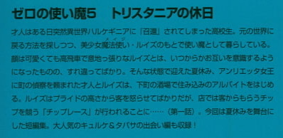

| [ヤマグチノボル] ゼロの使い魔05 | |
| ヤマグチノボル | |
| (2015) | |
|
ゼロの使い魔５〈トリスタニアの休日〉
ヤマグチノボル
|

底本データ
一頁18行 一行40文字 段組１段
文庫判15センチ
ISBN4840112908
ゼロの使い魔５ トリスタニアの休日
才人はある日突然異世界ハルケギニアに『召還』されてしまった高校生。元の世界に戻る方法を探しつつ、美少女魔法使い・ルイズのもとで使い魔として暮らしている。顔は可愛くても高飛車で意地っ張りなルイズとは、いつからかお互いを意識するようになったものの、すれ違ってばかり。そんな状態で迎えた夏休み、アンリエッタ女王に町の偵察を頼まれた才人とルイズは、下町の酒場で住み込みのアルバイトをはじめる。ルイズはプライドの高さから客を怒らせてばかりだが、店では客からもらうチップを競う「チップレース」が行われることに......（第一話）。今回は夏休みを舞台にした短編集。大人気のキュルケ＆タバサの出会い編も収録。
ヤマグチノボル（やまぐち・のぼる）
１９７２年２月、茨城県生まれ。『カナリア～この想いを歌にのせて』（角川スニーカー文庫）でデウュー。著書に『グリーングリーン鐘ノ音ファンタスティック』『つっぱれ有栖川』（共に角川スニーカー文庫）『描きかけのラブレター』（富士見ミステリー文庫）『グリーングリーン鐘ノ音スタンド・バイ・ミー』（ＭＦ文庫Ｊ）など多数。小説連載も多数手がけている（富士見ファンタジアバトルロイヤル等）。『グリーングリーン』『Gonna Be??』『ゆきうた』『私立アキハバラ学園』『魔界天使ジブリール』など、ゲームシナリオライターとしても活躍中。
◎兎塚エイジ（うさつか・えいじ）
大阪出身、大阪在住の大阪人。８月１６日生まれ。
現在、サラリーマンをしながらイラストを描かせて頂いています。
今までの参加作品は『導士さまといっしょ』（電撃文庫）です。
ゼロの使い魔５
〈トリスタニアの休日〉
※ＩＮＤＥＸ※
※第一話 『魅惑の妖精』亭........................11
※第二話 炎の出会いと風の友情..................105
※第三話 トリスタニアの休日.....................169
登場人物
ジェシカ
酒屋『魅惑の妖精』亭の娘。明るい性格で、店のウエイトレスのまとめ役。
サイト
（平賀才人）
ルイズの使い魔『ガンダールヴ』。あらゆる武器を扱うことができるが、普段は好奇心旺盛なフツーの高校生。
ゼロのルイズ
伝説の系統『虚無』を操る。誇り高く意地っ張りだが、最近ちょっと才人を認めはじめた。
アンリエッタ女王
トリステインの女王様。最愛の人を亡くしたあとも、気丈にふるまっている。
雪風のタバサ
『風』系統の魔法を得意とする。本が好きで無口な少女。
微熱のキュルケ
『火』系統の魔法を得意とする。タバサとは、性格が正反対ながら、親友同士。
第一話『魅惑の妖精』亭
１
「さて、明日から夏季休暇なんだけど」
ルイズは使い魔を見下ろして言った。
「そうですね」
才人は地面に転がったまま、ご主人様さまに向かって相槌をうった。
「一週間ほどお暇をいただきたいって、どーゆーこと？」
ここはアウストリの広場。いつもどおり......、才人はルイズに踏まれていた。才人は、ルイズに踏まれることになった理由を、もう一度かんで含めるように説明した。
「いや......、シエスタが、タルブの村に遊びに来ないかって言うもんだから。しばらく滞在したら、すぐにお前の領地に行くからいいじゃん。たまにゃ家族と水入らずってのも悪くないんじゃないの？」
がしっとルイズに顔を踏まれた。再度の提案は却下されたのであった。
広場から向こうに見える正門は帰郷する生徒であふれている。久々の帰郷で浮かれる生徒たちが、迎えに来た馬車に乗り込んでいた。彼らはこれから故郷の領地や、両親が勤務に励んでいる首都トリスタニアへと向かうのである。トリステイン魔法学院は明日から夏期休暇なのだ。二ヵ月半にも及ぶ、長い休暇である。
「あ。あのですね。ミス・ヴァリエール。わたし、才人さんにもお休みが必要だと思うんです」
おろおろしたシエスタが、才人を苛めるルイズをとりなす。シエスタは、帰郷に備え、いつものメイド服ではなく草色のシャツにブラウンのスカートの普段着姿だった。
ルイズはじろっとシエスタをにらみつけた。しかし......、シエスタもさるもの。恋する女の負けん気で、逆にルイズをにらみ返す。
「お、お休みだって必要じゃないですか！ い、いつもご自分の好きなようにこきつかって......、ひどいです！」
「いいのよこいつは。わたしの使い魔なんだから」
その態度に、シエスタはなにか感づいたらしい。
「使い魔？ へぇ、ほんとにそれだけなのかなぁ......？」
ぽろっとシエスタがつぶやく。その目が、うさぎを捕まえるワナを仕掛けるときのように、きらっと光る。恋する女はライバルに敏感なのであった。
「え？ どーゆー意味よ」
「べ、べーつーにー？」
とぼけた声で、シエスタがつぶやく。
「言ってごらんなさいよ」
「最近、ミス・ヴァリエールがサイトさんを見る目、ちょっと怪しいなと。そんな風に思っただけです」
つん、とすましてシエスタは言った。ルイズはぎりっとにらんだ。わたしってば、メイドにまでナメられてる。才人のせいだ、才人が平民のくせに妙な活躍ばっかりするから、学院の平民まで、なんだか調子にのり始めている。そんな噂をルイズは聞いたことがあったが、これがそうなのね。王国の権威が。貴族の権威が。ま、そっちはともかくわたしの権威が！
ルイズはぴくぴくと震えた。
さんさんと照りつける日差しに目を細めたシエスタは、ふう、とため息をつくと胸元をはだけ、ハンカチで汗をぬぐう。
「ほんと......、暑いですわね。夏って」
野に咲く花のような、健康な色気がそこからあふれ出した。
脱いだらすごい、例の二つの丘の谷間が目に飛び込んでくる。ルイズは、はっ！と気づき、才人の顔をみた。ルイズの足の下、使い魔は横目でシエスタのはだけたシャツの隙間を必死に観察している。キレそうになったが、ルイズは耐えた。
負けてたまるもんですか。ええ、こっちは貴族よ。黙ってても、高貴がシャツの隙間からこぼれてしまうんですのよ。
ルイズは「ふぅ暑い」と、つぶやき、シャツのボタンを外した。それからハンカチで汗をぬぐう。しかし......、そこにあるのは谷間ではなく、どこまでも広がる爽やかな平原であった。
才人はどっちかというと起伏がある地形が好みらしく、視線は動かない。
そんな様子を見てシエスタが口をおさえ、ぷ、とやらかしたのでルイズはついにキレた。
「な、なによ！ 今、笑ったわね！」
「そんな......、笑うわけないじゃないですか。そんな、ねえ、わたしが貴族のかたを見て笑うなんて......、ねえ？」
シエスタは顔を輝かせてルイズをなだめる。それから顔をそむけ、ぽろっとつぶやいた。
「......子供みたいな体して、貴族？ ......へぇ」
ルイズの口から「かは」と呼気が漏れた。
「なんつったの！ ねえ！」
「......さあ、......なんにも。なにせほら暑いものですから。暑い暑い。ああ暑い」
わなわなとルイズが震える。才人がつぶやいた。
「なあ、ご主人さまよ」
「あによ」
「タルブに、ちょっと行っていい？」
ルイズは「かうは」と、せつなげなため息を漏らし、何回あんたは同じこと聞くのよと全身をしならせて全力で才人を痛めつけ始めた。シエスタが「落ちついて！ミス・ヴァリエール！落ちついてください！」とその背にかじりつく。一同がそんないつもの騒ぎをやらかし始めたとき......。
ばっさばっさと一羽のフクロウが現れた。
「ん？」
そのフクロウはルイズの肩にとまると、羽でぺしぺしと頭を叩いた。
「なによこのフクロウ」
フクロウは書簡をくわえている。ルイズはそれを取り上げた。そこに押された花押に気づき、真顔に戻る。
「なんですか？ そのフクロウ」
シエスタが覗き込む。
ルイズは真面目な顔になると、サイトに立ち上がるよう促した。
「なんだよ？」
中を改め、一枚目の紙にルイズは目を通した。それからルイズはつぶやく。
「帰郷は中止よ」
「中止ってどういうことだよ。シエスタがせっかく誘ってくれたのに......。すっごくがっかりしてたぞ」
自室に戻り、帰郷のために一度まとめた荷物を、ルイズが再び改め始めたのを見て、才人がたずねた。
ルイズは才人に、さっきフクロウが運んできた手紙を見せた。
「いや、俺、こっちの文字読めないから」
ぴょこんとルイズはベッドに正座すると、語り始めた。
「この前の事件のあと......、姫さまが落ち込んでたの、知ってるわよね？」
才人は頷いた。悲しい事件であった。なにせ、死んだ自分の恋人が......、敵の手によって蘇らされ、自分をさらおうとしたのだった。落ち込むのも当然であった。
「お可哀想に......、でも、いつまでも悲しみの淵には沈んでおられないようだわ」
「どういうこと？」
ルイズは手紙に書いてあることを説明した。
アルビオンは艦隊が再建されるまでまともな侵攻をあきらめ、不正規な戦闘を仕掛けてくる──マザリーニを筆頭に、大臣たちはそう予想したらしい。街中の暴動や反乱を扇動するような、卑怯なやり方でトリステインを中から攻める......、そんなことをされてはたまらない。そのような敵の陰謀におびえたアンリエッタたちは治安の維持を強化することにしたこと......。
「治安の強化はいいけど、で、お前になにをしろって？」
「身分を隠しての情報収集任務よ。なにか不穏な活動が行われていないか？平民たちの間では、どんな噂が流れているのか？」
「うわ、スパイかよ！」
「スパイって？」
「いや、そういう情報を集める仕事を、俺の世界ではそう言うの」
「ふーん......。とにかく、いわゆる間諜てやつね......」
なぜかルイズは不満そうである。
「どうした？」
「だって......、地味じゃない。こんなの」
「いや、情報は大事なんじゃねえのか？ 情報を軽視したばっかりに昔日本は戦争に負けたって、じいちゃんが言ってた」
「はい？」
「いや、こっちのこと......。で？」
アンリエッタからの手紙には、トリスタニアで宿を見つけて下宿し、身分を隠して花売りなどを行い、平民たちの間に流れるありとあらゆる情報を集めるよう、指示してあった。任務に必要とされる経費を払い戻すための手形も同封されていた。
「なるほど」
「そういうわけで、荷物をまとめなおしてるの。こんなに服もってけないし」
ルイズは鞄一個に軽くまとめた荷物を指差した。
「夏休みだってのに働かされるってわけか......」
せつなさそうに、才人はつぶやいた。
「ぼやいてないで！ ほら、さっさと出発するわよ！」
そんなこんなで、二人はトリスタニアへと出発した。身分を隠すために、馬車は使えない。学院にある馬は、学院のものなので使えない。結局、歩きである。
じりじりと太陽が照りつける街道を、才人たちはトリスタニア目指して歩いた。トリスタニアまで、徒歩だと二日はかかる。
太陽を恨めしげに見上げ、才人はつぶやいた。
「くそ......、今ごろはシエスタのうちで冷たい水でも飲んでたっていうのに......」
「ぼやかないの！ ほら！ 歩く！」
荷物を全部使い魔に持たせたルイズが怒鳴る。
街についた二人は、まず財務庁を訪ね、手形を金貨に換えた。新金貨で六百枚。四百エキューである。
才人はベルトに結わえられた腰鞄の中に入った、アンリエッタから貰ったお金を思い出す。新金貨が四百枚ほど残っている。二百七十エキューといったところか。
才人はまず、仕立て屋に入り、ルイズのために地味な服を買い求めた。ルイズは嫌がったが......、マントに五芒星では貴族とふれてまわっているようなものだ。平民に混じっての情報収集なんか無理である。せっかく歩いてきた意味がないではないか。
しかし、地味な服を着せられたルイズは不満そうだった。
「どうした？」
「足りないわ」
「なにが？」
「この頂いた活動費よ。四百エキューじゃ、馬を買ったらなくなっちゃうじゃないの」
「馬なんかいいだろ。身分を隠してって書いてあったんだろ？つまり平民のフリしろってことだろ。歩け。足あんだから」
「平民のフリしようがしまいが、馬がなくっちゃ満足なご奉公はできないわ」
「安い馬でいいだろ。妥協しろよ」
「そんな馬じゃ、いざってときに役に立たないじゃないの！馬具だって必要よ。それに......。宿だってヘンなところには泊まれないわ。このお金じゃ、二ヵ月半泊まっただけでなくなっちゃうわ！」
金貨が六百枚もふっとぶ宿とは、どんなところなんだろう？
「安い宿でいいだろ」
「ダメよ！ 安物の部屋じゃよく眠れないじゃない！」
さすがは貴族のお嬢さん。平民に混じって情報収集の任務なのに、高級な宿に泊まるつもりのようだった。なに考えてんだろ、と才人は思った。
「俺も持ってるから、貸してもいいけど」
「......そんでも足りないわ。ご奉公にはお金がかかるものよ」
「じゃあどうすんの」
「なんとか増やす方法はないものかしら」
そんなこんなで金を増やすのどうするのやっぱり安いとこにしようだの、やいのやいの言い合いながら入った居酒屋で、才人は店の一角にしつらえられた賭博場を見つけた。そこでは酔っ払った男や、いかがわしいなりの女たちが、チップをとったりとられたりの戦いを繰り広げていた。才人はルイズが眉をひそめるのも気にせず、博打に見入った。
「あんた、なに見てるのよ」
「いや、これで増やすってのは、どう？」
「博打じゃないの！ あきれた！」
「ま、見てろよ。昔ゲームで散々やったんだ」
才人は金貨三十枚......、二十エキューばかりをチップに換えると、くるくる回る円盤がついたテーブルへと向かう。円盤の円周は、赤と黒に色分けられた三十七個のポケットに分かれ、それぞれに数字が振られている。
その円盤の中を小さな鉄球が回る。そして、円盤の周りには目の色を変えた男女がその様子食い入るように見つめていた。
ルーレットである。
才人は張っている客たちを眺めた。まずは運試しである。勝ってる客と同じに、赤に十エキューほどのチップを張ってみた。
球は赤のポケットに入りこんだ。
「ほら見ろ。増えた！ 俺偉い！」
才人は割とケチだったので慎重にちびちびと張り、三十エキューほどチップを増やした。
「ほら見ろ！ 任務遂行の金が増えたぞ！ いやぁ、文句ばっかり言ってる誰かさんとは大違いじゃないですか」
胸をそらして才人は言った。ルイズの目が、きらりと光る。
「わたしに貸してごらんなさい」
「やめとけ。お前じゃ無理だよ」
「なによ。使い魔が勝てるなら、主人がやればその十倍勝つわ」
ルイズは才人が勝った分を、そっくり黒においた。しかし......、外した。才人が増やした分が一瞬で溶けた。
「何してんだよ！ お前は！ せっかく俺が増やしたのに！」
「う、うっさいわね」
「まったく......、お前、いっつも威張ってる割には、まともに金増やすこと一つできないんだから。少しはシエスタでも見習って、料理の一つでも覚えろ。そんでレストランでコックのバイトでもしろ。稼ぐってな、そういうことだ」
シエスタを見習って。その言葉が、ルイズのなにかに火をつけた。
「み、み、見てなさいよ。誰が負けるもんですか」
「ルイズ？」
その様子に、才人は震えた。
三十分後......。
ルイズはがっくりと肩を落とし、恨めしげに盤面を見つめた。彼女がさっき置いたチップが、バンカーの手でごっそりと消えていく。ブロンドの美少女はしばらくしっとりと肩を落としていたが、やおら昂然と頭をあげ、目の前のチップを洗いざらい盤面の一点に置こうとした。そんなルイズの肩を後ろから見ていた才人がつかむ。
「ルイズ」
「あによ」
思いっきり不機嫌な声で、ルイズがつぶやく。才人はきっぱりと言った。
「もうやめろ」
「次は勝つわ。絶対勝つ」
「お前、そのセリフ何回言ったと思ってるんだよ！」
才人の絶叫が響き渡る。チップを張ろうとしていた客たちが振り向いて苦笑を浮かべる。博打場では日常茶飯事の光景だ。
「お前、いっぺんも勝ってねえじゃねえかよ！」
才人はルイズの鼻先に、指をつきたてた。ここまで博打をしてはいけない人間を、才人は初めて見た。ルイズはすでに四百エキュー......、任務の必要経費をほとんどをすっていた。ルイズに残されたチップは、換金したら、もう三十エキューほどにしかならない。これを失ったら文無しである。
「だいじょうぶ。次はわたしが編み出した必勝法、炸裂するから」
「言ってみろ」
「今までわたしってば、赤と黒、どっちかに賭けてたわよね」
「ああ。十五回連続で赤黒はずすなんて、お前死んだほうがいいぞ」
「っさいわね。いいこと？ それじゃ勝っても倍よ。どゆこと？」
「普通そうだろ」
「でね、わたし気づいたの。赤か黒か、当ててもしょせん二倍。でもね......」
「でも、なんだよ」
才人は震えた。ルイズ、何かにとりつかれたような声である。
「数字を当てれば、三十五倍よ。今までの負けを取り返して、おつりがくるじゃない。なぁんだ、最初からこうすればよかった！」
「それがお前の必勝法？」
ルイズは大きく頷いた。
無言で才人はルイズの腕をつかんで引っ張る。
「なにすんのよ！」
「当たる確率は三十七分の一だっつの！」
「それがどうしたのよ！ わたしってば、十五回負けたわ。どう考えても次は勝つわ。じゃないとおかしいもの。どうせ勝つなら、大きく勝ったほうがいいじゃないのよ！」
ルイズの鳶色の瞳がぎらぎらと光っている。才人は、株で失敗して夜逃げした叔父さんの目を思い出した。最後に会った日、確かこんな目をしていた。その日叔父さんが『ガチで上がる』と言った株は、ガチで暴落した。
「落ちつけ。そのチップを換金して、その金で泊まれるとこさがそ。な？」
「いやよ。負けたまま引き下がったら、ラ・ヴァリエールの名が泣くわ」
「んなもん泣かせとけ！」
そう叫んだ瞬間、才人は順当に股間を蹴り上げられた。床に転がる。
「ほぁああああああ......、お、お前は俺のせつない場所に恨みでもあんのかよ......」
邪魔な使い魔を排除したルイズは、再びルーレットの盤面に向き直る。おりしも、シューターがホイールに球を放りこんだところであった。まだベットは間に合う。ルイズは先ほど頭に浮かんだ数字の場所に、残りのチップを余さず置いた。
そして、回転するホイールと球を、これ以上ない真剣な目でにらみつける。
カラコロと音を立て、運命の球はポケットに入った。ルイズの表情が一瞬希望に輝き、瞬間絶望にとってかわる。そこは、ルイズが賭けた数字の隣であった。
痛む股間をさすりながら、才人は立ち上がり、ルイズを引っ張る。
「行くぞ」
「あに言ってるの」
「へ？」
「お隣さんのポケットよ。次は我が家へご訪問よ」
「もう賭ける金がねえだろが！」
「あんたのポッケに入ってるお金が手付かずじゃない」
「ばか！ これは俺の金！」
才人は腰鞄をおさえた。これを賭けでするわけにはいかない。そしたら才人まで文無しになってしまう。
「あのね？ 使い魔のものは、主人のもの。決まってるの」
「ざっけんな！」
しかし、シエスタと比べられ、脳髄の奥まで博打の熱でちりちりに焼かれたルイズの耳には届かない。電光石火の早業で、才人の股間を蹴り上げようとした。
しかし、才人もさるもの。がっちり両足を閉じてガードした。そして、振り上げたルイズの足首をつかむ。
「二度も蹴られるかっつの！」
ルイズが冷たい声でつぶやく。
「ヴァスラ」
才人の体をつつんだ魔法の拘束具が電流を流す。激しく痙攣しながら、才人は再び床に転がった。
「......そっかぁ、これまだつけられてたんだっけ」
弱々しくつぶやきながら、才人は己の好奇心をうらんだ。ああ、俺が賭博場なんかに興味をもたなきゃ、こんなことには......。
ルイズは才人の腰鞄をさぐり、残さず金貨を巻き上げると、そっくりそれをチップに換えた。才人は少しほっとした。いくら博打の才能ゼロのルイズでも、才人の体の痺れがとれるまでにそれだけのチップを金部すってしまうということはないだろう。痺れがおさまったら、ルイズの口をおさえ、有無を言わさずここから出る。才人はそう決心した。
「一点賭けはだめね。基本に戻るわ」
「そうだ......。赤黒。ちまちまと赤黒。せめてそうしてくれ......」
「忠実な使い魔に敬意を表して、その髪と目の色に賭けるわ」
「黒？」
「そうよ」とルイズは頷いて、チップを黒に張った。
全額......。二百七十エキューのチップ、全額である。
才人は漏らしそうになった。
「や！ め！ て！」
ルイズは才人ににっこりと微笑んだ。
「ばかねえ。払い戻しが二倍でも金額が金額よ？勝ったら、今までの負けを取り返しておつりがくるじゃない。しかも、たった一回。たった一回勝つだけでよ？」
「お！ ね！ が！ い！」
「最初からこうすればよかったわ」
シューターがルーレットを回転させた。主人と使い魔の大きな運命をのせて、小さな球が回り始めた。
カララララ......、と乾いた音をたてて、球がホイールの上を回る。回転は徐々に勢いを失い、運命を振り分けるべく、入るべきポケットを目指した。ルイズが大金を黒に賭けたので、周りの客は赤に張った。黒はルイズだけである。
赤に入って、はねて、今度は黒に入って、はねて......。ルイズは熱に浮かされたような口調でつぶやく。
「わたしは伝説よ。こんなとこで、ねえ、負けるもんですか」
そして球は、一つのポケットに入り......、止まった。
ルイズは思わず目を閉じる。
辺りから、悲しみのため息が漏れた。
「......え？」
ルイズ以外は赤に張っている。その連中からため息。つまり、赤に張った連中は負けたのである。ということは......。
「やっぱわたしは『虚無』の担い手よ！」
絶叫して、ルイズはぱっちりと目を開く。直後、あんぐりと口を開いた。
球は......、黒でも赤でもない、一個だけ設けられた緑のポケットに入っていた。親の総取りのそのポケットには......、ルイズを祝福するように〝０〟の数字が光っていた。
才人とルイズは、暮れゆく街の中央広場の片隅にぼんやりと座りこんでいた。
ごぉんごぉん、とサン・レミの聖堂が夕方六時の鐘をうつ。
おなかがすいて疲れていたが、どこにも行けない。
ルイズは才人が先ほど買ってやった、地味なつくりのブラウンのワンピースを身につけている。足には粗末な木の靴。マントと杖は、才人が持った鞄に入っていた。
格好だけ見ると、どこぞの田舎娘のようであったが、やたらと高貴な顔のつくりと桃色がかったブロンドのおかげで、お芝居の中の貧乏ッ子のようにちぐはぐな感じがした。
才人はいつもの格好だったが、街中を抜き身のだんびら下げて歩くわけにもいかないので、デルフリンガーを布でぐるぐる巻き、背中にしょっていた。
ぽそりと、ルイズがやっとことの大変さに気づいたような口調でつぶやいた。
「ど、どうしよう」
才人はじろっとルイズをにらむと、
「もう二度と、お前に金はもたせねえからな」
「う～～～」
膝を抱えて、ルイズが悲しげにうなる。
「で、どーすんだ。金。宿を借りることもできなきゃ、飯も食えねえ。任務どーすんすか。お偉いお偉い陛下直属の女官さま。しがない使い魔にご教授くださいよ。ねえ」
イヤミたっぷりに才人は言った。自分の金まで使われた。いつかきっちり弁償してもらうが、今はとにかく目先の宿と食い物である。
「今、考えてる」
むっとした顔で、ルイズが言った。
「おとなしく姫さまに頭さげてまた金もらおうぜ」
「無理よ。姫さまはご自分だけの裁量で、わたしに秘密の任務をお授けになってるの。お金だって、大臣たちを通さない、姫さまのご自由になる分しか使えないはずだわ。たぶん、あれで精一杯」
「その金を、お前は三十分ですったんだっての。なに考えてんの」
「だって、四百じゃ満足いくご奉公ができないじゃない！」
「お前が贅沢ばっか言うからだろ！」
「必要なんだもの！」
「とにかく、じゃああれだ。実家に連絡しろ。ええおい、公爵さま」
「無理よ。お忍びの任務なのよ。家族にだって話せないわ」
ルイズは膝を抱えて、その上に顎をのせた。
やっぱり世間知らずのお嬢さまなんだよな、こいつってば......。買い物ひとつまともにできやしない。異世界からきた才人のほうが今では駆け引きがうまいぐらいである。まかせておいたって、どうにもならない。
しかしいい考えは思いつかない。ぼやっと広場の噴水なんかを眺めていたが......。
「ん？」
道行く人々が、ほほう、と感心したようにルイズを見つめていることに気づく。ルイズの可憐さと高貴さはいやでも目をひく。それが村娘みたいな格好で膝を抱えているんだからなおさらだ。どこのお芝居小屋から逃げ出してきたんだろう、そんな目で人々はちらちらとルイズを盗み見ている。
才人はひらめいて、立ち上がった。
ルイズはきょとんとした。
「どうしたの？」
ルイズの言葉を無視して、才人は道行く人に向かって口上を述べ始めた。
「えー、紳士淑女の皆さん」
なんだなんだと、道行く人が立ち止まる。
「えー、ここな娘は、サーカスから逃げ出してきた狼少女」
「はい？」
なにを言うのかこいつは。
「なにせ狼に育てられたものですから、吼えるわ鳴くわ、大変です。しかし一番すごいのは、首まで足でかくところ！さてお立ち会い！今から首を足でかきます！」
才人はルイズに小さくつぶやいた。
「じゃ、足で首かけ。ほら」
才人が顎をしゃくった。その顔にルイズの足の裏が激突する。才人は地面に転がった。
「あに考えてんのよ！ わわ、わたしに獣の真似しろですってぇ！」
才人も立ち上がるとルイズの腕を引っつかんで怒鳴りつける。
「芸でもしなきゃしょうがねえだろ！ 他に稼ぐ方法あんのか！ああん!?」
ルイズは髪を振り乱し、才人ととっくみあいを開始した。客たちは「確かに狼少女だ」と妙な納得をした。
しかし、ただ取っ組み合いをしているだけなのですぐに飽きられ、客たちは去っていく。一文にもならない。才人はぐったりと力がぬけ、地面に横たわった。ルイズも疲れていたのですぐに体力を失い、その背に座りこんだ。
「おなかすいた......」
「俺もだ......」
そんな風に座り込む二人に、ちゃりーんと誰かが銅貨を投げた。才人が飛びついて拾い上げる。ルイズが憤った声で立ち上がる。
「だれ！ 出てきなさいよ！」
すると人ごみの中から、奇妙ななりの男が現れた。
「あら......、物乞いだと思ったんだけれど......」
妙な女言葉だった。
「はぁ？ あんたそこになおりなさい！ わたしはねえ！恐れ多くも公爵家......」
そこまで言おうとしたとき、才人が立ち上がり、ルイズの口をふさいだ。
「こーしゃくけ？」
「な、なんでもないです！ はい！ こいつちょっと脳がアレで。はい」
むごごご、とルイズは暴れたが、才人はかまわずに押さえつけた。これ以上目立ったら、お忍びの任務どころではない。
男は興味深そうに、才人とルイズを見つめている。随分と派手な格好である。ギーシュも格好は派手だが、微妙にベクトルが違う。黒髪をオイルで撫でつけ、ぴかぴかに輝かせ、大きく胸元の開いた紫のサテン地のシャツからもじゃもじゃした胸毛をのぞかせている。鼻の下と見事に割れた顎に、小粋なひげをはやしていた。強い香水の香りが、才人の鼻をついた。
「じゃあ、なんで地面に寝てるの？」
「いやぁ、行くとこも食うものもなくって......」
「でも物乞いじゃないわ」
ルイズがきっぱりと言った。男は興味深そうにルイズの顔を見つめた。
「そう。なら、うちにいらっしゃい。わたくしの名前はスカロン。宿を営んでいるの。お部屋を提供するわ」
にこっと微笑んで、男が言う。気味のわるい口調と格好だが、親切な人物のようだ。才人の顔が輝いた。
「ほんとですか！」
「ええ。でも、条件が一つだけ」
「なんなりと」
「一階でお店も経営してるの。そのお店を、そこの娘さんが手伝う。これが条件。よろしくて？」
ルイズはしぶった顔をしたが、才人ににらまれ、おとなしく頷いた。
「トレビアン」
スカロンは両手を組んで頬によせ、唇を細めてにんまりと笑った。オカマみたいな動きである。というかオカマ以外の何者でもない。キモい。異世界にもオカマいるんだ......、しかもトレビアンなんだ......、と才人は妙にせつなくなった。
「じゃ決まり。ついてらしゃい」
リズムを取るように、くいっくいっと腰を動かしながら男は歩き出した。才人は気乗りしなさそうなルイズの手を握って、あとに続く。
「なんかイヤだわ。あいつ変」
才人は怒りに燃えた目で、ルイズの顔を覗き込んだ。
「お前、えり好みできる立場だと思ってんのか？」
２
「いいこと！ 妖精さんたち！」
スカロンが、腰をきゅっとひねって店内を見回した。
「はい！ スカロン店長！」
色とりどりの派手な衣装に身をつつんだ女の子たちが、いっせいに唱和した。
「ちがうでしょおおおおおお！」
スカロンは腰を激しく左右に振りながら、女の子たちの唱和を否定した。
「店内では、〝ミ・マドモワゼル〟と呼びなさいって言ってるでしょお！」
「はい！ ミ・マドモワゼル！」
「トレビアン」
腰をカクカクと振りながら、スカロンは嬉しそうに身震いした。自分たちをここまでつれてきた中年男性のその様子に、才人は吐きそうになった。
しかし店の女の子たちは慣れっこなのか、表情一つ変えない。
「さて、まずはミ・マドモワゼルから悲しいお知らせ。この『魅惑の妖精』亭は、最近売上が落ちています。ご存知のとおり、最近東方から輸入され始めた『お茶』を出す『カッフェ』なる下賎なお店の一群が、わたしたちのお客をうばいつつあるの......。ぐすん......」
「泣かないで！ ミ・マドモワゼル！」
「そうね！ 『お茶』なんぞに負けたら、『魅惑の妖精』の文字が泣いちゃうわ！」
「はい！ ミ・マドモワゼル！」
スカロンはテーブルの上に飛び乗った。激しいポージング。
「魅惑の妖精たちのお約束！ ア～～～～ンッ！」
「ニコニコ笑顔のご接待！」
「魅惑の妖精たちのお約束！ ドゥ～～～～ッ！」
「ぴかぴか店内清潔に！」
「魅惑の妖精たちのお約束！ トロワ～～～～ッ！」
「どさどさチップをもらうべし！」
「トレビアン」
満足したように、スカロンは微笑んだ。それから、腰をくねらせてポーズをとる。のどもとまで胃液がこみ上げてきたが、才人は必死に飲み込んだ。
「さて、妖精さんたちに素敵なお知らせ。今日はなんと新しいお仲間ができます」
女の子たちが拍手をした。
「じゃ、紹介するわね！ ルイズちゃん！ いらっしゃい！」
拍手につつまれ、羞恥と怒りで顔を真っ赤にさせたルイズがあらわれた。才人は、う！と息を呑んだ。ルイズは店の髪結い師に、桃色がかったブロンドを結われ、横の髪を小さな三つ編みにしていた。そしてきわどく短い、ホワイトのキャミソールに身をつつんでいる。上着はコルセットのように体に密着し、その体のラインを浮かび上がらせている。背中はざっくりと開いて、熟しきらない色気を放つ。なんとも可憐な妖精のような、その姿であった。
「ルイズちゃんは、お父さんの博打の借金のかたにサーカスに売り飛ばされそうになったんだけど、間一髪お兄ちゃんと逃げてきたの。とってもかわいいけれど、とっても可哀想な子よ」
同情のため息が女の子の間から漏れる。それは道すがら、才人がでっちあげた嘘である。苦し紛れに、自分は兄だということにした。どう見ても兄妹には見えない二人の容姿だったが、スカロンはその辺のことにはあまりこだわらなかった。どうでもいいらしい。
「ルイズちゃん、じゃ、お仲間になる妖精さんたちにご挨拶して」
わなわなとルイズは震えている。怒っているのだ。激しく。強く。プライドの高い貴族のルイズが、あんな格好をさせられて、平民に頭を下げろと言われているのだ。たぶん、今にも暴れだし、『エクスプロージョン』でも連発すんじゃなかろか、と才人は怖くなつた。
しかし......、任務を果たさなくては、という責任感がルイズの怒りを抑えた。
考えてみれば、酒場は噂が集まる場所である。情報収集にはうってつけだ。しかも文無しではしかたない。これも任務と自分に言い聞かせ、ひきつった笑顔を浮かべるとルイズは一礼した。
「ルルル、ルイズです。よよよ、よろしくお願いなのです」
「はい拍手！」
スカロンが促す。いちだんと大きな拍手が店内に響く。スカロンは壁にかけられた大きな時計を見つめた。いよいよ開店の時間である。
指をぱちんとはじいた。その音に反応して、店の隅にしつらえられた魔法細工の人形たちが、派手な音楽を演奏し始めた。行進曲のリズムである。スカロンは興奮した声でまくし立てた。
「さあ！ 開店よ！」
ばたん！ と羽扉が開き、待ちかねた客たちがどっと店内になだれ込んできた。
才人たちがやってきたここ『魅惑の妖精』亭は一見ただの居酒屋だが、かわいい女の子がきわどい格好で飲み物を運んでくれるので人気のお店であった。スカロンはルイズの美貌と可憐に目をつけ、給仕として連れてきたのである。
店の刺繍が入ったエプロンを渡された才人は、皿洗いの仕事を与えられた。才人も宿を提供される以上、働かないわけにはいかない。
店は繁盛してるので、山のように食器が運ばれてくる。
皿洗いは異世界だろうがどこだろうが、新入りの仕事であるようだった。誰も手伝ってくれない。あんなオカマの店の皿など洗いたくなかったが、才人はぐっと我慢した。
ルイズの任務のためである。足りてなくて、わがままで、気が強くって、才人の言うことなど一つもきかない生意気な小娘だが、惚れてるので仕方がなかった。ぶつくさ文句を言いながらも、ルイズの情報収集とやらがうまくいくよう、今回も頑張るつもりであった。そして、ラグドリアンの湖畔で見たアンリエッタの悲しい横顔......。あの可哀想なお姫さまのためになにかしてあげたい。自分にできることで、好きな人たちの手助けができるなら......、帰る方法探しはそのあとでかまわない。煩悩の塊だが、何気に純真さも持つ才人はそんな風に思っていたのだった。
才人は必死になって皿と格闘した。しかし、物事には限界というものがある。そのうちに疲れて手が動かなくなった。しかし、ぐったりしてても洗うべき皿はなくならない。どんどん積まれ始めた。
ぼけっとそんな皿の山を見つめ、流し場の前でぐったりとしている才人の元に派手な格好の女の子があらわれた。長い、ストレートの黒髪の持ち主の可愛らしい子である。太い眉が、活発な雰囲気を漂わせている。年のころは才人とあまり変わらないように見えた。胸元の開いた緑のワンピース、胸の谷間が目に飛び込んできて才人は急に目がさめた。
「ちょっと！ お皿がないじゃないのよ！」
腕を腰にやって、才人を怒鳴りつける。
「す、すいませんっ！ ただいま！」
可愛い女の子に命令されることに慣れきっていた才人は、跳び上がって反射的に皿を洗い始めた。その慣れない手つきを見て、黒髪の女の子が首をかしげる。
「かしてごらん」
そう言って才人の手から皿洗い用の布を取り上げると、ごしごしと手慣れた調子で洗い始めた。無駄のない、スムーズな動きで、どんどん皿を片付けていく。才人は皿洗いにもコツがあるのだということを知った。
「片面ずつ磨いてたら時間かかるでしょ。こうやって布で両面をはさむようにして、ぐいぐい磨くのよ」
すごい、と才人は言った。その様子が、いかにも感心したように見えたので、女の子は微笑んだ。
「あったしー、ジェシカ。あんた、新入りの子のお兄さんなんでしょ？名前は？」
「才人。平賀才人」
「ヘンな名前」
「ほっとけ」
才人はジェシカと並んで皿を洗い始めた。ジェシカはきょろきょろと辺りを見回すと、小さな声で才人につぶやいた。

「ねえねえ、ルイズと兄妹ってうそでしょ？」
「いや、正真正銘、兄、妹、なんだけど」
ぎこちない声で才人は言った。
「髪の色も、目の色も、顔の形も、まったく違うじゃない。信じる人なんていないわよ」
才人は言葉につまった。
「でも、別にいいんだよ。ここいる子はみんなワケありなんだから。他人の過去を詮索するやつなんかいないよ。安心して」
「そ、そっか......」
ジェシカはぐいっと才人の目を覗き込んだ。一瞬、どきっとする。
「ねえねえ、でもあたしにだけ、こっそり教えて？ほんとはどういう関係なの？どっから逃げてきたの？」
ジェシカは才人みたいに好奇心の塊らしい。わくわくした表情で、才人を見つめている。しかし、ほんとのことを言うわけにはいかない。
才人は、ジェシカの派手な衣装をながめた。給仕の〝妖精さん〟の一人なんだろう。余計な詮索がわずらわしいので、才人はあっちいけというように手を振った。
「こんなとこで油売ってていいのかよ。きみにはきみの仕事があるだろ。ちゃんとワインやらエール酒やら運んでこい。スカロン店長に怒られるぞ」
「いいのよあたしは」
「なんで？」
「スカロンの娘だもん」
才人はお皿を落っことした。がちゃーん、と音を立て、皿はこなごなになる。
「あー！ なに割ってるのよ！ お給金からさっぴくからね！」
「娘？」
「そうよ」
あのオカマ店長からこんな可愛い娘が生まれるなんて......、遺伝子なにやってんの、と才人は思った。
「ほら！ おしゃべりだけじゃなくって手も動かす！お店が忙しくなるのはこれからだからね！」
才人もひーこら苦労していたが、ルイズにはもっと激しい受難が待っていた。
「......ご、ご注文の品、お持ちしました」
ひきつった笑顔を、必死に浮かべ......、ワインの壜と陶器のグラスをテーブルに置く。目の前では、下卑た笑みを浮かべた男が、にやにやとルイズを見ている。
「ねえちゃん。じゃ、注げよ」
平民に平民に平民に酌？ 貴族のわたしが？貴族のわたしが？貴族のわたしが？
頭の中で、そんな屈辱的な想いがぐるぐる回る。
「あん？ どうした？ いいから注げって言ってんだろ？」
ぷは！ とルイズは息をはき、気持ちを落ちつかせた。
これは任務。これは任務。平民に化けて情報収集。じょうほうしゅうしゅう......。
呪文のように口の中でぶつぶつつぶやき、なんとか笑顔をつくる。
「で、ではお注ぎさせていただきますわ」
「ふん......」
ルイズは壜を持ち、男のグラスにゆっくりと注ぎ始めた。しかし......。怒りで震えているので、ねらいが外れ、ワインがこぼれて男のシャツにかかる。
「うわ！ こぼしやがった！」
「す、すいませ......、ん」
「すいませんですむか！」
それから男はじろじろとルイズを見つめた。
「お前......、胸はねえけど割と別嬪だな」
ルイズの顔から、さぁーっと血の気がひいた。
「気に入った。じゃ、ワインを口移しで飲ませてもらおうかな！それで許してやるよ！がっはっは！」
ルイズはワインの壜を持ち上げると、思いっきり口に含み、中身を男の顔に吹きかける。
「なにすんだ！ このガキ！」
どん！ とルイズは片足をテーブルの上にのせ、座った男を見下ろした。
「え？」
一瞬、この小娘から放たれる迫力に男はたじろいだ。
「げげげ、下郎。あああ、あんたわたしを誰だと思ってんの？」
「は、はい？」
「おおお、おそれおおくも、こここ......、こうしゃ......」
公爵家、と言おうとした瞬間、どん！ 後ろからルイズは跳ね飛ばされた。
「ご～～～～めんなさぁ～～～～い！」
スカロンであった。男の隣にどっかと腰掛けると、手に持った布巾で男のシャツを拭き始めた。
「な、なんだよオカマ野郎......、てめえに用は......」
「いけない！ ワインで濡れちゃったわね！ほらルイズちゃん！新しいワインをお持ちして！その間、ミ・マドモワゼルがお相手つとめちゃいま～～～す！」
スカロンは男にしなだれかかる。男は泣きそうな顔になったが、スカロンの怪力にしめつけられ動けない。
は、はいっ！ と我に返ったルイズは、厨房にすっ飛んでいった。
「えー、では、お疲れさま！」
店が終わったのは、空が白み始めた朝がたであった。ルイズと才人はふらふらの姿で立っていた。眠くて疲れて死にそうである。慣れない仕事で、二人ともグダグダになっていた。
「みんな、一生懸命働いてくれたわね。今月は色をつけといたわ」
歓声があがり、店で働く女の子や厨房のコックたちに、スカロンは給金を配り始めた。どうやら今日は給金日であるらしい。
「はい、ルイズちゃん。サイトくん」
わたしたちにももらえるの！ と才人とルイズの顔が一瞬輝いた。しかし......、そこに入っていたのは一枚の紙切れだった。
「なんですかこれ？」
才人がたずねる。スカロンの顔から笑みが消えた。
「請求書よ。サイトくん、何枚お皿割ったの？ルイズちゃん、何人のお客さんを怒らせたの？」
ルイズと才人は顔を見合わせ、ため息をついた。
「いいのよ。初めは誰でも失敗するわ。これから一生懸命働いて返してね！」
そして......、ため息はそれだけではおさまらなかった。
ルイズと才人に与えられた部屋は、二階の客室のドアが並んだ廊下のつきあたりの......、はしごを使ってあがる屋根裏部屋であった。
どう見ても人が暮らすための部屋ではない。埃っぽく薄暗いそこは物置として使われているようだ。壊れたタンス、椅子、そして酒瓶の入った木のケース、樽......、雑多にものが積み上げられている。粗末な木のベッドが一個、置いてあった。ルイズが座ると、足が折れてどすんと傾いた。
「なによこれ！」
「ベッドだろ」
くもの巣を払いながら、才人は小さな窓を開けた。すると、この屋根裏部屋の先住民らしいこうもりたちがキイキイ鳴きながら飛び込んできて、梁にぶら下がった。
「なによそれ！」
「同居人だろ」
才人は動じてない声で言った。
「貴族のわたしをこんなとこに寝させる気！」ルイズが怒鳴る。
才人は無言でベッドの上の毛布を取り上げ、埃を払う。そして、その毛布をひっかぶりベッドに横になる。
「ほら寝るぞ。スカロンさんが言ってたろ。俺は昼には起きて、お店の仕込み。お前は、お店の掃除」
「なんであんたは順応してんのよ！」
「誰かさんの扱いとたいしてかわんね」
才人はそう言うと、疲れていたのかすぐに寝息を立て始めた。ルイズはう～～～、とか、む～～～などうなっていたが、そのうちにあきらめたのか才人の隣にもぐりこむ。ごそごそと動いて、才人の腕に頭をのっける。
確かにひどい場所だが......、一つだけ嬉しいことがあった。
ここにはあのメイドがいない。
まったく、この、バカ使い魔の、どこが、いいのか、しんないけど！才人を好いてるメイドがいない。それは素直に喜ばしい。わたしはー、別に、こんなのー、好きじゃないんだけど......、とかつぶやきながら、ルイズはちょっぴり幸せな気分で才人の腕に頬をすり寄せて目をつむる。頬を染め、どうせならこの夏期休暇の間はやさしくあつかってもらうんだから、とつぶやく。
それと......、街の噂とやらを逐一拾って姫さまに報告しなきゃね。忙しいことになりそうだと思いながら、ルイズは眠りについた。
しかし。
ルイズのささやかな幸せは、見事に打ち砕かれていた。それが判明したのは、翌日の夜のことである。その日も『魅惑の妖精』亭は繁盛していた。ルイズはげんなりしながら、先日のようにワインやら料理やらを運んでいた。
ルイズを見た酔っ払いの男たちの反応は二種類であった。
まず、この店はガキを使ってるんか、といろんな部分が小さいルイズを見て怒る連中である。こういうお客さまには、ルイズはワインをたっぷりサービスすることにした。壜ごと飲んでいただくのである。
もう片方は特殊な趣味の持ち主のお客さまである。ルイズは容姿だけはバカみたいに可愛らしいので、その筋の人たちにとって逆に喜ばしいらしい。そういう連中は、黙ってるとおとなしそうに見えるルイズをナめ、決まって小さなお尻や太ももを撫でようと手を伸ばす。ルイズはそういうお客さまには、平手をサービスすることにした。
両の頬と、ときには鼻で受けていただくのである。
そんな調子でお愛想一つ言うことができないルイズはチップ一枚もらえず、スカロンに呼ばれて「ここで他の子のやり方を見学しなさい」と店の隅っこに立たされた。
なるほど、他の女の子たちは巧みであった。ニコニコと微笑み、なにを言われても、されても怒らない。すいすいと上手に会話をすすめ、男たちを誉め......、しかし触ろうとする手をやさしく握って触らせない。すると男たちは、そんな娘たちの気をひこうとしてチップを奮発するのであった。
あんなことできるわけないじゃない、とルイズは唇をゆがめた。
メイジは貴族のこの世界、生まれたお家はヴァリエール。おそれおおくも公爵家！領地に帰ればおひいさま！のルイズである。明日世界が終わると言われても、あんなお愛想はかませない。しかも、こんな恥ずかしい格好で......。
格好？
そのときルイズははた、と気づいた。自分は昨日と同じキャミソール姿である。中身は確かに自分でも可愛くないと思うが、外見はかなりの線、いってるんじゃなかろか。ちらっと店に置かれた鏡に気づく。その前で何度かポーズをとってみる。親指などくわえて、ちょっと上日遣いにもじもじなど、してみた。
うん。恥ずかしいカッコですけど、わたし可愛い。くさっても貴族。あふれ出る高貴さには、ここにいる女の子の誰だってかなわない。わよね。きっと。たぶん。
才人は、このわたしのカッコにみとれてるんじゃないかしら。そう思うと、ルイズは嬉しくなった。なによばか。今ごろわたしの魅力に気づいたって遅いんだから！きっと、ああ、ルイズ可愛いな、すごいな、ああ、俺のそばにはあんな可愛い子がいたんだ......、気づかなかった......、それなのに俺ってばメイドなんかに夢中で......、水兵服なんか着せてくるくる回らせて......、後悔だよ......。このバカ犬、後悔だよう。
ふん。バカじゃないの。今ごろご主人さまの魅力に気づいたって遅いの。というかあんたはただの使い魔なんだからほらご主人さまを無礼にじろじろ見てないで、靴でも磨きなさいよね！なによ。ダメよ。ご主人さまに触ったらだめ。犬のくせに、どこ触ってるの？でもー、一生わたしに仕えるって約束するんなら、ちょっとだけ許してあげる。ちょっとだかんね。でもそのかわり土下座。ね？今までご主人さまをないがしろにして、すいませんって、土下座。ね？
そこまで想像をめぐらせ、ルイズはぷぷ、と口元をおさえた。そして横目で......、今ごろわたしに夢中なんだからと思いながら厨房を盗み見る。
いた！ バカ犬ってばバカ面さげて皿なんか洗ってるわ！
え？
確かに才人は、ルイズがいるフロアを熱心に見学しながら上の空で皿を洗っていた。しかし......、その視線はルイズに向いていない。ルイズは、ついっと視線の先を追ってみた。そこには、長い黒髪の女の子が客相手に笑い転げていた。スカロンの娘、ジェシカであった。
ルイズの桃色がかったブロンドが、ざわっと逆巻いた。
また貴様はあれか。黒髪か。
さらにジェシカを観察する。才人の視線が追っている場所を、ミリ単位で追跡する。ジェシカは大きく胸のあいた清楚なワンピースを身につけていた。才人の視線は、ワンピースから覗くその谷間を正確にホーミングしているのであった。
胸か。貴様はそんなにリンゴみたいなのが好きか。
犬はどうしてこう、胸が好きなのかしら。ね！
才人はホウ、とせつなげにため息をついた。それからうっとりした顔で、ジェシカの胸の円周を測るように、両手で円を描いた。ルイズの頭の中でなにかが切れ、とりあえず手近なグラスを思いっきり投げつけた。こめかみの辺りに直撃し、才人は流しの前に崩れ落ちる。
「なにすんでぃ！」
自分のグラスを放り投げられた男が立ち上がり、ルイズの肩をつかもうとした。ルイズはテーブルをつかんで体を跳ね上げ、男の顔に両方の靴の裏をサービスした。当社比二倍の特別サービスである。
ルイズちゃん！ と駆け寄るスカロンを尻目に、ルイズは身震いしながらこぶしを握り締めた。
「あんの使い魔......、見てらっしゃい。きっちりサービスしてあげるから！」
才人が目覚めると......、そこにはジェシカの大きめの胸があった。なにごと！と思い、とりあえず口をぽかんとあけた。
「わ、やっと気づいた」
見回すと、自分はベッドに横になっているのであった。
「ここどこ？」
「あたしの部屋」
背もたれを抱えるようにして椅子に腰掛け、ジェシカは微笑んだ。
「どうして？」
「あんた、グラスを頭にぶつけて気絶したのよ」
「そっか......、なんなんだあのグラス......」
しかし、ジェシカはグラスには興味がないようであった。
「ねえねえ、あったしー、わかっちゃった」
「なにが？」
「ルイズ。あの子、貴族でしょ」
才人は激しく咳き込んだ。
「とぼけなくたっていいの。あたしはね、パパにお店の女の子の管理も任されてるのよ。女の子を見る目は人一倍だわ。ルイズ、あの子ってばお皿の運び方も知らなかったのよ。おまけに妙にプライドが高い。そしてあの物腰......、たぶん貴族ね」
才人は頭を抱えた。粗末なワンピースまで着せたのに、バレバレじゃねえか。何が身分を隠して、だ。全然隠れてねえ。
「ハン！ あいつが貴族？ まさか！ あんな乱暴で、粗野で、しとやかさのかけらもなくって......」
「いいのよ。誰にも言わないから。なんか事情があるんでしょ？」
才人が黙っているのを見て、ジェシカは微笑んだ。ほんとにこいつ、好奇心の塊だ......。それが聞きたくて、わざわざ才人をここまで連れてきたんだろう。
「首つっこまないほうがいいぞ」
才人は、低い声で言った。怖がらせて、これ以上詮索されないようにしようと考えた。しかし、ジェシカには通用しない。
「えー！ なにそれ！ やばい橋わたってるの？おもしろそうじゃない！」
ますます身を乗り出して、才人に顔と......、胸を近づける。なんでそんなに、谷間強調するかなあ、シエスタに比べて大胆な格好なのは街娘だからなのかなあ、とぼんやり顔を赤らめていると、ジェシカがにやっと意味深な笑みを浮かべた。
「ねえ」
「なんだよ」
「あんた。女の子とつきあったことないでしょ？」
「は、はい？ そんな、お前、ナメてもらっちゃ......」
図星である。いちいち鋭い娘だな......、と冷や汗が流れる。
「わっかるの。こちとら鋭いタニアっ子よ？ 田舎者の頭の中なんてすぐにわかっちゃうんだから」
田舎者と言われて才人はかちんときた。ったく、お前な、東京はな、こんなトリスタニアだかなんだかしんねえけど、ちっぽけな石造りじゃねえぞ。東京タワー見たら泣くぞ、と思い、言い返した。
「誰が田舎者だよ。オカマの娘に言われたくない」
「ひどいわね。あれで優しいパパなのよ。お母さんが死んじゃったときに、じゃあパパがママの代わりもつとめてあげるって言いだして......」
「トレビアンか」
ジェシカは頷いた。
「で、パパのことはいいの。ねえ、あんた貴族の娘といっしょに何を企んでるの？あんたは貴族じゃないでしょ？従者？」
「従者じゃねえ」
むっとして才人が言うと、ジェシカはにんまりと笑って、才人の手を握った。
「な、なに？」
「女の子のこと、教えてあげよっか？」
「はい？」
一瞬で体が硬直し、才人はまじまじとジェシカを見つめた。自分の魅力の使い方を存分にわきまえた酒場の娘は、そんな一瞬の才人の変化を見逃さない。
「でも、そんかわり、ちゃーんと教えてね？ いったい、あんたたちが何を企んでるのか......」
ジェシカは握った才人の手を、自分の胸の谷間に運んだ。
才人はひらめいた。酒場の娘と仲良くなる。これも立派な情報収集の一環ではないか？酒場にはいろんな客がやってくる。噂も集まってくる。何かよからぬことを企む連中も、女の子には気を許して秘密をしゃべってしまうかもしれない。
ここでジェシカを味方につけることは、これからの活動にプラスになるだろう。
そんな風に思いをめぐらせ、温かい皮膚の感触が指から伝わったそのとき......。
ジェシカの部屋のドアが吹っ飛んだ。
才人は跳び上がる。そこには、真っ白なキャミソールを着て、ぷるぷると震えるルイズがいた。
「なにしてんの？ あんた」
才人は自分の手を見つめ、慌てて引っ込めた。
「じょ、情報収集」
「誰の、どこの情報集めてたの？」
そのまま慌てていると、ルイズはつかつかと部屋に入ってきて、才人の股間を前蹴りでしとめた。才人転がる。足首をつかまれて、そのまま引きずられようとしたとき......。
ジェシカがルイズを呼び止めた。
「ちょっと、ルイズ」
「あによ」
「あんた、接客はどーしたのよ。まだ、仕事の途中でしょ？」
街娘ごときにルイズなどと呼び捨てにされ、ルイズはわなわな震えたが、今は仕方がない。
「うっさいわね！ こ、この......、バカ兄を調教したら、すぐに戻るわよ！」
ここでの才人はルイズの兄ということになっている。
「そんなことしてる暇あるの？ チップひとつ満足にもらえないくせして......」
「か、関係ないでしょ！」
「おおありだわよ。わたし、女の子の管理を任されてるんだから。あんたみたいな子、迷惑なの。常連のお客さんは怒らせるし、注文はとってこないし。グラスは投げるし。ケンカするし」
ルイズは唇を尖らせた。
「ま、しょうがないか。あんたみたいなガキに酒場の妖精はつとまらないわよね」
つまらなそうにジェシカが言った。
「ガキじゃないわ！ 十六だもん！」
「え？ あたしと同い歳だったの？」
ジェシカはほんとに驚いた、って顔でルイズを見つめた。
それからルイズの胸を見て、自分の胸を見つめる。ぷ、と口をおさえる。
「ま、頑張って。期待してないけど。でも、これ以上やらかしたら、クビだからね？」
ジェシカのその仕草で、ルイズは切れた。
「な、なによ......、バカ女ってばそろいもそろって胸が大きいぐらいで......、人をガキだの子供だのミジンコだの......」
床に転がった才人がとりなした。
「や、誰もミジンコとまでは......」
ルイズはその顔をぐしゃっと踏み潰す。才人はぐえ、とうめいておとなしくなった。
「チップぐらい、城が建つほど集めてやるわよ！」
「え～～～、ほんと？ 嬉しいな！」
「わたしが本気出したら、すごいんだから！ 男なんかみんな振り向くんだから！」
「言ったわね？」
「言ったわ。あんたなんかに誰が負けるもんですか」
ルイズはジェシカの胸の谷間を憎らしげに見つめて言い放った。バカ犬ここ見てた。バカ犬ここに手、突っ込んでた！
「ちょうどいいわ。来週、チップレースがあるの」
「チップレース？」
「そうよ。お店の女の子たちが、いくらチップをもらったか競争するの。優勝者にはきちんと賞品も用意されるわ」
「おもしろそうじゃないの」
「せいぜい、頑張ってね。チップレースであたしに勝ったら、あんたのことガキなんて二度と呼ばないわ」
３
「妖精さんたち！ いよいよ、お待ちかねのこの週がやってきたわ！」
「はい！ ミ・マドモワゼル！」
「はりきりチップレースの始まりよ！」
拍手と歓声が、店内に響き渡る。
「さて、皆さんも知ってのとおり......、この『魅惑の妖精』亭が創立したのは今を去ること四百年前、トリステイン魅了王と呼ばれた、アンリ三世陛下の治世の折。絶世の美男子と謳われたアンリ三世陛下は、妖精さんの生まれ変わりと呼ばれたわ」
スカロンは、うっとりとした口調で語り始めた。
「その王さまは、ある日お忍びで街にやってきたの。そして、恐れ多くも、開店間もないこの酒場に足をお運びになったわ。その頃このお店は『鰻の寝床』亭という、色気もへったくれもない名前でした。そこで王さまはなんと！出会った給仕の娘に恋をしてしまいました！」
それから悲しげに、スカロンは首を振った。
「しかし......、王さまが酒場の娘に恋など、あってはならぬこと......。結局、王さまは恋をあきらめたの。そして......、王さまはビスチェを一つお仕立てになってその娘に贈り、せめてもの恋のよすがとしたのよ。わたしのご先祖はその恋に激しく感じ入り、そのビスチェにちなんでこのお店の名前を変えたの。美しい話ね......」
「美しい話ね！ ミ・マドモワゼル！」
「それがこの『魅惑の妖精のビスチェ』！」
がばっとスカロンは上着とズボンを脱ぎすてた。遠目に見ていた才人は、今度ばかりは、おぅえ、と胃液を吐いた。スカロンは体にぴったりとフィットする、丈の短い色っぽい、黒く染められたビスチェを着用に及んでいたからだ。
「今を去ること四百年前、王さまが恋した娘に贈ったこの『魅惑の妖精のビスチェ』は我が家の家宝！このビスチェには着用者の体格に合わせて大きさを変えぴったりフィットする魔法と、『魅了』の魔法がかけられているわ！」
「素敵ね！ ミ・マドモワゼル！」
「んんんん～～～！ トレビアン！」
感極まった声で、スカロンがポージング。
そのとき......、驚いたことに、才人の中で、まあまあじゃねえの？という感情が浮かび上がった。スカロンに対する好意というか、そんな気持ちである。あんなに気持ち悪い姿なのに、あれはあれで、アリなんでは？などと感じ始めた。
才人は、はっ！ と気づく。これが『魅了』の魔法の正体なのか！しかし、スカロンのその姿はどうにもマイナスなので「まあまあいける」ぐらいの評価にしかならなかったが。
なるほど。相手がスカロンだからその程度にしか思えないが、たとえば普通程度の女の子が着たら......、絶世の美女に見えたりするのかもしれない。魔法はやっぱりこええな、と才人は頷いた。
スカロンはポージングしたまま、演説を続けた。
「今週から始まるチップレースに優勝した妖精さんには、この『魅惑の妖精のビスチェ』を一日着用する権利が与えられちゃいまーす！もう！これ着た日にゃ、チップいくらもらえちゃうのかしら！想像するだけでドキドキね！そんなわけだからみんな頑張るのよ！」
「はい！ ミ・マドモワゼル！」
「よろしい！ では皆さん！ グラスを持って！」
女の子たちがいっせいにグラスをかかげる。
「チップレースの成功と商売繁盛と......」
スカロンはそこで言葉をきり、こほんと咳をすると真顔になって直立する。いつものおネエ言葉でなく、そこだけまともな中年男性の声で、
「女王陛下の健康を祈って。乾杯」
と言って、杯をあけた。
さて、こうして始まったチップレースだったが......。
さすがに今のままではチップはもらえないと思ったので、ルイズはまず、しゃべるのをやめた。口を開くと、お客さまを怒らせることにルイズは気づいたのである。そこでなるべく黙っていることにした。
そう決心してとある客にワインを注いでいると、ルイズは話しかけられた。やった。チツプをもらえるチャンスである。
「なあきみ、ちょっといいかな？ 手を見せてくれ」
ルイズは手を差し出した。
「ぼくは占いに凝っていてね、きみを占ってあげよう」
客はルイズの手のひらを見つめ、こう切り出した。
「占いによると、きみは......、粉挽き屋の生まれだ。そうだろう？」
貴族の自分を捕まえて、粉挽き風情とはどういうことか。なんということか。
さらに男は占いを続ける。
「む！ きみはあれだな！ 好きな異性がいるね？」
使い魔の顔が浮かんだ。浮かんだ自分が許せない。いない。そんなもんいない。ルイズは首を振った。
「いや！ いるだろう！ じゃあ彼との相性を占おう......、わ！驚いた！」
男は悲しげに首を振った。
「最悪」
言われなくてもわかっている。百も承知である。というか好きでもなんでもないのである。
とにかくむっとして、っか、ルイズは足で占いのお礼を申し上げてしまった。ルイズにとって、一番身近な異性は才人である。つい、その才人を扱う癖が出てしまう。癖は怖い。
「な、なんだお前は！ このガキ！」
ガキじゃない。十六である。言い返そうとして、ぐっと黙る。さっき黙っていると決めたばかりじゃないか。
「なんとか言え！ このチビ！」
成長が遅いだけである。ひどい言われようだ。
きちんとお客さまに年を告げねばと思い、ルイズは客の顔を十六回蹴り上げてしまう。客はのびてしまった。
まあ、ずっとこんな風だったので、その日ルイズはチップをもらえなかった。
黙っていようと決めた結果、悪態の言葉の代わりに足の裏が飛ぶ回数が増えたことに、ルイズは戦慄した。口で発散できない分、足の裏がものを言いたがるようである。
翌日の朝、ルイズは才人にどうしたらいいのか相談した。才人はルイズに、足の裏が飛ばないようパンツを脱いで仕事してみたらどうかと進言し、殴られた。
二日目。
ルイズは足の裏が飛ばないように注意した。
何を言われても笑っていられるように、針金を口の中に入れ、笑顔のかたちに固定した。準備万端給仕に務めたルイズは笑顔を絶やすことがなかった。しかし......、チップはもらえなかった。足の裏も我慢して飛ばさなかったし、笑顔は固定されている。それなのに、である。
なんと、問題は手から発生したのだった。
給仕に向かったルイズは、客に気に入られた。顔が好みだったらしい。
「おや、お前......、ちょっと可愛いじゃねえか。酌しろ」
男はルイズの顔に満足したが、すぐにとある欠点に気づいた。胸である。なんだこれは。ぺったんこだ。つい、からかいの言葉が出てしまう。
「なんだお前？ もしかして男なんじゃねえのか？ま、顔はまあまあだが......。いいかお前、俺がコツを教えてやる。せめてそこに布を丸めて放り込んどきな。そうすりゃ、お前さんここで一番になれるぜ！がっはっは！じゃあ注いでくれ！」
そんな男の言葉に顔の筋肉がひきつったが、無事に笑顔は針金で固定された。針金のおかげで、このままうまくいくはずであった。でも、いかなかった。
ルイズは男の頭に、どぼどぼとワインを注いでしまったのである。
顔の筋肉にはうまいこと言うことをきかせたが......、手の筋肉が言うことをきかなかったのだった。
「なにすんでぇ！」
男は立ち上がった。ルイズは身の危険を感じ、ワインの壜で頭を殴りつけた。
ばったりと男は倒れたので、これ以上酌をしなくてもよくなったが、チップはもらえなかった。
こんな風に、ルイズは胸の大きさをからかわれるたびに、手が勝手に動いてお客の頭にワインを飲ませてしまうことに驚愕した。
翌日の朝、ルイズは才人に相談した。才人はルイズに、ワインを客の頭に飲ませないよう、胸の谷間にワインの壜をはさんで注いでみてはどうかと進言した。
注ぎ手の胸の位置からお客の頭には、物理的にワインの壜は届かない。しかもお客としては、そんなポーズ、喜ばしいではないか。
しかしルイズは、胸の大きさに対しイヤミを言われたと思い、才人を殴った。
三日目。
ルイズは手が動かないよう、注意した。ワインをテーブルの上に置いて後ろ手に手を組み、ニコニコと笑っているのである。注げ、と言われても、ルイズは微笑むばかり。
「注げよ」
ニコニコと笑っている。
「注げったら」
ニコニコと笑っている。
「注げって言ってんだろ！」
ニコニコと笑っている。
「なんなんだお前！」
チップがもらえるわけもなかった。才人に相談したら、口でくわえて注いではどうか？と言われた。ルイズの口は小さい。ワインの壜など入らない。見ると才人は眠そうな顔だった。眠いからって適当なことを言うんじゃないのと、ルイズは才人を殴った。
四日目。
いよいよ勝負も中盤である。これまでチップはゼロ。さすがのルイズも必死になった。足の裏と、ワインを注ぐ位置と、言葉に注意し、ルイズは給仕に務めた。
「きみは不器用そうだが、物腰が妙に上品だね。これをとっておきなさい」
その甲斐あってか、ルイズは初めて貴族と思しき客に、金貨のチップをもらった。
「ほ、ほんとですか？ もらっていいんですか？」
「ああ。とっておきたまえ」
「わあい！」
嬉しくて跳び上がり、その拍子に皿をひっくり返し、料理をお客のシャツにこぼしてしまった。
「ご、ごめんなさい......」
ルイズは謝ったが、貴族のお客は許さない。
「きみ......、このシャツは、きみの給金なんかじゃとても賄えない、シルクの逸品だよ？どうしてくれるんだね？」
「ほんとにすいません......。あう......」
「さて、どうしてくれるんだね？」
「べ、弁償します......」
「ふむ、ならこうしよう。きみにできることで弁償してもらおう」
「どうするんですか？」
「なに、夜中にわたしの部屋にくればそれでいい」
「それで？」
「あとはわかるだろう？ きみも子供じゃないんだろ？子供じゃ」
「ど、どういう意味？」
「たっぷりと、体で弁償してもらおうかと。そういうことだよ。むっほっほ！」
ルイズの頭に血が上った。
き、きき、貴族のくせになんたること、と公爵家の三女は激昂した。貴族の風上にもおけない、好色ぶりである。こんな貴族の面汚しは陛下の名代として断固、成敗しなくてはいけない。
「面汚しが！ あんたみたいなのがいるからぁ！王国の権威が！権威が！ついでにわたしの権威がッ！」
「な、なにをする！ うわ！ やめろ！ やめたまえ！」
足の裏と、ワインと、言葉がいっぺんに飛んだ。
「お返しするわ！」
せっかくもらったチップもその顔に叩きつけた。
ルイズはスカロンに呼ばれ、明日は謹慎してずっと皿を洗いなさい、と申しつけられた。ルイズはむしゃくしゃしたので、とりあえず才人を殴った。
五日目......。才人と並んでルイズが皿を洗っているところに、ジェシカがやってきた。
「調子はどう？ お嬢さま。あったしー、百二十エキューもチップたまっちゃった」
「すごいじゃない」
むっとした顔で、ルイズは答える。
「皿洗ってちゃ、チップはたまらないわよ？」
「知ってるわ」
ルイズは慣れない手つきで、皿を洗いながら言った。
「まったく。皿ひとつ満足に洗えないの？」
ジェシカは、ルイズが洗った皿を見つめて文句をつけた。
「......ちゃんと洗ってるじゃない」
「ほら、油がまだ残ってるじゃないの。これね、洗ったって言わないの」
ジェシカはルイズの手から皿を取り上げると、素早い手つきで片付けていく。
ルイズはむすっとして、その様子を見つめていた。
「ねえ」
ジェシカがルイズをにらむ。
「あによ」
「人が教えてるのに、その態度はないでしょ？」
「......う」
才人が驚いた顔で、ルイズとジェシカのやり取りを見守っている。
「人にものを教えてもらったら、ありがとう、でしょ。基本よ基本」
「......あ、ありがとう」
「まったく、そんな顔してるからチップ一枚もらえないのよ。明日で最後だからね。しっかりしてよね、お嬢さま」
そう言い残すと、ジェシカはフロァへ消えていく。ルイズはしょぼんとして、うなだれた。
その日の朝方......。
一晩中皿を洗いつづけたルイズは己の手を見つめて、ため息をついた。今まで洗い物などしたことのないルイズの指は、慣れない水仕事で荒れて真っ赤になっている。冷たい水と石鹸のおかげでひりひりと痛い。
なんでわたしがこんなことしなくちゃいけないのよ、と思う。貴族の自分が。皿洗いまでさせられて......、平民どもに酌などさせられて......。おまけに、酒場の娘にまで生意気な口をきかれて......。
もうやだ、とルイズはつぶやいた。情報収集だかなんだかしんないけど、こんなのわたしの仕事じゃない。わたしは伝説よ。『虚無』の担い手なのよ？それがどうして、酒場で給仕なんかしなきゃいけないのだろう。もっと、こう、派手な任務が待っているはずじゃないの？
そんな風にしていると、悲しくて涙があふれそうになった。床の板が開いて、才人が階下から顔を見せたのでルイズはベッドにもぐりこんだ。泣きそうな顔を見られたくなかったのだった。
「ほら、飯だぞ」
才人はシチューの入った皿を、テーブルの上に置いてルイズを呼んだ。しかし、ルイズはベッドの中から疲れたような返事をよこすばかり。
「いらない」
「いらないじゃねえだろ。食べなきゃもたねえぞ」
「おいしくないんだもん」
「おいしくなくたって、他に食うもんないんだからしょうがないだろが」
それでもルイズは毛布を引っかぶり、ベッドから出てこない。
才人はベッドに近づき、毛布をはいだ。寝巻き姿のルイズが布団の中にうずくまっている。
「食べろよ。体壊すぞ」
「手が痛いの。スプーン持てない」
子供のように、ルイズは駄々をこねる。仕方なく才人は、ルイズの口元にスプーンですくってシチューを運んでやった。
「だったら、ほら、食わせてやるから。食べろ。な？」
ルイズはやっと、一口すすった。その目から、ぽろっと涙があふれた。
「もうやだ。学院に帰る」
「任務どーすんだよ」
「知らない。こんなの、わたしの任務じゃないもん」
才人はスプーンを引っ込めて、ルイズを見つめた。
「あのな」
「なによ」
「お前、やる気あんのか？」
「あるわよ」
「姫さまは、お前を信用して、この仕事を任せたんだろ？平民に交じって情報収集。宮廷の連中を使ったら、たぶん面が割れてるから......、誰にも頼めなくってお前に頼んだんだろ？」
「そうよ」
「それなのに、お前なによ。賭博場じゃムキになって金全部すっちまうし、ここじゃ貴族のプライド振り回してチップ一つもらえない。おまけに客は怒らせまくり。情報収集どころじゃないだろが」
「うっさいわね。でも、その任務と、くだらない皿洗いや酌になんの関係があるのよ？わたしはもっと大きな仕事がしたいの。もうやだ。なんで貴族のわたしが......」
才人はルイズの肩をつかんで、こっちを振り向かせた。
「なによ！」
「あのねお嬢さま。みんなね、働いてるの。一生懸命、お前のいうくだらない仕事しておまんま食べてるの。お前ら貴族ぐらいなの。遊んでても誰かが飯を食わせてくれるのは」
真面目な声で才人は言った。ルイズは、その目の冷えた怒りにおびえて、思わず俯いてしまった。
「俺だって、お前みたいにして育ってきたんだから偉そうなこと言えないけどな、こっち来ていろいろ苦労してわかったよ。生きるって、結構それだけで大変なの」
ルイズはなんだか言い返せなくて、黙った。才人は言葉を続ける。
「よくわかんないけど、くだらないプライドに拘るやつには、大きな仕事はできないんじゃないの？俺はそう思うけどね。ま、お前がもうやめるって言うんなら、やめるさ。俺はどっちでもいいよ。別に俺の仕事じゃないからな」
むすっとして、ルイズは口を閉じた。
「もういらないのか？」
スプーンを突き出した才人が問う。ルイズはがばっとベッドから跳ね起きると、才人からスプーンを取り返して、シチューをがっつき始めた。
才人は両手を広げてクビをかしげると、ポケットからなにかを取り出した。小さな陶器のケースである。
「......なによそれ」
「水荒れにきくクリームだって。ジェシカがくれた」
そして、才人は手を出せ、とルイズに言った。おとなしく、ルイズは手を差し出した。
クリームを塗る才人の顔を、ルイズはすねたように見つめていたが......、そのうちに小さくつぶやいた。
「ねえ」
「なんだ？」
「酌もするわ。皿も洗う。それでいいんでしょ」
うん、そだな、と才人はほっとしたような声で言った。
「でも、あんたいいの？」
「なにが？」
「それでいいの？」
ルイズは頬を染めて、不機嫌な顔で言った。
「酌ならいいわ。お愛想の一つも言ったげる。でも......」
「でも、なんだよ」
「ご、ご主人さまが、お客にべたべた触られてもいいの？」
才人は、ぐっと黙ってしまった。
「ねえ。どうなのよ。偉そうなことばっか言ってないで、いいのか悪いのか、ちゃんと答えなさいよね」
黙々と才人はシチューを食べ始める。
「ねえってば。どっちなのよ。言いなさいよ」
ルイズはぐいぐいと才人の耳を引っ張りながら問い詰める。シチューの皿を重々しく見つめ、才人はぽそりとつぶやいた。
「......そ、そんな風におさわりを許したら、ひ、ひっぱたく」
「誰を？」
「......お前」
ルイズはぐいっと才人の目を覗き込んだ。
「どうして？ ご主人さまを使い魔がひっぱたくんだから、ちゃんと理由言ってよね」
沈黙が流れた。
横を向いて、才人はつまらなそうに、
「て、手を握るぐらいなら許す」
「なによそれ！」
ルイズは才人を突き飛ばした。
「手ぐらいなら許すってなによ！ ひっぱたく理由きいてんのよ！ばか！」
「だ、だって......」
「だいたい、許すってどゆこと？ 偉そうに。手を握らせるかどうか決めるのはあんたじゃないわ。わたしよわたし。ふんだ！」
ルイズは桃色がかったブロンドをかきあげ、すまし顔になった。腕を組む。
「いいわ。あの『魅惑の妖精のビスチェ』だっけ？あれ着て客全員誘惑するわ。ええ、チップのためね。わたし、許すわ。手だけじゃなく......」
才人は跳ね起きて、ルイズを怒鳴りつけた。
「ふざけんな！」
ルイズはぷいっとそっぽを向いて、ベッドにもぐりこんだ。才人はそこで我に返り、首を振った。
「ま、『魅惑の妖精のビスチェ』はありえないよな。優勝賞品だっつの。お前、今のとこたぶんチップ額最下位だしな」
ルイズは答えない。
心配になって、才人はたずねた。
「......ほんとに許すの？ チップレース優勝はともかく、そこまで決心しちゃったの？それはあまりにも極端から極端すぎませんか？ねえ」
ルイズの返事はない。
「ねえ、ほんとに？」
才人は泣きそうな声でしつこくルイズに食い下がる。しかし、うるさい！寝るの！とルイズに怒鳴られ......、才人はしょぼんとベッドにもぐりこんだ。
４
いよいよチップレース最終日の日がやってきた。スカロンはその日の夕方、今までの途中経過を発表した。
「それでは現在トップの三人を発表するわ！ まず第三位！マレーネちゃん！八十四エキュー五十二スゥ、六ドニエ！」
拍手が鳴り響く。マレーネと呼ばれた金髪の女の子が優雅に一礼する。
「第二位！ ジャンヌちゃん！ 九十八エキュー六十五スゥ、三ドニエ！」
再び拍手。ジャンヌと呼ばれた栗毛の女の子が微笑んで会釈した。
「そして......、第一位！」
スカロンはゆっくりと女の子たちを見回し、重々しく頷いた。
「不肖、わたしの娘！ ジェシカ！ 百六十エキュー七十八スゥ、八ドニエ！」
わぁああああっ、と歓声が沸いた。この日のために用意した、深いスリットの入ったきわどいドレスでジェシカは一礼した。
「さあ！ 泣いても笑っても、今日で最終日！でも今日は、ティワズの週のダエグの曜日！月末だから、お客さまがたくさんいらっしゃるわ！頑張ればチップたくさんもらえちゃうかも！まだまだ上位は射程距離よ！」
「はい！ ミ・マドモワゼルー」
才人は真剣な表情をしているルイズをつついた。ルイズってば、何事かを決心したような、そんな顔である。
「お前はいくらなんだ？」
ルイズは答えずに、握り締めた拳を開いてみせる。そこには......、銅貨が数枚光っているだけだった。
才人は胸を撫でおろす。これじゃいくらルイズが張りきっても、優勝なんかありえない。
『魅惑の妖精のビスチェを手に入れたら、客を誘惑しまくって全部許す』なんて言ったルイズの言葉を才人は未だ気にしているのであった。
全部許すってなに！ どゆこと！ そんな、俺だって、俺だってまだなにもしてないのに！というかそんな資格ないけど。ありませんけど。所詮自分、使い魔ですから......。
頑張ってほしいけど、そこまでは、という都合のいい感情で才人の心はざわめく。
スカロンが大声で怒鳴った。
「それじゃはりきっていくわよ！」
いろんな想いがうずまいた歓声が店に響き渡る。
さて......、その日のルイズは、ちょっぴり様子が違っていた。口の中の笑顔を固定する針金を取り除き、天然の笑みを披露した。
にこっと笑って、それから恥ずかしそうにもじもじする。すると客がたずねるのだった。
「どうかしたのかね？」
ルイズは、親指をかんでさらにもじもじを続ける。そして言いにくそうに、
「いえ、お客さま、とっても素敵だから......」とか頑張ってつぶやく。
しかし客だって、そのぐらいのお世辞には慣れっこである。動ぜずに、杯を差し出す。そこでルイズはここぞとばかりに必殺技を繰り出すのであった。
キャミソールの裾をつまみ、優雅に一礼する。するとさすがは公爵家。まるで王侯に対するようなその一礼には貴族の魂がこもっている。その辺の女の子には真似できない、その物腰。
すると客はルイズの素性が気になりだす。なるほどよく見れば、随分と高貴な顔立ちではないか。
「きみは、上流階級の生まれじゃないかね？」
そこでもルイズははにかみを絶やさない。それから悲しそうに、物憂げに外を見つめる。ルイズのその気品ある仕草に、男はだんだんと夢中になってくる。
身を乗り出して、予想を立てる。
「とある貴族のお屋敷にご奉公していたとか？そこで行儀作法を仕込まれたんだろ？」
ルイズはにっこりと微笑む。勝手に客の中で妄想が膨らんでいく。
「君みたいな可愛くておとなしい子が奉公していたら、ただじゃすまんだろ。行儀作法だけでなく、あんなことや、こんなことまで......。仕込まれそうになったりしたんじゃないのかね？」
ルイズは優雅に一礼する。ルイズの武器はにっこりと、このお辞儀だけなのであった。
「く！ ひどい話だね！ きみみたいな可愛い子に......。でも、どうして奉公していたきみがこんな店で......、そうだ！わかったぞ！あんなことやこんなことを仕込もうとする無体な旦那に嫌気が差してお屋敷を飛び出したんだな？でも、両親が残した借金が残ってる。それを返すために必死で働いてる。そんなとこだろ！」
ルイズはにっこりと微笑んで客を見つめる。ルイズの宝石のような鳶色の瞳に、そんな風に見つめられると、客は魔法にかけられたように財布の紐をゆるめたくなってしまうのであった。
「なんて可哀想な子なんだ。ふむ、じゃあこれをその借金の返済にあてなさい。ところで、その、あんなことやこんなことって、どんなことだね？話してみなさい。いいね？」
ルイズの物腰から妄想した自分の話を信じきった客は勝手に同情し、ルイズに金貨や銀貨をくれる。もらった瞬闘ルイズは一目散に厨房にかけ戻り、しゃがんでぷはぁ！と荒い息をつく。愛想をかます自分と、同情をひくような芝居が癩にさわり、ルイズはとりあえず皿を洗っている才人を殴る。すると、少しすっきりする。そしてまたテーブルへと急ぐ。
それからは〝仕事〟の時間である。姫さまに頼まれた情報収集。チップレースにも負けたくないが、こちらのほうが大事な仕事である。
客の隣に腰掛け、たずねる。
「まったく、戦争だって。いやになりますわよね......」
「そうだねえ。まったく『聖女』などと持ち上げられているが、政治のほうはどうなのかねえ！」
「と、申しますと？」
「あんな世間知らずのお姫さまに、国を治めるなんてできっこないって言ってるのさ！」
アンリエッタの悪口だが、じっとこらえる。いろいろと話を聞かなくてはならない。
「あのタルブの戦だって、たまたま勝てたようなもんだ！次はどうなることやら！」
「そうですか......」
ルイズはそんな風にして、少しづつ街の噂を拾っていった。酔っ払いは、天下国家を論じるのが大好きであった。ルイズが水を向けると、まるで待ってましたと言わんばかりに政治批評が始まる。酔っ払いたちは、まるで自分たちが大臣にでもなったかのように、政治の話をするのであった。
「どうせならアルビオンに治めてもらったほうが、この国はよくなるんじゃないのかねえ？」
なんてとんでもない意見が出れば、
「さっさとアルビオンへ攻めこめって言うんだ！」と勇ましい意見も飛び出る。
誰かが、
「軍隊を強化するって噂だよ！ 税金がまたあがる！冗談じゃない！」
と言えば、
「今の軍備で国を守れるのか？ 早いとこ艦隊を整備してほしいもんだ！」とまったく逆の意見が出る。
とにかく......、まとめてみると、タルブの戦でアルビオンを打ち破ったアンリエッタの人気は、陰りが見え始めているようであった。
戦争は終わらず......、不況は続きそうである。アンリエッタは若い、これからの国の舵取りがうまくできるのか？と一様に皆心配のようだ。
アンリエッタには耳が痛い話だろうが、きちんと報告しなきゃ......、とルイズは思った。
そんな風にしてルイズは少しづつチップと情報を集め始めたが......。
ジェシカのチップの集めっぷりには、とてもじゃないがかなわなかった。
とにかくジェシカは、客に「自分に惚れてる」と思わせる小芝居がうまいのである。
ルイズは、ジェシカのやり方を観察し始めた。敵を知らねば、戦いには勝てないのである。
ジェシカはこれと決めた客にまず、冷たくする。
怒ったような顔で料理を客の前におく。そんなジェシカの態度に客は驚く。
「おいおいなんだジェシカ。機嫌が悪いじゃないか！」
ジェシカは冷たい目で客をにらんだ。
「さっき誰と話してたの？」
その嫉妬がもう、巧みというか神がかっていた。なにしろ、本気で嫉妬してるように見えるのである。その瞬間、客はジェシカが自分に惚れてて、今激しくやきもちを焼いている、と勘違いするようだ。
「な、なんだよ......。機嫌直せよ」
「別に......、あの子のことが好きなんでしょ」
「ばか！ 一番好きなのはお前だよ！ ほら......」
と言って、男はチップを渡そうとする。しかしジェシカはその金をはらった。
「お金じゃないの！ わたしが欲しいのは、優しい言葉よ。この前言ってくれたこと、あれ嘘なの？わたし、すっごく本気にしたんだから！なによ！もう知らない！」
「嘘なわけないだろ？」
男は必死になってジェシカをなだめ始めた。
「機嫌直してくれよ......、俺はお前だけだって。なあ？」
「皆に言ってるんだわ。ちょっと女にモテるからってなによ」
男はどう見てもモテる顔ではない。いつもならそんなお世辞は信じないだろう。でも、ジェシカの口からは責める言葉となって飛び出ている。つい、言ってしまったという口調で。男はすっかり騙される。
「モテないって！ ほんとだよ！」
「そうよね。その唇にキスしたいなんて思うの、あたしぐらいよね」
「そうだよ！ そうだとも！」
「はう......、でも疲れちゃったな」
「どうしたんだ？」
「今ね、チップレースだなんて、ばかげたレースをやってるの。あたし、チップなんかどうでもいいんだけど......、少ないと怒られちゃうのよね」
「チップなら俺がやるって」
「いいの！ あなたはわたしに優しい言葉くれるから、それでいいの。その代わり、他の子に同じこと言ったら怒るからね？」
そして上目遣いに見上げる。これで男はもうイチコロである。
「はぁ......、でも、チップのためにおべっか言うの疲れちゃうな......、好きな人に、正直に気持ちを打ち明けるのと、おべっかは別だからね......」
「わかった。これやるから、他の客におべっかなんか使うなよ。いいな？」
「いいって！ いらないわ！」
「気持ちだよ。気持ち」
拒むジェシカに男はチップを握らせる。ありがとう、とはにかんでつぶやいて、ジェシカは男の手を握る。男はそんなジェシカから、デートの約束を取り付けようとする。
「で、今日、店がひけたらなんだけど......」
「あ！ いけない！ 料理が焦げちゃう！」
もらうもんもらえば、用はない。ジェシカは立ち上がる。
「あ、おい......」
「あとでまた話しかけてね！ 他の女の子に色目使っちゃだめよ！」
男に背を向けると、ジェシカはぺろっと舌を出す。全部演技なのであった。
ジェシカが去ったあと、客は仲間に、いやぁ、やきもち焼かれちゃって......、などと頭をかいている。
ルイズはすっかり感心しきってしまった。キュルケが子供に見える、街娘の恐ろしいワザであった。
ジェシカは嫉妬を見せるパターンを何通り知ってるんだ？と思うような、手練手管っぷりで、チップを箒ではくように集めていく。
ジェシカの容姿は、飛びぬけて綺麗というわけではない。ただ男に......、このぐらいなら俺でもなんとかなるかも？と思わせてしまうギリギリのラインをいったりきたりしていた。絶世の美人より、そんなタイプのほうが世の中ではモテるのである。
じっと観察していたルイズは、ジェシカと目があった。ジェシカはにやっと笑うと、谷間にチップをはさんでみせた。
たぶん自分が博打ですらなくても、才人は文無しになったわね、とルイズは思う。才人が金を持ってると知ったら、あの街娘はどんな手をつかうかしれたものではない。そしてあのバカ使い魔は......、あっというまに巻き上げられ、日干しにされるに違いない。
シエスタの顔が浮かぶ。
ジェシカの顔が浮かぶ。
二人の谷間に視線を伸ばす才人の顔が浮かぶ。
なによ、負けるもんですか。ルイズはぐっと拳を握り締め......、平べったい胸を張って、昂然を顔を持ち上げるのであった。
そんな風に女の子たちがチップの枚数を競い合っているところに......、羽扉が開き、新たな客の一群が現れた。先頭は、貴族と思しきマントを身につけた中年の男性。でっぷりと肥え太り、のっぺりと額には薄くなった髪が張りついている。供のものも下級の貴族らしい。腰にレイピアのような杖を下げた、軍人らしき風体の貴族も交じっている。
その貫族が入ってくると、店内は静まり返った。スカロンがもみ手をせんばかりの勢いで、新来の客に駆け寄る。
「これはこれは、チュレンヌさま。ようこそ『魅惑の妖精』亭へ......」
チュレンヌと呼ばれた貴族は、鯰のような口ひげをひねりあげると後ろにのけぞった。
「ふむ。おっほん！ 店は流行っているようだな？店長」
「いえいえ、とんでもない！ 今日はたまたまと申すもので。いつもは閑古鳥が鳴くばかり。明日にでも首をつる許可をいただきに、寺院へ参ろうかと娘と相談していた次第でして。はい」
「なに、今日は仕事ではない。客で参ったのだ。そのような言い訳などせんでもいい」
すまなさそうに、スカロンが言葉を続けた。
「お言葉ですが、チュレンヌさま、本日はほれこのように、満席となっておりまして......」
「わたしにはそのようには見えないが？」
チュレンヌがそううそぶくと、取り巻きの貴族が杖を引き抜いた。ぴかぴかと光る貴族の杖におびえた客たちは酔いがさめて立ち上がり、一目散に入り口から消えていく。店は一気にがらんとしてしまった。
「どうやら、閑古鳥と言うのはほんとのようだな」
ふぉふぉふぉ、と腹をゆらしてチュレンヌの一行は真ん中の席についた。
才人が気づくと、いつのまにかジェシカが隣にやってきて、悔しそうにチュレンヌを見つめている。
「あいつ何者？」
才人がたずねると、ジェシカが忌々しそうに説明した。
「このへんの徴税官をつとめてるチュレンヌよ。ああやって管轄区域のお店にやってきては、わたしたちにたかるの。いやなやつ！銅貨一枚払ったことないんだから！」
「そうなのか......」
「貴族だからっていばっちゃって！ あいつの機嫌を損ねたら、とんでもない税金かけられてお店がつぶれちゃうから、みんな言うこときいてるの」
どこの世界にも、己の権威をかさにきて庶民にたかる連中はいるようである。誰も酌にやってこないので、チュレンヌはイラついたらしい。そのうちに難癖をつけ始めた。
「おや！ だいぶこの店は儲かっているようだな！このワインは、ゴーニュの古酒じゃないかね？そこの娘の着ている服は、ガリアの仕立てだ！どうやら今年の課税率を見直さねばならないようだな！」
取り巻きの貴族たちも、そうですな！ とか、ふむ！とか頷きながら、チュレンヌの言葉に同意した。
「女王陛下の徴税官に酌をする娘はおらんのか！この店はそれが売りなんじゃないのかね！」
チュレンヌがわめく。しかし、店の女の子は誰も近寄らない。
「触るだけ触ってチップ一枚よこさないあんたに、誰が酌なんかするもんですか」
ジェシカが憎憎しげにつぶやいたそのとき......。
白いキャミソールに身をつつんだ、小さな影がワインがのったお盆を掲げて近づいた。
ルイズである。
彼女は欠点が多いが......、その一つに『空気が読めない』というのがあった。『頑張って給仕を務める』ことで頭がいっぱいなので、客と店の雰囲気にまで気がまわらないのである。
「なんだ？ お前は？」
チュレンヌは胡散臭げにルイズを見つめる。ルイズはにっこりと微笑むと、ワインをチユレンヌの前に置いた。
「あ、あのバカ......」その様子を心配そうに見つめ、才人が呆れ声でつぶやく。
「お客さまは......、素敵ですわね」
まるでマニュアルどおりの動きで、空気が読めないルイズはお愛想を言った。しかし、ルイズはチュレンヌの好みではないようだった。
「なんだ！ この店は子供を使ってるのか！」
ルイズは動じずに、キャミソールを持って一礼する。ルイズのお愛想はそれしかないのである。
「ほら、いったいった！ 子供に用はない。去ね！」
ルイズのこめかみがぴくつくのが才人に見えた。怒っているらしい。才人は祈った。ルイズ、キレないで！そいつやばい人だから！
「なんだ、よく見ると子供ではないな......、ただの胸の小さい娘か」
ルイズの顔が蒼白になる。足が小刻みに震え始めた。チュレンヌの顔が、好色そうにゆがんだ。
それから......、ルイズの薄い胸に手を伸ばす。
「どれ、このチュレンヌさまが大きさを確かめてやろうじゃないか」
その瞬間......。
チュレンヌの顔に、足の裏が炸裂した。
椅子をひっくり返して、チュレンヌは後ろに転がった。
「な、貴様！」
いっせいに周りの貴族が杖を引き抜く。
その前に......、怒りで肩を震わせた少年の姿があった。
「サイト......」
ルイズは自分を守るように立っている才人の背を見つめた。その背を見つめていると......、怒りに震える胸に熱いものが満ちていく。
才人はさすがに我慢ができなくなったのだった。ルイズ、頑張ってるじゃないか。俺のご主人さま胸はないけど、可愛いじゃないか。そんなルイズが頑張ってお愛想売ってるのに、お前はなんだ。散々文句つけやがって！
いや文句はいい。俺もたまに言う。相手がルイズじゃしょうがない。
でも、でも......。
一つだけ許せないことがある。
「......おいおっさん、いいかげんにしろ」
「き、貴様......、よくも貴族の顔に......」
貴族だろうが、王子さまだろうが、神さまだろうが......、他の男にこればっかりは許せない。それは自分だけの特権なのである。
「貴族がどうした！ ルイズに触っていいのは俺だけだ！」
才人は怒鳴った。
ルイズの頬が思わず染まる。使い魔のくせになに生意気言ってんのよ！あんたにだってそんな権利ないんだから！と言おうとしたが......、なぜか言葉に出なかった。頭が沸騰したようにぼーっとなっていく。こんなときなのに、ルイズはぼけーっとふやけてしまった。
「このものたちを捕らえろ！ 縛り首にしてやる！」
チュレンヌの手下の貴族たちが才人の周りを取り囲む。
才人はゆっくりと周りを見回した。
「誰が誰を捕まえるって？ あいにく俺は......」
「あいにく、なんだ？」
「幸か不幸か、伝説の力なんていうもんをもらっちまった......」
そううそぶき、背中に手を回す。そして......、そこにあるはずのデルフリンガーがないことに気づく。
「え？」
才人は困ったように、頭をかいた。
「そうでした......。伝説、屋根裏部屋においてきたんだっけ......。なにせ皿洗いすんのに邪魔だから......」
「こいつと、洗濯板娘を捕まえろ！」
貴族たちが杖を振りかぶる。
「タ、タンマ！」
しかしタンマはない。激昂した貴族たちは呪文を唱えた。
小型のロープが竜巻のようにあらわれ、才人の体を包み込もうとした瞬間......。
真っ白の閃光が、店内に瞬き、杖を引き抜いた貴族たちを入り口付近まで吹き飛ばす。
ゆっくりと閃光が途切れたとき......、テーブルの上に仁王立ちになったルイズがあらわれた。ルイズの『虚無』呪文、エクスプロージョンが炸裂したのである。
全身が怒りに震え、手には先祖伝来の愛用の杖が光っている。ルイズはそれを万一にそなえ、太ももに結びつけて隠していたのだった。
ワケがわからず、貴族たちは慌てふためく。
ルイズは小さな声でつぶやいた。
「......洗濯板はないんじゃないの？」
せっかくの幸せ気分が、その一言で吹っ飛んだ。今までの黒い過去の数々が『洗濯板』、その言葉で蘇ったのである。ジェシカの、シエスタの谷間が脳裏に浮かんだ。
あんまりである。せっかく人がお愛想売ってあげたのに、その言葉はない。
「ひ！ ひぃいいいい！」
伝説の迫力が......、『虚無』の迫力が貴族たちをビビらせた。
「なんでそこまで言われなくちゃならないの？このわたしがお酌してあげたのに、洗濯板はあんまりじゃないの？覚悟しなさいよね！」
貴族たちはわれ先へと逃げ出した。
ルイズはその場から動かずに杖を振る。
入り口の前の地面が『エクスプロージョン』で消滅し、大きな穴ができた。貴族たちは仲良くそこに落っこちる。
穴に落っこちた貴族たちは、折り重なって上を見上げた。のそりとルイズが顔を見せたので、さらに震え上がった。
「な、何者？ あなたさまは何者で！ どこの高名な使い手のお武家さまで！」
チュレンヌはがたがた震えながら、ルイズにたずねた。自分たちを吹き飛ばしたあんな閃光、見たことも聞いたこともない。
ルイズは答えずに、ポケットからアンリエッタの許可証を取り出してチュレンヌの顔に突きつけた。
「......へへ、陛下の許可証？」
「わたしは女王陛下の女官で、由緒ただしい家柄を誇るやんごとない家系の三女よ。あんたみたいなどこぞの木っ端役人に名乗る名前はないわ」
「し、し、失礼しました！」
チュレンヌは肥えた体を折り曲げて、穴の中で無理やり平伏した。押されたほかの貴族がうめきをあげる。
ルイズは立ち上がった。
「許して！ 命だけは！」
それからチュレンヌは慌てたように体をあさり、財布をそっくりルイズにほうってよこした。彼は周りの貴族たちを促し、同じように財布をルイズに差し出させる。
「どうかそれで！ お目をおつぶりくださいませ！お願いでございます！」
ルイズはその財布を見もせずに言い放つ。
「今日見たこと、聞いたこと、全部忘れなさい。じゃないと命がいくつあっても足りないわよ」
「はいっ！ 誓って！ 陛下と始祖の御前に誓いまして、今日のことは誰にも口外いたしません！」
そうわめきながら、穴から転がるように抜け出し、チュレンヌたちは夜の闇へと消えていく。
颯爽とルイズは店内に戻った。割れんばかりの拍手がルイズを襲う。
「すごいわ！ ルイズちゃん！」
「あのチュレンヌの顔ったらなかったわ！」
「胸がすっとしたわ！ 最高！」
スカロンが、ジェシカが、店の女の子たちが......、ルイズをいっせいに取り巻いた。
ルイズはそこで我に返り、やっちゃったわ、と恥ずかしげに俯いた。洗濯板と言われてキレてしまった。才人が捕まりそうになったので、思わず呪文を唱えてしまった。
才人が寄ってきて、ルイズにつぶやく。
「......バカ！ 魔法使っちゃだめだろが！」
「う......、だって......」
「もう......、はぁ、まったく......、一からやり直しじゃねえか......」
スカロンが、ルイズと才人の肩を叩く。
「いいのよ」
「へ？」
「ルイズちゃんが貴族なんて、前からわかってたわ」
才人はジェシカをにらんだ。ジェシカは慌てて、あたし言ってないよ！と手を顔の前で振る。
「ど、どうして？」
ルイズが呆然としてたずねる。
「だって、ねえ、そんなの......」
スカロンの言葉を、店の女の子たちが引き取る。
「態度や仕草を見ればバレバレじゃない！」
う、そうだったんだ......、とルイズはしょぼくれた。
「こちとら、何年酒場やってると思ってるの？人を見る目だけは一流よ。でも、なにか事情があるんでしょ？安心しなさい。ここには仲間の過去の秘密をバラす子なんていないんだから」
女の子たちはいっせいに頷く。
才人はなるほど、と思った。鋭いのは別にジェシカだけではなかったのである。
「ここにいる子は、それなりにワケあり。だから安心して......、これからもチップ稼いでね？」
ルイズは頷く。才人もほっとした。
手をぱちんと叩いて、スカロンは楽しげな声で、
「はい！ お客さんも全員帰っちゃったので、チップレースの結果を発表しまーす！」
歓声が沸く。
「ま、数えるまでもないわよね！」
スカロンは床に転がったチュレンヌたちの財布を見て言った。ルイズは、はっとしたようにその財布を見つめた。中にはずっしりと......、金貨がつまっている。
「え？ これ......」
「チップでしょ？」
スカロンは片目をつぶって言った。それからルイズの手を握って掲げる。
「優勝！ ルイズちゃん！」
店内に拍手が鳴り響いた。
翌日の夕方......。ルイズはベッドから出てこなかった。
「おい、仕事行くぞ」
「今日は休む」
「へ？」
才人はきょとんとした。それから思い直す。ま、昨日は久々に魔法を使ったんだから、疲れたんだろう。今日ぐらいは休んでもいいだろ。
「わかった。気分が悪いときは言えよ」
壁には、優勝賞品の『魅惑の妖精のビスチェ』がかけられている。賞品といっても......、これを着れるのは今日だけだ。ま、家宝だしな。
階下に下りると、スカロンが寄ってきた。
「あら？ ルイズちゃんはどうしたの？」
「今日は休む、だそうです」
「あらん......、そんな、もったいない......」
「どうしてですか？」
「だって、『魅惑の妖精のビスチェ』を着れるのは、今日だけよ？明日には返してもらうわよ？」
「そうなんですよね」
「あれ着たら、チップなんかもらい放題なのに......。もったいないもったいない」
そうつぶやきながらスカロンは喧騒が始まろうとしている店内へと消えていく。
才人も、なんか腑に落ちない気分で皿洗いの仕事についた。
ひーこら苦労して、仕事を終えた才人は屋根裏部屋へと戻った。廊下から上を見上げると......、部屋の床板から明かりが漏れている。どうやらルイズは起きていたようだ。
なんだよあいつ......、疲れて休むとか言うわりに、寝てねえじゃねえかよ。どうせならビスチェ着て稼げっつの。
屋根裏部屋の床板を跳ね上げ、才人は顔を出した。瞬間、驚く。
部屋は綺麗に掃き清められ、雑巾までかけたらしく埃一つ舞ってない。積まれていたガラクタどもは一箇所にまとめられ、なんとか人が住める体裁を整えていた。
「これ......、どうした？」
「わたしがやったのよ。あんな汚いトコでいつまでも暮らすなんてぞっとするわ」
声のほうを見て、才人はさらに驚いた。
テーブルの上に料理とワインが並んで......、それをロウソクの光が照らしている。
そしてその明かりは......、美しく身なりを整えた才人のご主人さまをも照らしているのだった。
才人は、ごくりとつばを飲み込んだ。一日の労働の疲れが吹っ飛んでいく。
ルイズはテーブルの隣の椅子に腰掛けていた。足を組み、髪をいつかのようにバレッタでまとめている。そして......、その神々しいまでの姿を、『魅惑の妖精のビスチェ』につつんでいた。黒いビスチェが、ルイズの美しさを際立たせている。
才人はぽかんと口をあけ、そんな姿を見守った。
「いつまでバカ面下げてんの。ほら、ご飯にしましょ」
照れたような口調で、ルイズが言う。テーブルの上にはご馳走が並んでいる。
「なんだこれ！」
「わたしが作ったのよ」
才人ははにかんだ顔のルイズを見つめた。
「マジで？」
「ジェシカに教えてもらったの」
そう言って頬を染めるルイズが、才人の動悸を激しくさせる。上半身の真中のラインは、網の目になって白い肌をのぞかせる。黒いビスチェはぴったりと張りつき、体のラインをあらわにしていた。思いっきり丈の短いパニエの部分は、申し訳程度に腰の回りを覆っているにすぎない。裸より、色っぽく見えた。
才人は思わず目をそらす。見ていると、どうにかなりそうになる。元からルイズに惚れてるからどうにかなってしまいそうになるのか、それともビスチェにかけられた『魅了』の魔法によるものなのか、才人はわからなかったが......、正しいことが一つだけあった。
魅力的だった。
でもそんなことは言えず、才人は怒ったような声で言うのだった。
「......それ着て、思いっきり客にサービスするんじゃなかったのかよ」
「触らせたら、ひっぱたくんでしょ」
すねた口調でルイズが応える。
「さ、食べましょ」
才人は頷いて、ルイズの作った料理を食べ始めた。しかし......、頭に血がのぼっているので味がわからない。たぶんまずいんだろう。でも、どっちでもよかった。ルイズが作った。進歩だ。
「味はどう？」
ルイズが聞く。
「う、うまいんじゃないかな？」
要領を得ない声で、才人が答える。
「部屋を片付けたわ。どう？」
「やあ、たいしたもんだ」
「でもって、わたしは、どう？」
片肘をついて、コケットにルイズは才人の顔を覗き込んだ。
朝の明かりが、天窓から飛び込んでくる。爽やかに屋根裏部屋を、朝の光が覆い尽くしていく。ぐっと言葉につまったが、才人はやっとのことで言葉をひねりだした。
「トレビアン」
「......せめて他の言葉で誉めてよね」
ルイズはため息をついた。ほんとに魅了の魔法、かかってるのかしら。なによ。せいぜい優しくしてもらおうと思ったのに。才人の態度はいつもと変わらない。怒っているような、困ってしまったような、そんな態度である。
つまんない。これ着たらバカみたいにわたしに求愛すると思ったわ。そしたら思いっきり冷たくしてあげたのに。いまさらご主人さまの魅力に気づいても、遅いんだから！なによばか。触んないで。でも、そうね、「ルイズに触っていいのは俺だけだ！」なんて言ったとき、このわたしってばなぜかちょっと嬉しかったから、少しは許してあげる。でも、少し。ほんの少しだかんね。
そんな想像しながら、一日かけて用意をしたのに、才人ときたらよそ見をするばかり。
つまんないの、とルイズは唇を尖らせる。
結局のところ、ルイズは気づいていなかった。
才人はルイズにとっくに参っていたので......、今さら『魅了』の魔法も意味をなさないのであった。
第二話 炎の出会いと風の友情
１
さて、ここはトリステインの魔法学院。夏期休暇が始まったばかりの寮塔では、二人の貴族が退屈をもてあましていた。
微熱のキュルケと、雪風のタバサであった。キュルケはあられもない格好で、タバサの部屋のベッドにぐったりと横たわっている。シャツのボタンをすべてはずし、手で凹凸のはっきりした体を扇いでいた。キュルケは熱さを好んだが、暑さは苦手であった。夏の容赦ない日差しに熱せられた部屋の中で、自分を茹で上げようとするその暑さを扱いかねていた。
「ねえタバサ。お願いよ。さっきみたいに風を吹かせてちょうだい」
タバサは本から目を離さずに、杖を振る。
「冷たいのがいいわ。キンキンに冷えたのが。あなたのあだ名みたいに」
そんなことは百も承知であったのか、タバサが唱えた風の呪文は氷の粒が混じっていた。そんな雪風が、キュルケの体を冷やしていく。
「あー、気持ちいい......」
キュルケはついにシャツを脱ぎ捨てた。一ダースもいる、キュルケを女神とあがめる男友達には決して見せられないような仕草であぐらをかき、タバサの風に酔う。
じっと本を読みふけるタバサを見つめる。タバサはこの暑さにも汗一つかかずに、本に夢中になっている。『雪風』の二つ名は、心だけでなく体も冷やすのだろうか？キュルケはつぶやく。
「ねえ雪風。あなたってば、まるで新教徒みたいに本が好きなのね。それってもしかして新教徒の連中が夢中になって唱えてる『実践教義』ってやつ？」
『実践教義』とは......、始祖ブリミルの偉業とその教えを記したとされる書物『始祖の祈祷書』の解釈を忠実に行うべしと唱える一派であった。
しかし、『始祖の祈祷書』は各所に〝オリジナル〟が存在し、また、書かれている内容も微妙に違う。そればかりか、それらの『始祖の祈祷書』の本文は、始祖ブリミルが没してから何百年もあとに書かれたものであるとの説もある。トリステイン王家に伝わる始祖の祈祷書には文字すら書かれていない。したがって今までの神学者たちはさまざまにおおざっぱな解釈を導き、それをハルケギニアの寺院や貴族は己の都合のよいようにとらえて、治世に利用した。
宗教国家ロマリアの一司教から始まった『実践教義』運動は、平民たちから搾取するばかりの、腐敗した寺院の改革を目指している。それは国境を越えたうねりへと発展した。市民や農村部に広まり、特権を振りかざす坊さんたちからその権力や荘園を取り上げつつあるのだった。しかし、その解釈が妥当で、的確であるかは誰にもわからない。たぶん、始祖ブリミルにしかその答えは出せないのであろう。
タバサは本を閉じた。そして、タイトルをキュルケに見せる。それは宗教書などではなく、古代の魔法の研究書であった。
「読んでるだけ」
タバサは言った。
「そうよね。あなたが、新教徒のわけはないわよね。ところで今日は暑いわね。ほんとに暑いわ。だから言ったじゃない、あたしといっしょにゲルマニアへ行きましょうって。ここよりは涼しいはずだわ」
タバサは再び本を読み始める。タバサの家の事情を知ったキュルケは、今年の夏、ツェルプストーの領地へいっしょに帰郷しようとタバサを誘ったのだった。しかし、タバサは頷かない。しかたなくキュルケもタバサに付き合って、魔法学院に残ったのである。タバサを一人きりにするのは、気が咎めたのであった。
「ほんとにもう、こんな蒸し風呂みたいな寮に残ってるのなんて、あたしたちぐらいね」
キュルケは中庭で水でも浴びようかしら、と思った。先生も、生徒たちも、とっくに自分の実家に帰っているはずだ。誰にも覗かれる心配はないだろう。
しかしそのとき......。
階下から悲鳴が聞こえてきた。
一瞬、キュルケとタバサは顔を見合わせた。
キュルケはがばっとシャツを羽織ると、杖を握って部屋から飛び出した。タバサもそのあとを追う。
階下の部屋では、もう一組の居残り組がいさかいの真っ最中であった。
「なに考てんの！ よ！」
「いや、ぼくは......、暑いだろうと思ったんだ！きみが暑いといけないなーと思って！」
騒いでいるのはギーシュとモンモランシーである。どうしてこの二人は夏期休暇なのに寮に残っていたんだろうか？
「そうだったのね。結局それが目的だったのね！なにがいっしょにポーションを作ろうよ！夏期休暇のあいだは学院に誰もいないから禁断でもなんでも作り放題だよ、なんて口車にのるんじゃなかった！あなた何を作る気なのよ！」
「もとよりそのつもりだ！ 嘘じゃないよ！」
「誰もいないからって、ヘンなことばっかり考えてたんでしょ。ごめんあそばせ！結婚するまでは指一本、許しませんからね！」
ギーシュは首を振る。
「近寄らないで！」
「誓う。誓うから」
ギーシュは胸の前に手を置いた。
「始祖と神の御前に、ぼく、ギーシュ・ド・グラモンは誓う。疲れて寝てしまったモンモランシーのシャツのボタンをはずしたのは、やましい気持ちからではないと。ほんとに暑そうに見えたからだと。ひどい汗をかいていたから、蒸されて死んでしまうと心配になったからだと」
「ほんと？」
疑わしげな顔で、モンモランシーが見つめる。
「神かけて」
ギーシュが真顔で答える。
「......ヘンなことしない？」
「しない。考えたことすらない」
モンモランシーはしばし考えたあと、ぴらっとスカートを持ち上げ、下着をちらっと見せた。瞬間ギーシュが飛びかかってきたので、モンモランシーは悲鳴をあげた。
「神さま！ 嘘つき！ 嘘つきがいます！」
「白！ 白かった！ 白かったであります！」
「いや！ やだ！ やめて！ やめてってばぁ！」
そんな風に暴れていると......、ドアがばたーん！と開いて、キュルケとタバサが顔を見せた。ベッドに押し倒されたモンモランシーと目があう。
「......なんだ。取り込み中だったの」
ため息混じりにキュルケが言う。
真顔になったギーシュが立ち上がり、優雅な仕草で、
「いや、モンモランシーのシャツの乱れを......、直しておりまして」
「押し倒して？」
呆れた顔で、キュルケが問う。
「直しておりまして」
ギーシュは繰り返す。モンモランシーが冷たい声で言った。
「もう！ いいかげんにしてよ！ 頭のなかはそればっかりじゃない！」
ギーシュの顔が赤らんだ。
やれやれといった調子でキュルケが口を開く。
「あなたたち、随分とやっすい恋人ね......。なにもこんな暑っ苦しい寮なんかでしなくても」
「なんもしてないわよ！ っていうかあんたたちこそなにしてんのよ。今は夏期休暇よ」
「あたしたちは、帰るの面倒だからいただけよ。休暇だからってわざわざ国境越えるの大変だしね。あなたたちは、じゃあなにしてたの？」
「わたしたちは、その......」
言いにくそうにモンモランシーはもじもじする。禁断のポーションをこっそり作ってましたとは言いづらい。
「ま、魔法の研究よ」
「ったく。なんの研究してんだか。ねえ？」
「ヘンな研究したがったのはギーシュよ！ まったく、暑さで頭がやられちゃったの？少しは冷やしてよね！」
そう言われてギーシュはしょぼん、とうなだれる。
「そうね」とキュルケがつぶやいた。
「なにが、そうね、なのよ」
「出かけましょ。こんな暑いところにいたら、頭がおかしくなっちゃうのも無理ないわ」
「へ？ どこに？」
「街にでも出かけましょ。居残り同士、ま、仲良くやりましょ。休暇は長いんだし」
「言われてみれば、冷たいものが飲みたいな......」
ギーシュも頷く。モンモランシーも、ギーシュと二人っきりで寮にいたら何をされるかわかったものではないので、出かけることに同意した。
「飲んだら頭、たっぷり冷やしてよね」
「冷やす。神かけて」
「で、そこのおちびさんはどうするの？」
モンモランシーが本を読んでいるタバサを指差した。キュルケが頷く。
「行くって」
「......そんなちらっと見ただけで、わかるの？」
「わかるわよ」
キュルケは当然でしょ、といわんばかりの顔で言った。
タバサはそれから本を閉じると、つかつかと窓に向かい口笛を吹いた。ばっさばっさと羽音がする。あっと言うまもなく、タバサは窓から飛び降りた。キュルケが続く。
モンモランシーが窓を覗くと、下にタバサの風竜が浮いているのが見えた。キュルケがその背にのって、手を振っている。
「はやくいらっしゃいよ！ 置いてくわよ！」
ギーシュとモンモランシーも、あとに続いて飛び降りる。先に飛び乗ったギーシュがモンモランシーを受け止める。
するとモンモランシーは触らないで！ とか、いやらしい目で見ないで！とか言って、せっかく受け止めてくれたギーシュを苛めるのだった。
「そんな......、受け止めただけじゃないか」
「どこ触ってんのよ！」
「あんたたち、恋人同士なんじゃじゃないの？」
呆れて、キュルケがつぶやいた。
トリスタニアの城下町にやってきた一行は、ブルドンネ街から一本入った通りを歩く。時刻は夕方に差しかかったばかり。うっすらと暮れゆく街に、魔法の明かりを灯した街灯が彩りを添えていく。幻想的な......、うきうきと楽しくなってくるような、そんな雰囲気と、夏の熱気が通りをつつんでいく。
ブルドンネ街がトリスタニアの表の顔なら、このチクトンネ街は裏の顔である。いかがわしい酒場や賭博場なんかが並んでいる。モンモランシーは眉をひそめたが、キュルケは気にした風もなく歩きつづける。どの店にしようか、と、一行は相談しながら歩く。知ってる店はないの？とキュルケがギーシュにたずねる。
ギーシュはにやっと笑って、
「そういや、噂の店があってね。一度、行ってみたいと思ってたんだが......」
「ヘンな店じゃないでしょうね？」
その声の調子に、色っぽい何かをかぎつけたモンモランシーが釘をさす。ギーシュは首を振った。
「全然ヘンな店じゃないよ！」
「どういう店なの？」
ギーシュは黙ってしまった。
「やっぱりヘンな店じゃないのよぉ～～～！ 言ってごらんなさいよぉ～～～！」
モンモランシーがその首をしめる。
「ち、違うんだ！ 女の子が、その、可愛らしい格好でお酒を運んで......、ぐえ！」
「ヘンじゃない！ どこが違うのよ！」
「面白そうじゃない。そこ」
キュルケが興味をひかれたらしく、ギーシュを促した。
「そこに行ってみましょうよ。ありきたりの店じゃつまんないし」
「なんですってぇ！」
モンモランシーがわめく。
「まったくどうしてトリステインの女はこう、そろいもそろって自分に自信がないのかしら？イヤになっちゃう」
キュルケが小ばかにするような声で言ったので、モンモランシーはいきり立った。
「ふん！ 下々の女に酌なんかされたらお酒がまずくなるじゃないの！」
しかし、キュルケに促されたギーシュが跳ねるような調子で歩き出したので、しかたなくモンモランシーはあとを追いかけた。
「ちょっと！ 待ちなさいよ！ こんなとこにおいていかないで！」
「いらっしゃいませ！」
店に入ると、背の高い、ぴったりとした革の胴着を身に着けた男が出迎えた。
「あら！ こちらおはつ？ しかも貴族のおじょうさん！まあ綺麗！なんてトレビアン！店の女の子がかすんじゃうわ！わたしは店長のスカロン。今日はぜひとも楽しんでってくださいまし！」
そう言って身をくねらせて一礼。キモい店長だが、とりあえず綺麗と誉められたのでモンモランシーは機嫌がよくなった。髪をかきあげ、「お店で一番綺麗な席に案内してちょうだい」と、すまして言った。
「当店はどのお席も、陛下の別荘並みにピカピカにしておりますわ」
スカロンは一行を席へと案内する。店は繁盛しているようだった。なるほど噂のとおり、きわどい格好の女の子たちが酒や料理を運んでいる。ギーシュはすでに夢中できょろきょろしはじめモンモランシーに耳を引っ張られる始末。
一行が席につくと、桃色がかったブロンドの少女が注文を取りにきた。慌てた調子で、咄嗟にお盆で顔を隠す。全身が小刻みに震え始めた。
「なんできみは顔を隠すんだね」
ギーシュが不満げに問いかけた。その少女は答えずに、身振り手振りで「注文を言え」と示す。その少女の髪の色と身長で、キュルケがすぐになにかに気づき、この夏初めて見せる特大の笑みを浮かべた。
「このお店のお勧めはなに？」
お盆で顔を隠した少女は、隣のテーブルを指差す。そこにはハチミツを塗って炙った雛鳥をパイ皮につつんだ料理が並んでいた。
「じゃあ、このお店のお勧めのお酒は？」
少女はそばのテーブルで給仕をしている女の子が持った、ゴーニュの古酒を指差す。
そこでキュルケは、驚いた声で言った。
「あ、使い魔さんが女の子口説いてる」
少女はお盆から顔を出し、きっ！ とした目つきできょろきょろ辺りを見回した。キュルケをのぞく一行はあらわれた顔を見て、大声をあげた。
「ルイズ！」
キュルケがにやにやと笑っていることに気づいたルイズは、自分が騙されたことに気づき、再びお盆で顔を隠した。
「手遅れよ。ラ・ヴァリエール」
「わたし、ルイズじゃないわ」
震える声でルイズが言う。キュルケはその手を引っ張り、テーブルの上にルイズを横たえる。キュルケは右手を、ギーシュが左手をつかむ。タバサが右足を、モンモランシーが左足をつかんだ。動けないルイズは横を向いて、わなわな震えながら言った。
「ルイズじゃないわ。離して」
「なにしてるの？ あなた」
ルイズは答えない。ぱちん！ とキュルケが指をはじくと、タバサが呪文を唱えた。風の力で空気がルイズの体に絡みつき、操った。ルイズはテーブルの上にぴょこん！と正座させられた。
「な、なにすんのよ！」
再びキュルケは指をはじいた。無言でタバサが杖を振る。ルイズを操る空気の塊は、見えない指となってルイズの体をくすぐり始めた。
「あはははは！ やめて！ くすぐったい！ やめてってば！」
「どんな事情があって、ここで給仕なんかしてるの？」
「言うもんですか！ あはははは！」
空気の指が散々にルイズをくすぐりまくる。それでもルイズは口を割らない。そのうちにぐったりとしてしまった。
「ちぇ、口のかたい子ね。最近あなたって、隠しごとがほんとに多いわね」
「わかったら......、放っておきなさいよね......」
「そうするわ」
キュルケはつまらなそうに、メニューを取り上げた。
「早く注文言いなさいよね」
「これ」
メニューを指差して、キュルケが言った。
「これじゃわかんないわよ」
「ここに書いてあるの、とりあえず全部」
「は？」
きょとんとして、ルイズはキュルケを見つめる。
「いいから全部持ってきなさいな」
「お金持ちね......。はぁ、うらやましいわ」
ため息混じりにつぶやくルイズに、キュルケが言った。
「あら？ あなたのツケに決まってるじゃないの。ご好意はありがたくお受けしますわ。ラ・ヴァリエールさん」
「はぁ？ 寝言言わないでよ！ なんであんたに奢んなくちゃならないのよ！」
「学院のみんなに、ここで給仕やってること言うわよ」
ルイズの口が、あんぐりと開いた。
「言ったら......、こここ、殺すわよ」
「あらいやだ。あたし殺されたくないから、早いとこ全部持ってきてね」
ルイズはしょぼんと肩を落とすと、いろんなものにぶつかりながらよたよたと厨房へと消えていった。
ギーシュが首を振りながら、
「きみはほんとに意地の悪い女だな」と言えば、キュルケは嬉しそうに、
「勘違いしないでいただきたいわ。あたしあの子嫌いなの。基本的には敵よ敵」
キュルケはそこで言葉を切ると、タバサのマントが乱れているのに気づき、ちょちょいと直してやった。
「ほらあなた。呪文を使うと、髪とマントが乱れる癖をどうにかなさいな。女は見栄え。頭の中身は二の次よ？」
姉が妹を、母が娘を気遣うように、キュルケはタバサの髪などいじっている。
ギーシュはタバサのほうを見た。なんでこんなに底意地の悪いゲルマニアの女が、このタバサにだけは心を許すのだろう？と疑問に思ったからだった。夏期休暇だというのに、二人とも帰郷せずに行動を共にしている。その上、さっきから見てれば二人はまさに以心伝心である。タバサが無口なせいもあるが、目配せ一つで意思を通じ合わせ、まるで姉妹のように仲がいい。
でも......、とギーシュは頭をひねった。確か入学当初、二人はこんなに仲がよくなかったはずだった。他の女の子に夢中であんまりよく覚えてないが、確か決闘騒ぎまで引き起こさなかったか？
ギーシュがそのことをたずねようとした時に、店に新たな客が現れた。
見目麗しい貴族たちであった。広いつばの羽根つき帽子を粋にかぶり、マントの裾から剣状の杖が覗く。王軍の士官たちであるようだった。
きな臭い昨今、軍事訓練に明け暮れていたのだろう。陽気に騒ぎながら入ってくると、席について辺りを眺め始めた。
口々に、店の女の子についての品評を始める。いろんな女の子が入れ替わり立ち替わり酌をしたが、どうにもお気にめさない様子であった。一人の士官がキュルケに気づき、目配せをした。
「あそこに貴族の子がいるじゃないか！ ぼくたちと釣り合いがとれる女性は、やはり杖を下げていないとな！」
「そうとも！ 王軍の士官さまがやっと陛下にいただいた非番だぜ？平民の酌では慰めにならぬというものだ。きみ」
口々にそんなことを言いながら、こっちに聞こえるような声で誰が声をかけにいくのかを相談しあう。キュルケはこういうことに慣れっこなのか、平然とワインを口にしている。しかし、ギーシュなどはすでに気が気ではない。一応自分は男で連れの女性をエスコートする立場なのだが、連隊長か親衛隊の隊員を務めているような貴族相手に、強気になれようはずもない。叩きのめされるのがオチだろう。
そのうちに声をかける人物が決まったらしい。一人の貴族が立ち上がる。二十歳を少し超えたばかりの、なかなかの男前である。
自信たっぷりに口ひげをいじりながらキュルケに近づくと、典雅な仕草で一礼した。
「我々はナヴァール連隊所属の士官です。恐れながら美の化身と思しき貴女を我らの食卓へとご案内したいのですが」
キュルケはそちらのほうを眺めもせずに答える。
「失礼、友人たちと楽しい時間を過ごしているところですの」
仲間たちから野次が飛ぶ。ここで断られては面子が保てないと思ったのだろう。熱心な言葉で貴族はキュルケを口説きにかかる。
「そこをなんとか。曲げてお願い申し上げる。いずれは死地へと赴く我ら、一時の幸福を分け与えてはくださるまいか？」
しかしキュルケはにべもなく手を振った。
貴族は残念そうに仲間たちの元へと戻っていく。
「お前はモテない」と言われ、その貴族は首を振る。
「あの言葉のなまりを聞いたかい？ ゲルマニアの女だ。貴族といっても、怪しいものだ！」
「ゲルマニアの女は好色と聞いたぞ？ 身持ちが固いなんて、珍しいな！」
「おそらく新教徒なのであろうよ！」
酔いも手伝ってか、悔し紛れに貴族たちは聞こえよがしに悪口を言い始めた。ギーシュとモンモランシーは顔を見合わせ、「店を出ようか？」とキュルケに聞いた。
「先に来たのはあたしたちじゃない」
そうつぶやくと、キュルケは立ち上がった。その長い赤髪が燃え盛る炎のようにざわめく。横目でことの成り行きを見守っていた他の客や店の女の子たちが、いっせいに静まり返る。
「おや、我らのお相手をしてくれる気になったのかね？」
「ええ。でも、杯じゃなく......、こっちでね？」
すらりとキュルケは杖を引き抜いた。
男たちは笑い転げた。
「およしなさい！ お嬢さん！ 女相手に杖は抜けぬ！我らは貴族ですぞ！」
「怖いの？ ゲルマニアの女が」
「まさか！」
カラカラと男たちは笑いつづける。
「では、杖を抜けるようにしてさしあげますわ」
キュルケは杖を振った。人数分の火の玉が杖の先から飛び出し、貴族たちがかぶった帽子へ飛び、一瞬でその羽根飾りを燃やし尽くした。店内がどっと沸いた。観客に向かって、キュルケは一礼する。
笑いものにされた男たちはいっせいに立ち上がる。
「お嬢さん、冗談にしては過ぎますぞ」
「あら？ あたしはいつだって本気よ。それに......、最初に誘ったのはそちらじゃございませんこと？」
「我らは、酒を誘ったのです。杖ではない」
「フラれたからって負け惜しみを言う殿方とお酒をつきあうだなんて！侮辱を焼き払う、杖ならつきあえますが」
店内の空気がぴきーんと固まる。
一人の士官が決心したように口を開く。
「外国のお嬢さん、決闘禁止令はご存知か。我らは陛下の禁令により、私闘を禁じられておる。しかしながらあなたは外国人。ここで煮ようが焼こうが、貴族同士の合意の上なら誰にも裁けぬ。承知の上でのお言葉か？」
「トリステインの貴族は口上が長いのね。ゲルマニアだったらとっくに勝負がついてる時間よ」
ここまでナメられては引きさがれない。士官たちは目配せしあった。それから帽子のつばをつかみ、一人の貴族が言い放つ。
「お相手をお選びください。あなたにはその権利がある」
キュルケはそれでも顔色を変えない。しかし、その中では炎のような怒りが渦巻いている。キュルケは怒れば怒るほど、言葉が余裕を奏で、態度が冷静になっていくのであった。
「ゲルマニアの女はあなたがたのおっしゃる通り、好色ですの。ですから全員いっぺんに。それでよろしいわ」
キュルケのこの勇ましい言葉で、店内が拍手に沸いた。士官たちはこの侮辱に顔を真っ赤にして怒りくるった。
「我らは貴族であるが、軍人でもあるのです。かかる侮辱、かかる挑戦、女とて容赦はしませんぞ。参られい」
表へと、士官たちは顎をしゃくった。ギーシュはことの成り行きに震えている。モンモランシーは我関せずといった顔でワインを飲んでいる。ルイズはあのバカ女ってばほんとに余計な火種ばっかつくるんだからと厨房で頭を抱えていた。才人は例によってさっきむしゃくしゃしたルイズの怒りの捌け口となり、理不尽にも散々痛めつけられて気絶していたので介入できなかった。
そんなわけで、立ち上がったのはタバサだった。
「あなたはいいのよ。座ってて。すぐ終わるから」
しかしタバサは首を振る。
「なによあなた。あたしじゃ無理だって言うの？」
「違う。でも、わたしが行く」
「あなたには関係ないじゃない」
キュルケが言うと、タバサは再び首をふる。
「借りがある」
「この前のラグドリアンの一件？ あれはいいのよ。あたしが好きでしたことなんだから」
「違う」
「え？」
タバサはそれから、はっきりとつぶやいた。
「一個借り」
キュルケはその言葉で思い出す。
「また、随分昔の話ね」
キュルケは微笑んだ。
それからちょっと考え込む。そして結局、この親友に任せることにした。
「どうした！ 怖じ気づかれたか！今なら謝れば、平に容赦してもかまわぬぞ」
「その代わり、たっぷり酌をしてもらうがな！」
「酌ですめばよいが！」
士官たちは笑った。キュルケはタバサを指差した。
「ごめんあそばせ。この子がお相手さしあげますわ」
「子供ではないか！ そこまで我らを愚弄するか！」
「勘違いしないでいただきたいわ。この子、あたし以上の使い手なのよ。なにせ彼女、シュヴァリエの称号まで持ってるんだから」
士官たちは、まさか、といった顔つきになった。
タバサは何もしゃべらずに店の入り口へと向かう。
「あなたがたの中に、シュヴァリエの称号をお持ちになっている方はおられるの？」
士官たちは首をかしげた。
「なら相手にとって不足はないはず」
キュルケはそう言うと、自分の役目は終わったと言わんばかりに椅子に腰掛ける。引っ込みがつかなくなった士官たちは、タバサに続いて表に出る。
「大丈夫なのかい？」
ギーシュがたずねる。キュルケは優雅にワインなど飲んでいる。
「あの子ってば、つまらない約束をいちいち覚えてるんだから」
嬉しそうにつぶやく。
外では、ほぼ十メイルの距離を隔て、タバサと士官たちが対峙した。遠巻きに近所の住民たちがわくわくした面持ちで眺めている。実際のところ、決闘禁止令がしかれたからといって、貴族たちが杖を抜くのをやめたわけではない。このような決闘騒ぎは日常茶飯事である。
しかし......、王軍の士官と思しき三人組の前に立つのは、年端もいかぬ少女ではないか。その組み合わせが、野次馬たちの興味をひいた。
「諸君。相手は子供だ。これでは弱いものいじめと言われてしまうであろうな。勝っても負けても、我らの名誉は消えうせる。なんとしたものか？」
キュルケに声をかけた若い貴族がそう言えば、「なれば、先に手を出させるがよかろう」
と、一番年かさの貴族がそう答える。
それまで黙っていた男が、楽しげな調子で言った。
「ふん、子供に教育を行うのは、大人の役目であろう」
シュヴァリエ？ 冗談じゃない。あんな子供がシュヴァリエの称号を得るなどと、そのようなことがあるわけがない。子供といえど貴族。詐称はほうっておけない。詐称のみならず、王軍の士官に侮辱をくわえるなどもってのほかだ。沽券にかかわるではないか。
タバサはぼけっと杖を右手に握り、突っ立っている。その顔からはいかなる感情も窺えない。周りの喧騒も、杖を握った三人の士官の姿も、この少女にはなんの感慨も与えないようだ。
「お嬢さん、先に杖を抜きなさい」
年かさの貴族が言った。
野次馬たちは固唾を飲んで見守る。
タバサはまるで、キュルケに体を冷やすための風を送るような、なんでもない動きで......、杖を振った。勝負は一瞬で決した。
戻ってきたタバサを見て、店の客たちは驚きのうめきを漏らした。外では大騒ぎになつている。巨大な『エア・ハンマー』、空気の槌の一撃で、士官たちが通り向こうまで吹き飛ばされ、気絶していたからだ。一人の客がおそるおそる外を覗く。一人の士官が息を吹き返し、残りの二人を抱えあげ、ほうほうの体で逃げ出していくところであった。
「あんた、小さいのにすごいな！」
店内が拍手につつまれたが、タバサは気にした風もなく本のページをめくる。
キュルケは満足そうにタバサの杯に、ワインを注ぐ。
「じゃあ、乾杯しましょ」
ギーシュが首をひねりながらキュルケにたずねる。
「なあキュルケ......」
「なあに？」
「きみたちは、いったいどうしてそんなに仲がいいんだ？まるで姉妹のようじゃないか」
「気が合うのよ」
まるで正反対の二人だ。おまけに......、ギーシュはさっき思い出したことを反芻する。この二人は入学早々さっきみたいな決闘騒ぎまで起こしたんだぞ？
「君らってそんなに仲がよかったっけか？ いったい何があったんだい？教えてくれよ」
モンモランシーも興味をひかれたのか、身を乗り出す。
「何があったのよ。教えなさいよ」
キュルケはタバサの方を見た。タバサは無言である。しかしキュルケは頷いた。
「この子が話していいって言うから、お話しするわ。たいした話じゃないけどね」
キュルケはワインが注がれた杯を手に取った。
くいっと飲み干し、とろんとした目でキュルケは語り始めた。
２
トリステイン魔法学院にキュルケが入学してきたのは、春の香り漂う四番目の月であるフェオの月は第二週、ヘイムダルの週の半ばであった。
式はアルヴィーズの食堂で行われる。そこで、毎年九十人ほどの入学者たちは三つのクラスに分けられるのであった。様々な地方から集まった貴族の子弟たちは、ちょっとした緊張の色を浮かべ、学院長のオスマン氏が現れるのを待った。
オスマン氏は教師たちを引き連れて中二階に現れ、生徒たちを睥睨した。
「生徒諸君。諸君らは、トリステイン......、いやさ！」
オスマン氏は大仰な身振りで、とう！と中二階の柵から飛び降り、一階のテーブルに降り立とうとした。途中で杖を振り、『レビテーション』で華麗に着地しようとしたが思いきり失敗した。年ゆえに詠唱が間に合わず、テーブルに激突したのである。辺りは騒然となり、教師たちが駆け下り介抱した。ヤバい痙攣を起こしていたが、誰かがかけた水の魔法でなんとか回復した。
オスマン氏は悪びれた様子もなく立ち上がり、口を開いた。
「諸君！ ハルケギニアの将来をになう有望な貴族たれ！」
立派な言葉であった。平静を装うオスマン氏が可哀想なので、皆拍手をした。
そんな中......、居並ぶ貴族の中でも一際目立つ容姿を誇る赤髪の女の子がいた。『微熱』の二つ名を持つキュルケである。彼女は大きなあくびを一つ、かました。間抜けな学院長を見て、留学は間違いだったかしら、なんて思い始めていた。
しかし、ゲルマニアの首都ヴィンドボナにある魔法学校をやめた彼女にとって......、外国に留学するしか、ほかに選択肢はなかったのである。ツェルプストーの領地に住む両親は、学校をやめて家でぶらぶらしていたキュルケを、さる老侯爵と結婚させようとした。結婚なんかまだしたくなかったキュルケは逃げるように祖国を飛び出してきたのであった。
彼女は己の情熱が赴くままに行動した。子供の頃から欲しいものがあれば力ずくで奪ってきたし、他人に文句を言われようものなら、得意の『炎』で黙らせた。退学の原因となった、ゲルマニアで起こした〝事件〟も、そんな彼女の性格のおかげだったのだが......、持って生まれた性質はそう変わらないものらしい。トリステインでもその傍若無人さは遺憾なく発揮された。
さて、そんなキュルケの隣には、青い髪の小さな女の子が座っていた。まるで美の女神のように完璧なプロポーションを誇るキュルケとは正反対の、子供のような体つき。というか実際子供なのであろう。眼鏡の奥の碧眼にはあどけなさが残る。その目を光らせて、入学式だというのに熱心に本を読んでいる。
キュルケはなんとなく、その態度が癪にさわった。勉強熱心な子供なんていうのは、キユルケにとって苛めの対象以外のなにものでもない。なに読んでるの？とつぶやいて、ひょいっと本を取り上げる。本を取られた少女は感情のこもってない目でキュルケを見つめた。
書いてある内容は、キュルケには難しくてさっぱりだった。
「なにこれ......、『風の力が気象に与える影響とその効果』ですって？わっけわかんない。あなた、こんな高度な魔法使えるの？」
少女は答えずに手を伸ばす。
「ねえ。人にものを頼むときは、名乗るのが礼儀よ。ご両親からそんなことも習わなかったの？」
ものを頼むも何も、取られた本を返せと意思表示しているだけなのだが......。その少女はしばし考えたあと、「タバサ」と名乗った。
「なにそれ！ トリステインでは随分ヘンな名前をつけるのね！」
キュルケは笑い転げる。クラス分けの説明を行っていた教師が、そんなキュルケをにらむ。全然気にした風もなく、キュルケは笑いつづけた。
タバサは冷たい目でキュルケを見つめた。両親と......、己が自分に課した運命の鎖とも言うべき名前をバカにされたのである。今現在ならいざしらず、その頃のキュルケには、タバサの目の色が変化したのがわからなかった。
さすがに見かねたのか、一人の桃色がかったブロンドの少女が立ち上がった。
「そこのあなた！ 今、先生がたが大事なお話をされてるのよ！お黙りなさい！」
さっきからキュルケの傍若無人な態度に腹を据えかねていたのだろう。
「あなた誰？」
「ルイズ・フランソワーズ・ル・ブラン・ド・ラ・ヴァリエール！あんたみたいな子がいるなんて驚いちゃうわ！」
「ラ・ヴァリエール？」
嬉しそうにキュルケはルイズの顔を見つめた。
「よろしく。ちなみにあたしはキュルケ・フォン・ツェルプストー。お隣さんとお会いできるなんて光栄だわ」
ルイズはその言葉を聞くと震えだした。
「な、な、なんですってぇ？」
「よろしくね」
にっこりとキュルケは微笑んだ。そんな様子を震えながら見ていた一人の先生が、つかつかと寄ってきて、三人に怒鳴る。
「静かにしたまえ！」
わかりました、と言ってキュルケは席につく。タバサはひょいと、キュルケの手から本をもぎ取った。それから横目でキュルケを見据える。そして、唇をぎゅっとかみ締めた。
一学年のクラスは三つに分かれている。ソーン、イル、シゲル、とそれぞれ伝説の聖者の名が振られた三つのクラスである。キュルケとタバサはソーンのクラス、ルイズはイルのクラス。ギーシュとモンモランシーはシゲルのクラスに所属することになった。
さて......、入学式早々騒いで目立ったキュルケは、クラスの女子から散々に嫌われた。ゲルマニア女の特徴である野性的な魅力と、その大きな胸はいかんともしがたいフェロモンを発し、クラスの男の視線を独り占めにしてしまい、嫉妬深いことで有名なトリステインの少女たちを、やきもきさせた。
その性格も一因であった。火の国ゲルマニアでさえ嫌われたキュルケの傍若無人っぷりは、慎み深いことが美徳されるトリステイン人の神経を思いっきり逆なでしたのであった。
キュルケは入学早々、三人の男子生徒に色仕掛けをつかった。理由は二つあった。まず、その三人の男子生徒は、クラスの中では比較的マシな方だったこと。そして次の理由は、こっちの方が重要だったのだが......、暇だったからだ。
一人目は、廊下ですれ違いざまに流し目を送った。
二人目は、転んだフリをして胸を押し付けた。
三人目は、わざと目の前で足を組んだ。
これだけで三人はキュルケに交際を申し込んできた。まるで役所の書記官が、運ばれてきた書類を整理するような感覚でキュルケはその交際の申し込みを受けた。キュルケは何のフォローもせずに三又をかけたので、すぐに三人の男子生徒の間で決闘騒ぎが持ち上がった。
怪我したり火傷したりの決闘の結果、三人目が勝利した。キュルケと付き合う権利を得た！と喜びいさんで勝利の報告をもたらしに彼がやってきたときには......、キュルケは四人目を作っていた。
それぞれの男子生徒を慕う女子たちは、怒りくるった。恋人を奪われた女連合が結成され、キュルケの元に談判に行った。そのとき五人目と六人目と、新たな三又を展開していたキュルケは、捨てられた女たちを見て鼻で笑った。
「あなた、いいかげんにしなさいよね。何人恋人をつくれば気がすむわけ？」
「さあ？ わからないわ」
机に腰掛けたキュルケは、堂々とした態度で爪を磨きながら言った。
「ふざけないで！」
「だって、あたし何にもしてないもの。勝手にあの人たちが、あたしに言いに来るのよ。キュルケ、部屋でワインを飲まないか？キュルケ、詩を作ったんだ、聞いてくれるかい？」
キュルケは男の声音を真似してうそぶいた。
「そのたびにあたし面倒だから答えるの。あなたたちのお国の言い方で〝ウィ〟ってね。綴りはあってるかしら」
そんな態度に、女たちの嫉妬は最高潮に達する。
「いいこと？ ここは慎みと伝統が尊ばれるトリステインよ。蛮族が治めるあなたのお国とは違いますの。恋をするにもやり方というものがございますわ。それがわからぬ田舎者は、すぐにお国に帰っていただきたいわ」
「そんなに自分の恋人が心配なら、部屋に閉じ込めておけばいいじゃないの」
「なんですって？」
「あたし、不思議でしょうがないの。そんなに嫉妬の炎を燃やすなら、どうして恋人を引き止める努力をなさらないの？好きなら誉めてあげなさいな。あなたたちってば、ツンとすましてばっかりで、殿方が喜ぶ言葉を一つもかけてあげないらしいじゃない」
「それは殿方のお仕事ですわ！」
「あたしは違うわ。欲しいものは、きちんと誉めるわ。じゃないと自分が惨めになるもの」
「バカにしないで！」
「ま、安心してちょうだい。あたし、欲しいものはなんだって奪う主義だけど、その人にとって一番大事なものだけはよけて奪いませんの」
「嘘ばっかり！ わたしたちの恋人に汚い手を伸ばしたくせに！」
キュルケは、ゆっくりと女たちを見回した。
「だって一番じゃないのでしょ？」
「なんですって？」
「一番大事なものだったら、こんな風に集まって談判にくるなんて考えられませんもの。今ごろあたしの首はこの肩の上にのってませんわね。違うかしら？」
嫉妬する女たちは、思わず黙ってしまった。
「......く」
「あたしもまだ死にたくないから、一番は奪いませんわ」
女たちはキュルケの迫力に押され、顔を見合わせ始める。
「一番を奪うときは、こちらも命がけ。あたしの系統は『火』。火の本領は破壊と情熱。どうせなら命を燃やす情熱で、すべてを壊してしまうような恋をしてみたいものね」
さて、そんな風に恋人は量産できても、友達一人できないキュルケであったが、タバサのほうも負けず劣らずであった。
なにせタバサはしゃべらない。休み時間にも食事の時間にも、授業中も放課後も、寮の社交場でも、誰とも口をきこうとしない。とにかくとりつかれたように黙々と......、本を読んでいる。誰かが話しかけても、タバサは無視である。無視と言うか、存在すら気づいていないんじゃないか？と相手に思わせてしまうほどである。
そんなわけなので、タバサはからかいの対象になった。なぜか本名さえ黙して言わないので、どこぞの私生児だ、という噂まで流れた。
そして決定的に反感をかわれたのは、授業のときであった。
それまでただの本の虫だと思っていたタバサが、見事な風の使い手だということを、生徒たちが初めて知ったのは、『風』の授業の初回であった。
『風』の講義をつとめる、教師のミスタ・ギトーは、開口一番、冷たい声でこう言った。
「今年の薪入生は、不作だ」
中庭に集まった生徒たちは、この言葉に不満の色を見せた。
「入学書類を見たら、ほとんどがドットメイジではないか。ラインがやっと数名。トライアングルにいたっては皆無だ。どういうことだね？」
ドットとか、ラインというのは足せる系統の数を示す。『ドット』は一つの系統、『ライン』は二つの系統。同じ系統でも複数足せばより強力な呪文になる。
ミスタ・ギトーは、きみらには何も期待しないがこれも仕事だ、とつぶやいて授業を開始した。風の基本、『フライ』と『レビテーション』である。
しかし......、ここでタバサが活躍した。
タバサは誰よりも早く、高く『フライ』の呪文で飛んだ。それでも目立たぬよう、だいぶ力をセーブしていたのだが。ミスタ・ギトーは首をひねった。
「『ドット』にしてはなかなかやるではないか」
彼はタバサの実力を知らなかったので、この発言もいたしかたなかった。
諸事情あって、タバサの本名と実力を知るものは、学院長のオスマン氏以外にはいない。その上、ミスタ・ギトーは留学生の書類には目を通していなかったのである。
とにかく、クラスの一番年若い少女に負けて悔しくないのかね？とミスタ・ギトーに言われ、生徒たちは憤慨した。
その結果、昼食後の休憩の時間、一人の貴族の少年がタバサに試合を申し込んだ。
この場合の試合というのは、ほぼ決闘のことである。決闘といっても、この時代ほとんど人死には出ない。とどめをさすのが貴族の作法、などと言われた頃もあったが、そのような豪傑英雄の時代は歴史のかなたに消えていた。お互い致死性の低い呪文を唱えあい、傷の一つでもついたらそこで勝負が決する。たまに腕の一本ぐらいは折れるが、命のやり取りよりはマシであった。相手の杖を手から落とさせるのが、優雅な勝ち方と言われていた。
タバサに決闘を申し込んだ少年は、ド・ロレーヌと言った。風系統の名門の家系である彼はわずか学年数名のエリート、ラインメイジであった。
そんな彼は身元不明のタバサに、『フライ』の呪文で負けたことがどうにも我慢がならなかった。日ごろ、風で自分の右に出るものはいない、と豪語していたせいもあり、なんとしてでもタバサをやり込めたかった。
中庭で本を読むタバサに近寄り、
「ミス、あなたに『風』をご教授願いたいのだが」
と試合を申し込んだ。
タバサは答えない。ド・ロレーヌはかちんとした。
「人がものを頼んでいるのだ。本を読みながら聞くとは、無礼ではないかね？」
タバサはそれでも答えない。頬にあたるそよ風のように、ド・ロレーヌの言葉を聞き流している。
「なるほど、やはり試合となるとどうにも勝手が違うようだ！そうだな、試合となれば、これはもう命のやり取りだからな！授業で飛んだり跳ねたりするのとはワケが違う！」
タバサは本のページをめくった。ド・ロレーヌの侮辱の言葉など、この碧眼の少女には届いていないようであった。
「ふん！」
ド・ロレーヌは鼻をならした。それから、唇の端に酷薄そうな笑みを浮かべ、
「なるほど、きみがどうやら私生児というのは本当のようだ。おそらく母の顔さえ知らんのだろう。そのような家柄のものに嫉妬すれば、ぼくの家名に傷がつく！」
そう言い残して立ち去ろうとしたとき、タバサはやっと立ち上がった。今のキュルケが見れば気づくだろう。その感情の窺えない碧眼の中......、吹きすさぶ冷たい雪風に。
「やる気になったのかね？」
タバサは本をベンチに置くと、つい、と開けた場所に向かった。
十メイルほどの距離をおいて、タバサとド・ロレーヌは対峙した。
「きみのような庶子に名乗るいわれはないのだが、これも作法だ。ヴィリエ・ド・ロレーヌ、謹んでお相手仕る」
しかしタバサは名乗らない。
「この期に及んで名乗る名前がないとは憐れだね！手心はくわえんよ！いざ！」
そう怒鳴って、ド・ロレーヌは呪文を唱えた。『ウィンド・ブレイク』。一気に向こうまでタバサを吹き飛ばすつもりであった。タバサは身構えもせずに、自分を吹き飛ばそうとする烈風を待ち受ける。
なんだあれは？ 呪文を唱えるそぶりすら見せぬ。ド・ロレーヌの『ウィンド・ブレイク』は強力な呪文である。対抗する呪文を唱えるためには、それなりの時間がかかる。
それなのに......、タバサときたら、己の身長より長い杖を右手に握り締め、まるで呆けたように待ち受けるのみ。
試合などしたことがないゆえに戦いの駆け引きを知らぬのか、それともド・ロレーヌの風に一瞬で怖じ気づいたか......。
どっちにしろもう間に合わない。
ド・ロレーヌが、もらった！ と思った瞬間......。
タバサがついっと、目の前のくもの巣を払うような何気ない仕草で杖を振る。たった一言、呪文のルーンを唱える。ただそれだけの動きとルーンで、タバサは辺り一帯の空気の流れを支配した。
最小限の空気の流れによって、ド・ロレーヌの放った『ウィンド・ブレイク』は行き先を変え、その詠唱者を襲う。
ド・ロレーヌは己の放った烈風によって壁に叩きつけられた。間髪いれずに、タバサは呪文を唱えた。空気中の水蒸気が氷結し、無数の氷の矢となりド・ロレーヌを襲う。
「ひっ！」
カンカンカンカンカンカンカンカンカン！ と、乾いた音がしてド・ロレーヌのマントと服が壁に縫いつけられる。
ド・ロレーヌは恐怖した。生まれて初めての圧倒的な『風』の力に恐怖した。『風』の系統は、これほどに強力だったのか？
身動きのできぬド・ロレーヌの前に、一際大きな氷の矢が飛んでくる。
「死ぬ！ 助けて！」
思わず絶叫する。己の腕ほどもあろう太さの氷の矢は、ド・ロレーヌの眼前でぴたりと停止した。そしてゆっくりと溶け出し......、ド・ロレーヌの目の前に水たまりをつくり上げる。
同時に、体を壁に縫いつける氷の矢も溶け出した。
戒めのとけたド・ロレーヌはがたがたと震えた。足元に、氷の矢がつくったものではない別の水たまりができあがる。己の股間からあふれた液体がつくりあげた生暖かいその水たまりに、ド・ロレーヌは膝をついた。
杖を放り出し、「許してくれ！」と、ド・ロレーヌは這いつくばって逃げ出す。
目の前に小さな足が見え、ひぃいいい！ とわめいてあとじさる。表情の変わらぬタバサが立って、ド・ロレーヌを見下ろしている。
「許してくれ！ 命だけは！ し、試合なんてただの遊びじゃないか！命のやり取りだなんてそんな、大昔のことじゃないか！」
先ほど自分が言った言葉を否定するようなセリフを、ド・ロレーヌは吐き出した。タバサはぐっと杖を突き出した。
「後生だ！ なんでも言うことを聞くから命だけは！」
タバサは手に持った小さな杖を指差して、短く言った。
「忘れ物」
それは、ド・ロレーヌが先ほど放り出した自分の杖であった。
さて、そんな風にクラスメイトたちに散々恥をかかせたキュルケとタバサであったが......。どうにもおさまりのつかなかったのは、キュルケに恋人を取られた女子たちと、タバサにこてんぱんにやられたド・ロレーヌであった。
彼らは、こっそりと計画を練った。自分たちに恥をかかせた二人を、許すことができないのであった。
ド・ロレーヌは女の子たちにとある作戦を提示した。
彼の計画を聞いた女子たちは、それはいいわ、と頷いた。自分たちが犯人と気づかれずに、にっくき二人をまとめて掃除できるかもしれない計画だったからである。
３
新入生歓迎の舞踏会が行われたのは、ウルの月の第二週、ヘイムダルの週の週末であった。今日の主役は新入生であるため、上級生たちがホールの会場を飾りつけ、ホストとして振る舞う。
テーブルには新入生たちの胃袋を歓迎するための美味珍味が並び、着飾った上級生たちが、下級生の誰にダンスの申し込みをするのか相談しあっている。
この日の人気は、なんといってもゲルマニアからの留学生、キュルケであった。
社交に慣れぬ新入生は、ドレスの着こなしもダンスも下手で、上級生の相手を務めるには問題があったが、ゲルマニアの社交界をいろんな意味で賑わしていたこの新入生は一味違う。ふんだんに色気を発し、匂い立つ花のような美貌を誇っている。上級生たちの話題は誰がこの新入生をダンスに誘うのか、それで持ちきりであった。
そんなわけで、キュルケが胸の大きさをことさらに強調する黒のきわどいパーティドレスに身をつつみ、髪を街で流行りの形に結い上げ、情熱の赤いルビーのネックレスを首に巻いてあらわれたとき、会場の紳士たちから感嘆のため息が漏れた。ため息はうねりのように響き、一瞬でキュルケは会場の注目を一身に集めた。
会場の女の子たちは、そんなキュルケの姿を見て目をそらす。口々にドレスや髪型に難癖をつけ始める。外国の女に注目を奪われたのが、ものすごく悔しかったのである。
キュルケの周りには上級生の男子が群がり、さかんにダンスを申し込んだ。キュルケは満足そうに目を細め、まるで女王のように振る舞った。
キュルケが杯を握れば、誰かがすかさずワインを注ぎ足す。キュルケがチーズをほおばれば、誰かが肉ののった皿を運んでくる。キュルケがなにか冗談を言えば、すかさず全員が笑い転げる。キュルケの一挙手一投足に、会場は注目した。
音楽が奏でられ始め、キュルケは一人の貴族をダンスの相手に選んだ。長身の、美形の二年生である。まるで彫刻のような笑みを浮かべるその美男子は、キュルケの差し出した手の甲に唇を押しつけた。この二人が本日の主役であることは、誰の目にも明らかだった。
その様子を遠くのテーブルからいちだんと冷ややかな目つきで眺めるグループがあった。
例の復讐グループの女子である。その二年生に憧れていた一人の女子が、ハンカチをかみ締めて悔しげに髪をゆらす。
「まあ、なんなのかしら！ ペリッソンさまにあんなに近づいちゃって......」
復讐グループのリーダー格、トネー・シャラントが、灰色の髪をかきあげながらつぶやく。
「見てらっしゃいな。今、赤っぱじをかかせてあげるから......」
そして、カーテンの陰に隠れたド・ロレーヌに合図を送る。彼はホールの隅っこのカーテンの裏に隠れ、ずっとこの時を待っていたのであった。
打ち合わせどおりに呪文を唱え、すっとキュルケに向かって杖を突き出した。
美形の二年生に腕を添え、ホールの中心へと向かうキュルケの体に、小さなつむじ風がまとわりついた。
「なにかしら」
つぶやく間もなく、つむじ風はうなりをあげキュルケのドレスに絡みつき始めた。
「ん？ ありゃ？」
小さな無数の風の刃が、キュルケのドレスも下着もすべていっしょくたに切り裂く。
「きゃあああああ！」
そう悲鳴をあげたのは、キュルケではなく近くにいた女の子であった。キュルケは靴以外、生まれたままの姿になって、会場のど真ん中に立ち尽くした。
キュルケをエスコートしていた二年生が鼻血を噴出してぶっ倒れる。会場にいた紳士たちは、教師もふくめてキュルケをくいいるように見つめた。キュルケに対していい印象を持ってなかった淑女たちは、この突然のハプニングに悲しげなため息を漏らしたが、いいざまだわ！と内心微笑んだ。
しかし......、キュルケはこの不幸な出来事に取り乱したところも見せず、たいした女王っぷりを発揮した。
浅黒い、野性的な魅力を放つ体を隠そうともせずに堂々と壁際に向かい、そこに置かれたソファに腰掛けた。
そして遠巻きに生徒たちが見守る中、足を組み、「涼しくなったわね」と感想をつぶやく。そこに犯人のド・ロレーヌが悪びれた顔も見せずに近づいた。
「災難だったね」と言いながら、自分の上着をキュルケにかけてやった。
「いったい誰が、こ、こんなことを......」
キュルケの見事な肢体から顔をそらしてド・ロレーヌは言った。思わず頬が染まる。
「だいたい見当はつくわ」
顔を見合わせ、くすくすと笑いながらこっちを見ている女子の一団をキュルケは見つめた。
ド・ロレーヌはキュルケの耳に口を近づけた。
「あの......、カーテンの陰に犯人らしき影を見かけたんだが......」
キュルケは疑わしげにド・ロレーヌを見つめる。
「ふーん。ほんと？」
「ああ。それを言ったら、ぼくとデートしてくれるかい？」
ド・ロレーヌは、打ち合わせどおりの言葉を口にした。そういえば、キュルケは疑わずに信じるはずだ、とトネー・シャラントに言い含められていたのだった。
キュルケはド・ロレーヌの顔を見つめた。生真面目そうな顔だ。勉強や魔法には自信があるが、色事にはからっきしといった手合いである。密かにキュルケに憧れていたようだ。
キュルケは、にやっと笑った。なぁんだ、こいつもただのあたしの信奉者なのね、とナメた。うぬぼれの激しい者は、真実を見る眼が曇るものだ。
「いいわ。言ってごらんなさい」
ド・ロレーヌは、小さな声で言った。
「......小さな女の子だった。きみの方を見て、杖を振ったから間違いないと思う」
「誰だったの？」
「顔がよく見えなかった」
ド・ロレーヌは恥ずかしそうにつけくわえた。
「ほら、そのあと、ドレスが布きれになってしまったきみに注意がそれたもんだから。あいつの仕業か？と思って振り向いたら、もうその場にはいなかった」
「ふーん。なにか証拠でもおありになるの？」
ド・ロレーヌはポケットから一本の髪の毛を取り出した。青みがかった色をしている。
「珍しい髪の色ね」
「こんな色した髪の持ち主、そうそういるってわけじゃないよね」
ド・ロレーヌは頷いた。
「ありがとう。なんとなく心当たりがあるわ」
キュルケはそうつぶやいて、会場を見回す。そして......、眼鏡をかけた小さな少女に目を留める。あの子たしか、タバサとか言ったかしら？
隣に立っているド・ロレーヌは、彼女と決闘騒ぎを起こさなかったか？そういうことには興味がもてないので、小耳にはさんだだけであったが。
「あなた、あの子と決闘しなかった？」
「ああ」と、ド・ロレーヌは頷く。
「恥ずかしいけど、こてんぱんにやられたよ」
「みたいね。決闘の理由は？」
「ぼくに無礼な態度をとったもんだから、母親の顔が見たい、と言ってやったんだ。ほらあいつ、ヘンな名前をしてるだろう？きっと、卑しい生まれを隠してるのさ」
そう言ったら逆上したよ。不意をつかれてしまってねと、ド・ロレーヌは嘘をついた。
キュルケは首をかしげる。
入学式のとき散々からかったけど、理由はそれかしらね、と思う。自分も、あの子の名前をからかったっけ。
キュルケは目を細めて冷酷な笑みを浮かべ、タバサを見つめた。
ド・ロレーヌは、自分の計画がうまく行きそうなのを見て取り、心の中でほくそえんだ。
名前をバカにされたことでタバサは恨みを抱き、それで自分に復讐したと、キュルケはきっちり思い込んだようだ。
ド・ロレーヌにこの案を授けたトネー・シャラントは、タバサとキュルケの入学式でのやり取りを覚えていて、今回の計画に利用したのであった。
翌日の朝......、キュルケは教室に入ると、タバサの隣に腰掛けた。タバサはじっと、本を読んでいた。キュルケはその本を取り上げる。
タバサはキュルケを見つめた。相変わらず、なんの感情も窺えない碧眼が光っている。
「あなた......、割と粋な復讐を考えるのね」
タバサは答えない。
「そんなに、名前をバカにされたことが許せなかったの？」
首をかしげ、キュルケを見つめる。キュルケはドレスのきれっぱしを、タバサに放った。
「高かったのよ」
タバサはその布を指でつまみ、見つめる。
「あたし、あなたにも同じように恥をかいていただきたいのだけど、よろしくて？」
わけがわからない、と言うようにタバサは首を振る。
「とぼけないでちょうだい。あなた、『風』が得意なんでしょう？あたし、風って嫌いだったけど、ますます嫌いになったわ。あなたみたいに、こっそり陰から飛ばすつむじ風のいやらしさったら、ないわね」
「わたしじゃない」
タバサはそこでやっと、口を開いた。
「この期に及んでとぼける気？」
キュルケの赤髪がざわめいた。余裕の笑みを浮かべ、落ちつき払った声でキュルケは言った。
「なら覚えてらっしゃい。そのうちきちんと思い出させてあげるから」
そして立ち上がり、自分の席へと向かう。
そんな様子を、こっそり教室のすみで盗み聞きしていたトネー・シャラントとド・ロレーヌは顔を見合わせ、こっそりと微笑んだ。
すぐに第二次の計画が実行にうつされた。
その日の放課後、タバサが自室に戻ると、そこは惨状を呈していた。焦げ臭いにおいが立ち込め、タバサの唯一の友といっていい書籍が並んだ本棚が無残に焼け焦げていた。タバサは焼け残った本を手に取る。パラパラと灰になったページが舞い落ちる。
タバサはきゅっと唇をかみ締めた。感情の窺えない瞳が、辺りを見回す。ベッドの上に落ちている、一本の長い髪の毛に気づく。拾い上げ、部屋に置かれたカンテラの明かりにすかす。赤く髪の毛は光った。
タバサの紺碧の瞳の中、雪風が、冷たく強く吹き始めた。
夜更けに、キュルケの部屋の扉がノックされた。
学院中の生徒や教師にただで肢体の観賞を提供したことについて、激しい怒りを燃やしていたキュルケはドアの向こうの人物に向かってたずねた。
「誰？」
「わたし」
タバサの声であった。キュルケの唇の端っこが、猛烈な勢いで吊り上がった。外では決して見せることのない残酷な笑みを浮かべたあと、キュルケはドアを開けた。
大きな杖を握ったタバサが立っている。
「やる気になったのかしら？」
自分の胸ほどの高さしかない身長の少女を見下ろして、キュルケはたずねた。タバサは答えない。ただ、じっとキュルケを冷たい目で見据えた。
その目の光がキュルケの問いを肯定している。
「場所は？」キュルケは再びたずねた。
「どこでも」
「時間は？」
「今すぐ」
「大変結構」
キュルケは杖を握ると、先に立って歩き出した。
昼間でもあまり人の来ないヴェストリの広場の中、キュルケとタバサは向き直った。月明かりだけが、二人を見守る観客のようであった。
しかし......、他にもこっそり茂みや塔の陰に観客が忍んでいた。ド・ロレーヌや、昼間こっそりタバサの部屋に忍び込み、本棚を燃やし尽くしたトネー・シャラントを代表とする復讐グループの女子たちである。
彼らは自分たちの計画が成功したことを喜び、最後の詰めを見届けるべく、こっそりタバサたちのあとをつけたのであった。
闇がしっとり春の夜気をつつむ。
キュルケは杖を目の前に掲げた。
「とりあえず謝罪申し上げるわ。あなたの名前をからかったこと......、悪気はなかったの。ほらあたし、こんな性格じゃない？ついつい人の神経逆なでしまうようで」
タバサはいつでも呪文を詠唱できるよう、大きな杖をすっと下げた。
「でも、あそこまで恥をかかされるとは思わなかったわ。だから遠慮はしませんことよ」
しかしキュルケは、タバサの小ささに気づく。怒りに震えたとはいえ、こんな年端のいかない少女をなぶり者にしていいものだろうか？そんな疑問がちょっと浮かぶ。
「あなた、あたしをただの色ボケと思って、腕前を勘違いしてないでしょうね？あたしはゲルマニアのフォン・ツェルプストー。ご存知？」
タバサは頷いた。
「なら、その戦場での噂は知ってるわね。あたしの家系は炎のように陽気だけど、それだけじゃなくってよ。あたしたち、陽気に焼き尽くすの。敵だけじゃなくって......、時には聞き分けの悪い味方もね」
タバサはじっとキュルケを見つめた。それがどうした？と言わんばかりの顔だ。
「あたしの一番の自慢はこの体に流れるそのツェルプストーの炎。だから目の前に立ちはだかるものはなんでも燃やし尽くすわ。たとえ王さまだろうが、子供だろうが、ね」
タバサは呪文を詠唱し始めた。キュルケの脅しの言葉は、なんの効果もタバサに与えなかったようだ。
「警告したわよ」
キュルケは杖を振った。軍人としての教育も存分に受けている。本気になったときの詠唱は、誰よりも速い。
杖の先から、遠慮のない大きさと威力の炎の球があらわれ、タバサに飛んだ。タバサは咄嗟に呪文を変え、氷の壁を目の前に作り上げる。
分厚い氷の壁は、キュルケの炎球を受け止め......、溶け落ちる。しかし、完璧には止められずにタバサの髪を焦がした。
後ろに跳び退り、タバサは攻撃に転じた。空気中の水を氷結させ、四方八方から氷の矢を飛ばす。本気だ。ド・ロレーヌを壁に縫いつけたときの三倍にも及ぶ矢数がキュルケを襲う。
キュルケは杖を振った。炎が体の周りを回転し、氷の刃に巻きつき、溶かし尽くす。しかし、溶かしきれなかった一本が頬を掠める。
ついっと、血が流れた。
しかし......、攻撃はそこまでだった。キュルケも。タバサも。
二人は杖を下ろした。そして、お互い見つめ合う。
キュルケは頬をたれる血を、ぺろっと舌で舐めあげる。
タバサも、焼け焦げた髪を手で確かめる。
茂みの中に隠れたド・ロレーヌが、隣で息を潜めるトネー・シャラントにたずねる。
「......どうしたんだ？ もう終わりか？」
「......わたしにわかるわけないじゃない。ったく、早いとこ再開しなさいよ。勝負はまだついてないじゃない」
ド・ロレーヌとトネー・シャラントには、どうして一回ずつ攻撃を繰り出しただけで、タバサとキュルケが戦いをやめたのか、理由がわからなかった。
キュルケは、唇をへの字に曲げて言った。
「参っちゃったな......。勘違いみたいね」
そのとぼけたセリフに、ド・ロレーヌたちはますます混乱する。今はそんなのんきなことを言ってる場合じゃないだろう？命のやり取りをしていたはずではないか？
タバサもキュルケと同じ意見だったらしい。頷く。
それからキュルケに近づき、焼け焦げた本を差し出した。キュルケはそれを確かめ、首を振る。
「あたしじゃないわよ」
タバサはキュルケを見上げた。キュルケはにっこりと笑うと、その肩を叩いた。
「いやね、あたしは欲しいものは奪うけど、その人にとって一番大事なものは奪わない主義よ」
タバサが口を開いた。
「どうして？」
「だって、命のやり取りになるじゃない。そんなの、面倒じゃない」
陽気にキュルケは笑った。
つられてタバサも軽く微笑む。
気づいたように、キュルケが言った。
「あなた、そうしてたほうが可愛いわ」
キュルケは杖を掲げる。杖の先から花火のように小さな炎の球が何個も打ちあがり、辺りを真昼のように照らした。
その明かりの中に、暗がりに潜んだド・ロレーヌたちの姿が浮かび上がる。
「ひ！ ひぃいいいいいい！」
「なにしてんの？ あんたたち？」
「い、いや！ ちょっと散歩などを！」
「散歩はあとにして。そうね、恥をかかせてくれたお礼をさせていただきたいわ」
逃げ出そうとする女の子やド・ロレーヌの足に、タバサの風のロープが絡みつく。
倒れたド・ロレーヌに、キュルケは近づいた。
「ど、ど、ど、どど、どうして！」
「どうしてバレたのかって、おっしゃりたいの？」
ド・ロレーヌは痙攣するように頷いた。
「あのね？ 『強者は強者を知る』って言葉はご存知？あたしたち『トライアングル』クラスになれば、自分にかけられた呪文の程度はわかっちゃうの。ホールであたしのドレスを切り裂いてくれたつむじ風と、さっきのこの子の氷の矢、同じ『風』でも纏うオーラが違ってよ？」
「ひ！ ひ！ ひぃいいい！」
トライアングルと聞いて、転ばされた全員が震え上がる。
「お互いトライアングルってことにあたしもタバサも気づいたから、杖をおさめたってわけ。あたしの炎で燃やしたら、原形を留めた本なんか残るわけないじゃないの。覚えておいてね？あたしの『火』は、すべてを燃やし〝尽くす〟のよ」
ド・ロレーヌたちは立ちあがると逃げ出した。タバサが呪文を唱えようとするのを、キュルケは押し留めた。
「あたしに任せて」
タバサは首を振る。
「本ぐらいなによ。あたしが本の代わりに友達になったげるわよ。でもあたしがかいた恥は......、代わりになるものが見つからないわ。あなたの仇も、まとめて討ってあげるから、見てなさい」
タバサの心の中に、温かい何かが生まれた。友達になってあげる、そんな風に言われたのは......、名前を捨ててから、初めてのことだった。
その言葉が......、自分の心に吹きすさぶ雪風をわずかに溶かしたような、そんな気がした。
タバサは頷いた。
「一個借り」
と、小さくはにかんだ調子でつぶやく。どことなく嬉しい響きが混じる。なにかを借りられる関係の人間ができた、そのことが、なぜかとても嬉しかったのである。
「ええ、貸しとくわ。そのうち返してね」
キュルケは落ちついた声で、余裕の態度で呪文を詠唱し始めた。逃げ惑うド・ロレーヌたちに向かって、炎の球が飛ぶ。
踊るような仕草で、楽しげに歌うような声で、炎の女王は次々と火炎を飛ばす。
キュルケは怒れば怒るほど、声が落ちつき、態度は余裕を奏でるのであった。
４
話を聞き終わったモンモランシーが呆れたように言った。
「ド・ロレーヌや、トネー・シャラントたちが、髪と服を燃やされて塔から逆さ吊りになってたあの事件はあんたの仕業だったのね」
「そうよ」
キュルケは楽しそうに頷いた。
翌日の朝、救出されたとき、ド・ロレーヌたちは自分たちが勝手にぶらさがった、と言い張った。だもんでその事件の真相は誰も知らなかった。よほどキュルケに脅迫されたのだろう。
ギーシュは大きく頷いた。
「つまり、さっきタバサが『一個借り』と言って決闘を引き受けたのは......、そんとききみがタバサの分の仇も、まとめて討ったからなんだな？」
キュルケは頷いた。
「そうよ」
給仕をしていたルイズや皿を洗っていた才人もいつのまにかテーブルの輪に加わり、話に聞き入っていた。
キャミソール姿のルイズがあきれた声で言った。
「でも、そんときあんたは、自分がド・ロレーヌたちを痛めつけたくって、勝手にタバサの分まで横取りしたんでしょ？そんなの貸しでもなんでもないじゃないの」
「そうとも言うわね」
「きみはひどい女だな」
ギーシュがせつない声で言った。
「あたしってばきっと......」
「きっと、なんだね？」
「すっごいわがままなのかも、しれないわね」
首を振って、悩ましげにキュルケがつぶやく。こいつ気づいてなかったのか、と一同は深いため息をついた。
「あんた、こんな女の代わりに決闘なんかすることないじゃない。話聞くと、それってルイズの言うとおり。貸りでもなんでもないわよ」
モンモランシーが、本を読んでいたタバサに言った。
違う、とタバサは心の中で首を振る。あのときキュルケが討った自分の分の仇が、キュルケが自分に貸したものではない。
『あたしが友達になったげる』
タバサがキュルケに借りたのはその言葉。つまりは友情の証明であった。だから......、キュルケが侮辱されたとき、自分が代わりに立ち上がったのである。友情の証明として。
借りたものは、返さなくてはいけない。
でも、タバサはそんな説明をいちいちしない。ただ、短く頷いた。
「ふぁあああああああ」
とキュルケは大きくあくびをした。
「飲んでしゃべったら、眠くなっちゃったわ」
「そう。なら、帰りなさい」
冷たい声でルイズが言う。
「面倒だから泊まるわ」
「お金は？」
「ごちそうさま」
「ふざけないで！ あんたどれだけ飲み食いしたと思ってるのよ！」
「学院の皆にバラすわよ」
ルイズは黙って俯いた。
キュルケはタバサを促すと、立ち上がり二階へと消えていく。
テーブルにはモンモランシーとギーシュと才人とルイズが残された。
「あああ、あの女。いいい、いつか絶対殺してやるんだから......」
わなわなとルイズが震えている。
ギーシュはモンモランシーの服の裾をつまんだ。
「なによ」
「きょ、今日はここに泊まろうか」
「......いいけど、ベッドは二つよ」
「あんたたちは払いなさいよね」
ぎろっと、ルイズがにらむ。
「いや、金がなくて......。ま、あの二人のついでじゃないか」
「ふざけないで！」
そうルイズが怒鳴ったとき、才人は以前、この二人に金を渡してそれっきりだったことを思い出した。惚れ薬の解除薬を作るのに必要と言われ、確か五百エキューほど渡したはずだった。その金をまだ返してもらっていない。
「おいギーシュ」
「なんだね？」
「お前たちに金渡したよな？ あれ返せ」
ギーシュとモンモランシーは困ったように顔を見合わせた。
才人の背中に、冷や汗が流れる。
「おい......、まさか使ったとか言わないよな？」
「いや......、違うんだ。その......」
「なにが違うんだ？」
「あのね？ ちょっとね、ポーションを作る必要にかられて......」
モンモランシーが、愛想笑いを浮かべた。
「つかっちまったのかよ！」
「そのうち返すわよ！」
「そのうちっていつだよ！ この貧乏貴族が！」
「誰が貧乏よ！」
さて、そんな風に醜くつかみ合いになろうとしたとき......。
店の中に、先ほどタバサに吹っ飛ばされた貴族たちが顔を見せた。
ギーシュとモンモランシーに気づき、近寄ってくる。
「なんだあんたたち？」
才人が言った。ギーシュとモンモランシーは、ぎょっとして震え始めた。年かさの貴族が口を開いた。
「先ほどのレディたちはどこに行かれた？」
「う、上で寝てます」
モンモランシーが震えながら答えた。
士官たちは顔を見合わせた。
「逃げられたか」
「そのようだね」
「な、なんの用ですか？」
ギーシュがたずねる。にっこりと貴族は笑みを浮かべた。
「いやなに、是非とも我ら、先ほどのお礼を申し上げたいと思ってな。しかし、我らだけでは十分なお礼ができそうもないので、ほら、かのように一個中隊引っ張ってきた」
ぎょっとして、一同は外を見つめる。
何百人もの兵隊が並んでいるので、椅子から転げ落ちそうになった。
「かしらぁ～～～～～～！ 右！」
先頭に立った士官が大声で号令をかけると、がしゃん！と響きを立てて武器を持った兵隊たちが整列する。
「ただ今、あいつらを呼んできます！」
ギーシュが立ち上がり、二階へと消えようとした。
「いやいや、逃げられては困りますぞ。なに、お礼を述べるのはお仲間でもかまいません。仇を討ち、討たれるのはこれ、友人の権利であり、義務ですからな」
才人たちは慌てて逃げ出そうとした。しかし、あっけなく士官たちに捕まり、ずるずると四人は外に引っ張り出される。
「あなたたちは相当な使い手なのでしょうな！なにせあのレディのご友人なのだから！ご遠慮なさらずに、せいぜい暴れていただきたい！」
「助けて！ 友人じゃないから！」
四人の絶叫が、夜空に響き渡った。
二時間後......。結局飲み足りなくて店に下りてきたキュルケは、ボロボロになってテーブルに突っ伏すルイズとモンモランシーとギーシュと才人を見つけた。
一同は兵隊たちにボコられ、半分死んでいた。ルイズは先日『エクスプロージョン』を使いまくったので精神力が切れていた。才人は例によってデルフを屋根裏部屋に置きっぱなしにしていたので、何にもできなかった。ギーシュは二秒でやられた。モンモランシーは戦いが嫌いだったので中立宣言をしたが認められなかった。
キュルケはなんだかわからずに、頭をかいた。
「あなたたち、なにがあったの？」
テーブルに突っ伏した一同が恨めしげな声で答えた。
「一個貸し」
第三話 トリスタニアの休日
１
サン・レミの寺院の鐘が、十一時をうった。
才人は駆け足でチクトンネ街を中央広場へと向かっているところであった。
なんで走っているのかいうと......、待ち合わせに遅れそうだったからである。人ごみを掻き分け、やっとの想いで中央広場につくと、そこでは待ち人が不満そうに唇を尖らせていた。
「よ、よお」
噴水に腰掛けたルイズは才人を見ると頬を膨らませた。
「なにやってるのよ！ 遅いじゃないのよ！」
「いや......、出かけにスカロンさんに捕まっちゃって」
「ほうっておきなさいよ」
「いや、一応、雇い主だし......」
ルイズはガミガミと才人を責め立てた。ああ、こんなに怒られるんなら、待ち合わせなんかするんじゃなかったと頭が痛くなる。
ルイズは一応おめかしをしていた。貴族とバレては困るので、豪華な格好ではなかったが......。最近街娘の間で流行りの、胸のあいた黒いワンピースに黒いベレー帽。才人があげたペンダントを首に巻いていた。そうしていると、生粋のタニアっ子に見える。さすがは年頃の女の子なのか、街の着こなしをすごい勢いで身につけつつあるルイズであった。
ああ、黙ってればやっぱ可愛いのにな、と思う。腕を組み、ついと顎をかしげる仕草にかなう女の子は......、こう街を見回してもそういない。桃色のブロンドは日を受けるときらきらと輝き、鮮やかに光る。くりくり動く鳶色の瞳は、まるで別の世界に通じる扉のようだ。そんな風に、あー、ご主人さま、一応可愛いなー、とぽかんとしていると、足を蹴っ飛ばされた。
「ほら、行くわよ。お芝居が始まっちゃうじゃない」
なんだか照れたような声で、ルイズが言う。
才人は頷き歩き出そうとした。しかし、ルイズは立ち止まったままだ。
「なんだよ？」
「もう！ ちゃんとエスコートしなさいよ！」
「えすこーとぉ？」
「そうよ。ほら」
ルイズは才人の腕を引っ張った。
「へ？」と、ぼけっとしていると、そこに腕を通される。
腕組むのか！ と才人は妙に照れた。いっつも腕枕して寝てるのに、今更腕を組んだぐらいでなに、という意見もあるが、やはり街中を腕組んで歩くのは新鮮である。才人は緊張した。すると今度は足を踏まれた。
「な、なんだよ！」
「レィディこちらです、ご案内します。ぐらいのこと言えないの？」
う～～～、とうなってルイズが言う。
「え、えと、レィディ、こちらです。ご案内します、って、劇場どこ？」
ルイズはため息をついて首を振ると、ぐいぐいと腕を引っ張って歩き出した。
「もう！ エスコート一つできないんだから！こっちよ！こっち！」
どっちがエスコートしてるんだかわからない勢いで、二人は夏の日差しのトリスタニアを歩いた。
さて、なんでこの二人がわざわざ待ち合わせをして芝居なんぞを見にいくことになったかというと......。
本日は週半ばのラーグの曜日、お店は休みになる。ルイズが『芝居に行きたい』と言い出したのはこの日の早朝、才人と屋根裏部屋で朝飯（寝る前に食べるのだから、実際は夕飯なのだが）を食べているときであった。
「芝居？」
「そうよ」
ルイズはなんだか気恥ずかしそうにつぶやく。
「お前、芝居なんか好きなんか」
「別に好きじゃないわ。でも、見てみたいの」
「見たことないの？」
ルイズはこくりと頷いた。考えてみれば、ルイズは地方育ちである。厳しくしつけられたらしいし、街ぐらいにしか劇場はないだろうし、なかなか行ったりできなかったんだろう。
そう考えたら、急に才人はルイズが不憫になり、ま、いっか、となった。
「いいけど、どうしてまた芝居なんだ？」
「ジェシカが言ってた。今、そのお芝居がとっても流行ってるんだって」
やっぱりルイズも女の子なんだな、と思う。流行りものにはやはり弱いようだ。
そして......。
ルイズは、なぜか待ち合わせを主張した。
「いっしょに行ったら気分台なしじゃない。こういうのは気分が大事なの！だから待ち合わせするの！」
「待ち合わせ？」
「いいこと？ 中央広場の、噴水の前までわたしを迎えにきてちょうだい」
「めんどくせえな」
「めんどくさいじゃないの。そこから、タニアリージュ・ロワイヤル座はすぐなんだから」
「ふーん」
そして、待ち合わせすることになったのだった。
タニアリージュ・ロワイヤル座は、なるほどすぐだった。豪華な石造りの立派な劇場である。円柱が立ち並び、どこかの神殿を思わせるようなつくりである。
おめかしした紳士淑女が階段を上り、劇場の中へと吸い込まれていく。
才人たちもあとに続いた。
切符売り場で意外に安い切符を買い求め、才人たちは客席へと向かう。舞台には緞帳が下りて、辺りは薄暗く......、なるほど神秘的な雰囲気で才人はわくわくし始めた。
席には番号が振られ、切符に書かれた番号に座るようだったが、浮かれた才人は気づかずに、違う席に座ってしまった。
ルイズと並んで開幕を待っていると、一人の身なりのいい初老の男性に肩を叩かれた。銀髪が美しい貴族であった。
「もし、きみ」
「は、はい」
「その席は私がずっと予約している席でね。きみの席は別じゃないのかな？」
そう言われ、切符の番号を確かめる。男性の言うとおりであった。才人は慌ててルイズを促し立ち上がる。
「もう！ 恥かいたじゃない！」
ぶちぶちとルイズは文句を言った。席を探しながら、才人はルイズにたずねた。
「なんていう劇なの？」
「......『トリスタニアの休日』」
「どんな話なの？」
「とある国のお姫さまと、とある国の王子さまが、身分を隠してこのトリスタニアにやってくるの。二人は身分を隠したまま出会い、恋に落ちるんだけど......。お互い身分がわかると、離れ離れになっちゃうの。悲しいお話よ」
そんなわけで、若い女の子に人気とのことだった。なるほど、客席には若い女性があふれている。
やっとのことで席を探し当てたとき、幕が上がった。開演である。音楽が奏でられ......、美しく劇場内に響いた。
「すごいな」
ルイズは、と見ると、夢中になって舞台を見つめている。
才人も初めて見るハルケギニアの芝居というものに、最初は夢中になって見入った。しかし......、すぐに飽きた。
脚本は悪くない......、と思う。でも、どうにも役者が下手なのだ。才人は別に芝居マニアというわけではないが、地球にいる頃はそれなりにいろんな映画を観たり、学校の観劇とかで劇を見てきた。それらに比べても......、どうにも役者が大根なのだ。たまに声が裏返るし、歌う場面では音痴が炸裂している。なんだこりゃ。ひでえオペラだ。
しかし、ルイズはそれでも感動しているらしく、笑ったり、はっ！としたり、ボロボロ泣いたりしている。わぁ、ほんとにコイツ芝居見たことねえんだな、と才人は思った。
しかし......、やはりこの芝居はあまりウケがよくないようだ。見回すと、あくびをしたり、つまらなそうに見ている客ばかりである。評判聞いてやってきたのに何よ、って顔だ。ただ、若い女の客だけは......、ひいきの役者でもいるのか夢中で見入っている。その辺の客のさじ加減は才人のいた世界とあまり変わらないようだ。
でもって、才人は見ているうちに眠くなってきた。
我慢できずにくー、と寝息を立て始める。
ルイズは寝てしまった才人を見て、カッカした。
な、なによ！ こいつ......、せっかくのお芝居なのに！わたしが誘ったのに！
ルイズにとって、これはデートである。記念すべき生まれて初めてのデートである。だから待ち合わせなど細部にこだわったのに、この使い魔ってばそんなことにも気づきもしない。
おまけにエスコートしない！
劇場の場所さえ調べてない！
切符をわたしに買わせた！
しかも席間違えて恥かかせた！
その上寝てる！
せ、せ、せっかく人が初デートのお相手に選んであげたのに、ご主人さま相手いないからしかたなく！しかたなくあんた選んであげたのに！どーゆーこと！と怒鳴りだしたい気持ちを抑え、ルイズは夢の世界へと旅立った才人をにらんだ。
でも......、芝居は長く......、そのうちにルイズも飽きてしまった。するとすぐに睡魔が襲ってくる。まぶたがゆっくりと下りてきた。
結局我慢できず......、才人の肩に頭をもたれかからせるようにして......、夢の世界で別のお芝居を見るために......、ルイズは船を漕ぎ始めた。
さてもう一組、芝居を見ていない客がいた。先ほど、才人に席の間違いを指摘した、初老の貴族である。彼は商人風の男と並んで腰掛け、密談に精をだしていた。
その内容は......、トリステインの将軍たちが聞いたらひっくりかえってしまうような内容だった。そこでは、非常に高度なトリステインの軍事機密が、まるで世間話のように交わされていた。
「で、艦隊の建設状況は？」
と商人風の男が問えば、
「少なくともあと、半年はかかるでしょう」
と貴族の男が答える。
小声で何度かそんなやり取りが......、王軍の機密に関する情報が交わされたあと、商人風の男は貴族の男に小さな袋を渡す。貴族の男は中を覗いた。中にはぎっしりと金貨が詰まっている。
商人風の男がささやいた。
「しかし......、劇場での接触とは考えましたな」
「なに、密談をするには人ごみの中に限ります。ましてやここではひそひそ話をするのが当たり前。芝居小屋ですからな。どこぞの小部屋などで行えば、そこでよからぬ企みが行われていると、公言しているようなもの」
「はは。我らが親愛なる皇帝陛下は、卿の情報にいたく関心をよせられています。雲の上までお越しくだされば、勲章を授与するとの仰せです」
「アルビオンのおかたは、豪気ですな」
「なに、いずれこの国もその名前で呼ばれることになりましょう。あなたの協力のおかげで」
そう言うと、商人風の男は立ち上がろうとした。貴族の男は、それを引き止める。
「まだ、何か？」
「なに、カーテンコールはそろそろです。どうせなら最後まで見ていきませんか」
トリステイン王宮の通路の石床を、かつこつと長靴の響きを鳴らして歩く一人の女騎士の姿があった。短く切った金髪の下、澄みきった青い目が泳ぐ。ところどころ板金で保護された鎖帷子に身に包み、百合の紋章が描かれたサーコートをその上に羽織っている。
その腰に下げられているのは......、杖ではなく、細く長い〝剣〟であった。
行き交う貴族や親衛隊のメイジたちはすれ違いざまに立ち止まり、王宮で見かけることは珍しいこの〝剣士〟のいでたちに目を丸くした。
メイジたちはそんな彼女の下げた剣や、着込んだ鎖帷子を見てささやきあう。
「ふん！ 平民の女風情が！」
「あのような下賎ななりで宮廷を歩く許可を与えるなどとは......、いやはや時代は変わったものですな！」
「しかもあの粉挽き屋の女は新教徒という話ではないか！そんな害虫にシュヴァリエの称号を与えるなどと......、お若い陛下にも困ったものだ！」
彼女は自分の体に投げかけられるそんな無遠慮な視線や、聞こえよがしの中傷などには一瞥もくれず、ただまっすぐに歩く。通路のつきあたり......、アンリエッタの執務室を目指して。王家の紋章が描かれたドアの前に控えた、魔法衛士隊隊員の取り次ぎに、陛下への目通りの許可を伺う。
「陛下は今、会談の最中だ。改めて参られい」
女騎士を見下した態度を隠そうともせずに、魔法衛士隊の隊員は冷たく言い放った。
「アニエスが参ったとお伝えください。私は、いついかなるときでもご機嫌を伺える許可を陛下よりいただいております」
隊員は苦い顔をした。そしてドアを開け、執務室へと消える。それから再びやってきて入室の許可をアニエスに与えた。
アニエスが執務室に入ると、アンリエッタは高等法院のリッシュモンと会談を行っている最中であった。高等法院とは、王国の司法をつかさどる機関である。ここには特権階級の揉めごと......、裁判が持ち込まれる。劇場で行われる歌劇や文学作品などの検閲、平民たちの生活を賄う市場などの取り締まりをも行う。その政策をめぐり、行政を担う王政府と対立することもしばしばであった。
アニエスに気づいたアンリエッタは、唇の端に微笑を浮かべ、リッシュモンに会談の打ち切りを伝えた。
「しかしですな、陛下......。これ以上税率を上げては、平民どもから怨嗟の声があがりますぞ。乱など起こっては、外国と戦どころの話ではないでしょう」
「今は非常時です。国民には窮乏をしいることになりましょうが......」
「戦列艦五十隻の建造費！ 二万の傭兵！数十もの諸侯に配る一万五千の国軍兵の武装費！それらと同盟軍の将兵たちを食わせるための糧食費！どこからかき集めれば、このような金を調達できるのですかな？遠征軍の建設など、お諦めくだされ」
「アルビオン打倒は今やトリステインの国是」
「しかしですな、陛下。かつてハルケギニアの王たちは、幾度となく連合してアルビオンを攻めましたが......、そのたびに敗北を喫しております。空を越えて遠征することは、ご想像以上に難事なのですぞ」
リッシュモンは身振りを加えて大仰に言い放つ。
「知っておりますわ。しかし、これは我らがなさねばならぬこと。財務卿からは『これらの戦費の調達は不可能ではない』との報告が届いております。あなたがたは以前のような贅沢ができなくなるからって、ご不満なのでしょう？わたくしのように、率先して倹約に努めてはいかがかしら？」
アンリエッタは、リッシュモンが身につけた豪華な衣装を見て皮肉な調子で言った。
「わたくしは近衛の騎士に、杖を彩る銀の鎖飾りを禁止しました。上に立つ者が模範を示さねばなりませぬ。貴族も平民も王家もありませぬ。今は団結のときなのです、リッシュモン殿」
アンリエッタはリッシュモンを見つめた。リッシュモンは頭をかいた。
「これは一本取られましたな。わかりました、陛下。しかしながら高等法院の参事官たちの大勢は、遠征軍の編成には賛成できかねる、という方向でまとまりつつあります。そこは現実としてご了承いただきたい」
「意見の調整は、枢機卿とわたくしの仕事ですわ。わたくしたちには、法院の参事官たちを説得できる自信があるのです」
そう言い放つアンリエッタを、リッシュモンは眩しい目で見つめた。
「......なにか？」
「いえ......、感心しておりました」
「感心？」
「そうです。このリッシュモン、先々代のあの偉大なるフィリップさまよりお仕えしてはや三十年。お生まれになったときから、陛下以上に陛下のことを存じておりますれば」
「そうね」
「覚えてらっしゃらないと存じますが、陛下がお生まれになったときの先王両陛下のお喜びといったら！おそれながら、その小さなお体を抱き上げ、むずかる陛下をあやす光栄に浴したことも、一度や二度ではありませぬ」
「あなたはよく、仕えてくださいました。母もそのように申しておりましたわ」
アンリエッタは微笑を浮かべ、そう言った。
「もったいないお言葉です。さきほどの言葉とて、祖国を思えばこその苦言でございます」
「あなたが真の愛国者ということは、とてもよく存じ上げております」
「なればもう、何も申しますまい。あの泣き虫だった陛下が、このように立派になられた。それだけでもう、私には思い残すことがありませぬ」
「今でもわたくしは......、ただの泣き虫ですわ。これからも祖国のためにお力をお貸しください。リッシュモン殿」
頭を下げて、リッシュモンは退室の意向を告げた。アンリエッタは頷く。
リッシュモンは、扉の横に立つアニエスを一顧だにせず、退出していった。
やっと順番が回ってきたアニエスは椅子に腰掛けたアンリエッタの御前へまかり出ると、膝をついて一礼する。
「アニエス・シュヴァリエ・ド・ミラン、参上つかまつりました」
顔をあげるよう、アンリエッタが促す。
「調査はお済みになりまして？」
「はい」
アニエスは懐から書簡を取り出すと、アンリエッタへと捧げた。それを取り、アンリエッタは中を確かめる。
それは......、アンリエッタがこの女騎士に命じた、あの忌まわしき夜の調査の報告であった。そこにはあの夜、アルビオンからの誘拐者......、偽りの命を与えられ、蘇ったウェールズが誰の手引きで王宮へと忍び込んだのかが書かれていた。
「手引きをしたものがいると......、そう読めますわね」
「正確には、王宮を出る際に『すぐに戻るゆえ閂を閉めるな』と申して外に出られた方が一名」
「そして入れ違いに、わたくしをかどわかそうとした一味が入ってきたと」
アンリエッタは苦しそうな顔をして、言った。
「ええ。わずか五分後です。陛下」
「それだけなら、偶然と言い張ることもできましょう。しかし、あなたの調査書に書かれたこのお金は......、どうにも説明できないわね」
そこに書かれていたのは、その男が己の地位を確かなものとするために、最近ばら撒いた裏金の合計記録であった。
「おおよそ七万エキュー......。このような大金は、彼の年金で賄える額ではありませんわ」
「御意」
膝をついたまま、アニエスが同意の意を示す。
「屋敷に奉公する使用人に金をつかませ得た情報ですが......。アルビオンなまりを色濃く残す客が最近増えたとか」
「その使用人をここへ」
「昨日より連絡が取れませぬ。おそらく感づかれ、消されたものかと」
アンリエッタはため息をついた。
「獅子身中の虫、とはこのことね」
「レコン・キスタは国境を越えたる貴族の連盟と聞き及びます」
「お金でしょう。彼は理想より、黄金が好きな男。彼はお金で国を......、わたくしを売ろうとしたのです」
アニエスは押し黙った。アンリエッタは、優しくその肩に手を置いた。
「あなたはよくやってくれたわ。お礼を申し上げます」
アニエスは、身につけたサーコートの紋章を見つめた。そこには百合をあしらった紋章......、王家の印がかたどられている。
「私は、陛下にこの一身を捧げております。陛下は卑しき身分の私に、姓と地位をお与えくださいました」
「わたくしはもう、魔法を使う人間が信用できないのです。一部の古いお友達を除いて......」
悲しそうな声でアンリエッタは言った。
「あなたはタルブで、貴族におとらぬ戦果を上げました。したがってあなたを貴族にすることに、なんの異議が挟めましょうか」
「もったいないお言葉でございます」
アンリエッタは、その首を優しくかき抱く。
「あなたは......、この宮廷で苦労なさっているようね。アニエス」
「生まれが生まれですから。未だに〝粉挽き風情〟と嘲笑されるのも、無理からぬことと存じます」
「生まれと、その魂の高潔さにはなんの関係もないのに。バカな人たちね」
つぶやくように、アニエスは問うた。
「例の男......、お裁きになりますか？」
「証拠が足りません。犯罪を立件することは難しいでしょう」
「なれば......」とアニエスは低い言葉で続けた。
「陛下が新設なされた......、この私めが率いる〝銃士隊〟にお任せくださいますよう」
グリフォン隊隊長のワルドの裏切り、タルブの戦、そしてこの前の誘拐事件でのヒポグリフ隊の全滅により、国王を護るべき魔法衛士隊はボロボロになってしまった。グリフォン隊はマンティコア隊の指揮下に入り、現在魔法衛士隊はその一隊のみで任務についている。
護衛の不足を補うために、アンリエッタが新設したのが......、このアニエスが率いる銃士隊であった。その名のとおり、魔法の代わりに新式のマスケット銃と剣を装備する部隊である。隊員はメイジ不足ゆえに平民のみ......、それも女であるアンリエッタの身辺を警護するという名目で、女性のみで構成された。
隊長が貴族でなくては他の隊との折衝や任務に支障をきたすため、アニエスには特例で貴族の称号......、〝シュヴァリエ〟と姓を名乗る権利が与えられた。
しかし、アンリエッタはこれを特例にするつもりはない。有能なれば平民といえどどんどん登用し、国力を高めるつもりであった。当然、貴族たちからは反発の声があがったが、アンリエッタはこれを抑えた。
同盟国ゲルマニアのやり方に似ていたが、その内心は違う。先ほど言葉にした通り、アンリエッタは己の心を深く傷つけた誘拐事件のおかげで、魔法を使う者......、メイジがどうにも信用できなくなっていたのである。
「私どもは、宮廷の方々が申すように、品位とは無縁の卑しき生まれでございます。所詮貴族にはなれませぬ。なればこそ、闇から闇へと葬るすべは心得ておりますれば......」
アンリエッタは首を振った。
「あなたが貴族ではないと、誰がそのように申したのです？あなたはわたくしが認めた近衛騎士隊の隊長。近衛の隊長といえば、規模は違えど、格としては元帥にさえ匹敵する地位なのですよ」
アニエスは深く頭をたれた。
「誇りをお持ちなさい。胸を張って歩きなさい。自分は貴族なのだと、鏡の前で己に言い聞かせなさい。そうすれば、おのずから品位など身につきましょう」
「御意」
「あなたはただ事前の計画どおり、男の行動を追ってくださればよいのです。わたくしの見立てが正しければ、明日、犯人であれば必ずや尻尾を出すでしょう。その場所をつきとめ、フクロウで知らせなさい」
「泳がすおつもりですか？」
「まさか。わたくしは、あの夜起こったことに関係する者すべてを許しませぬ。国も......、人も......、すべてです。ええ、決して」
アニエスは深く一礼すると、退室した。
彼女は心の中で、アンリエッタに感謝していた。アンリエッタは彼女に地位と苗字だけでなく......、先ほど言葉にしなかった、復讐のチャンスもくれたからである。
２
才人はぐたっとして、床にのびていた。隣では荒い息をつくルイズが才人を見下ろしている。ここは『魅惑の妖精』亭の厨房。店は始まったばかりで、店内の喧騒がここまで届いてくる。ルイズは腕を組んで、才人を見下ろした。
「質問するわ。お兄さま」
ルイズはお兄さま、と言い放った。一応ここでは、才人はルイズの兄ということで通している。誰も信じてないし、今やルイズが貴族ということは店の者にはとうにバレバレなのだが、一応店では未だに才人を当初の計画どおり『お兄さま』と呼ぶ。融通のきかない性格であった。
「なんでしょう。妹さま」
才人は息も絶え絶えの声で言った。ルイズに散々ボコられ、半分死んだ声であった。
「わたしが呼びかけたとき、なにをしていたの？」
「皿を洗ってました」
「嘘おっしゃい。よそ見をしてたじゃない」
「少しです」
「少しじゃないわ」
ルイズは店内を指差した。
「あの子の太ももと、あの子の胸と、あの子のお尻と......」
それからルイズは苦々しげに、ジェシカを指差した。
「ジェシカの胸の谷間を見ていたわ」
「ちょっとです」
「ねえお兄さま」
ルイズは才人の顔に、足をのっけた。
「はい」
「あんた、わたしを見てなきゃダメでしょ？ ご主人さま、情報収集のために酔っ払いを相手してるのよ？可愛いご主人さまが万一危険な目にさらされたとき、飛び出してわたしの盾になるのがあんたの仕事でしょーが」
「すいません」
「すいませんじゃすまないの。あんたわたしを二回しか見なかったわ。それなのに、わたしが数えただけで、あの子とあの子は四回見た。そしてジェシカの谷間は十二回見たわね。ご主人さまをないがしろにしてよそ見。わたしには、そゆこと、どどどどど、どうにも許せないわ」
「もう、見ません」
勘弁してほしい。ルイズのことは毎日見てるのである。寝顔も見てる。好きだ。ああ、ご主人さま可愛い。でも、他の子を見るぐらい許してほしい。男の性である。よそ見したって守れる、はず、である。だからそんなに怒らなくてもいいのに......、心配性なやつだな、と才人は順当に勘違いした。
でも、そんな言い訳せずにとりあえず言いたいだけ言わせる。才人が学んだルイズの対処法であった。
「あんたがよそ見してたおかげで、わたしが変な男に襲われたらどうするの？わかってるの？あんなきわどい格好してるのよ？危険だと思わないの？」
「いや......、大丈夫かな？ と」
「どうして？」
「いや、ご主人さまほら、色気あんまりないし。ごく一部には人気あるけど、そういう人少ないし」
言ってから才人はしまった、と思った。ルイズは両手を広げると、ふう、とため息をついて、後ろを向いて体操を始めた。準備運動である。
「いいこと？ そこに寝てなさいね。犬は、体に、教えないとねー。んーしょっと」
これからまた散々暴れる予定なので、体をほぐす必要があるのだった。
才人はルイズが準備運動をしている隙に、こっそりと抜け出し、裏口へと向かった。さっきたっぷりお仕置きされたばかりである。もう十分だ。逃げるついでに休憩するつもりであった。
才人は布でぐるぐる巻きにしたデルフリンガーを握っている。ここ最近、立て続けにデルフリンガーを持っていないおかげで痛い目にあっている。しかたなく、邪魔とは知りつつ持ち歩くことにしたのだった。
裏口を開け、路地に出た瞬間、フードをかぶった女がこっちに向かって小走りに駆けてくるのが見えた。
どん！ と裏口のドアを開けた才人にぶつかる。女は思いっきり倒れた。才人は慌てて引き起こす。
「わ、すいません......、大丈夫ですか？」
女はフードで顔を隠したまま、慌てた声でたずねてきた。
「......あの、この辺りに『魅惑の妖精』亭というお店はありますか？」
「え？ それならここですけど......」
才人はそうつぶやきながら、女の声に聞き覚えがあることに気づいた。その女も、同時に同じことに気づいたらしい。そっと、フードの裾を持ち上げて、才人の顔を盗み見る。
「姫さま！」
しっ！ と言われ、その口を塞がれる。灰色のフードつきのローブに身をつつんだアンリエッタは才人の後ろに身を隠し、表通りから自分の姿を見られないよう息を潜めた。
「あっちを捜せ！」
「ブルドンネ街に向かったかもしれぬ！」
表通りの方から、息せききった兵士たちの声が聞こえてくる。アンリエッタは再びフードを深くかぶった。
「......隠れることのできる場所はありますか？」
アンリエッタは小さくたずねる。
「俺たちが暮らしてるここの屋根裏部屋がありますけど......」
「そこに案内してください」
才人はアンリエッタをこっそり屋根裏部屋まで連れてきた。アンリエッタはベッドに腰掛けると、大きく息をついた。
「......とりあえず一安心ですわ」
「俺は安心じゃないですよ。いったい、なにがあったんですか？」
「ちょっと、抜け出してきたのだけど......、騒ぎになってしまったようね」
「はぁ？ この前誘拐されたばっかりだってのに？そりゃ大騒ぎになりますよ！」
アンリエッタは黙ってしまった。
「姫さま、今じゃ王様なんでしょ？ そんな勝手なことしていいんですか？」
「しかたないの。大事な用事があったものだから......。ルイズがここにいることは報告で聞いておりましたけど......、すぐにあなたに会えてよかった」
「ま、とにかくルイズを呼んできます」
ルイズは才人が消えたことに気づいて、カッカしまくっただろうが、とりあえず気を取り直して給仕をしているはずだ。ルイズの行動は大体予想できる。そんなとこだろう。
「いけません」
アンリエッタは、才人を引き止めた。
「ど、どうしてですか？」
「......ルイズには、話さないでいただきたいの」
「なんで？」
「あの子を、がっかりさせたくありませんから」
才人は椅子に腰掛けて、アンリエッタをにらんだ。
「だったらなおさらでしょう？ 勝手にお城を抜け出したりしちゃ、ダメじゃないですか」
それから才人は気づく。
「でも、ルイズに会いにきたんじゃないんなら、ここにいったい何をしにきたんですか？」
「あなたのお力を借りに参ったのです」
「お、俺？」
「明日まででよいのです。わたくしを護衛してくださいまし」
「な、なんで俺なんすか？ あなた女王さまでしょう？護衛なら魔法使いや兵隊がいっぱい......」
「今日明日、わたくしは平民に交じらねばなりません。また、宮廷の誰にも知られてはなりません。そうなると......」
「なると？」
「あなたぐらいしか、思いつきませんでした」
「そんな......、ほんとに他にいないんですか？」
「ええ。あなたはご存知ないかもしれませんが、わたくしはほとんど宮廷で一人ぼっちなのです。若くして女王に即位したわたくしを好まぬものも大勢おりますし......」
それから言いにくそうにつけくわえた。
「......裏切り者も、おりますゆえ」
才人はワルドのことを思い出した。お忍びの護衛ならやっぱり親友と呼ぶルイズに頼んだほうが、と思ったけど、ルイズにも話せないなにかを抱えているのだろう。
「わかりました。他ならない姫さまの頼みですから、引き受けますけど......」
それから才人は、アンリエッタの顔を見つめた。
「危ないことじゃないでしょうね？」
アンリエッタは目を伏せた。
「ええ」
「ほんとですか？ 姫さまを危ない目にあわせたら、あとでルイズに何を言われるかわかったもんじゃない。そこは約束してもらいますよ」
「大丈夫です」
頷いた。
「だったらいいですけど......」
「では、出発いたしましょう。いつまでもこの辺りにはいられませんわ」
「どこに行くんです？」
「街を出るわけではありません。安心なさってください。とりあえず、着替えたいのですが......」
アンリエッタはローブの下のドレスを見つめた。白い、清楚で上品なつくりのドレスだが、ローブに隠れるとはいえいかにも目立つ。高貴のものがそこにいると訴えているようなものだ。
「ルイズの服がありますけど......。平民に見えるように買った服が」
「それを貸してくださいな」
才人はベッドのそばの箱をあさり、ルイズのその服を取り出した。アンリエッタは後ろを向くと、才人の目を気にせずに、がばっ！とドレスを脱ぎ捨てたので、才人は慌てて横を向いた。ちらっと背中越しに見えたアンリエッタの胸に驚く。キュルケほどじゃないが、シエスタより大きい。やっぱり女王だ、胸も女王なんだろう。しかし、そこで気づいた。
ルイズのシャツ、着れるのか？
やはりそうだったらしい。
「シャツが......、ちょっと小さいですわね」
ちょっとじゃない。ルイズのサイズに合わせて買ったシャツなので、どうにもアンリエッタの胸はおさまらないようだ。ボタンが飛んでしまいそうなほどに、ぴちぴちに張り詰めている。
「まずいっすね。非常に」
才人は鼻をおさえて言った。
「ま、いいわ」
いいのか！ さすが異世界の女王はデキが違う。アンリエッタはさほど気にした風もない。「こうすれば逆に目立たないかも」とつぶやき、上のボタンを二つほど外した。
すると谷間が強調されるような、そんなデザインに見えなくもないシャツになった。隣を歩く人間は目のやり場に困ってしまうが、なるほど女王とは思えないラフで夜の女っぽい雰囲気になった。
「行きましょう」とアンリエッタは才人を促す。
「それじゃまだバレバレですよ」
「え？ そうなのですか？」
「せめて髪型ぐらい変えないと」
「では、変えてくださいまし」
やっぱりアンリエッタもルイズと同じように、世間知らずのお姫さまなんだな、と才人はアンリエッタの髪をいじりながら思った。着替えをしただけで変装した気分になってしまうとは......。
とりあえずルイズがたまにするように、後ろでポニーテールのかたちにまとめあげた。そうすると、随分と雰囲気が変わった。それから才人は、ルイズの化粧品を使って、アンリエッタに軽く化粧を施した。店に出るときぐらいは化粧したほうがいいんじゃなのか？と才人が言って買ってきた代物であったが......。結局ルイズは使わなかったので、放ってあるのだった。
「ふふ、これなら、街女に見えますわね」
胸の開いたシャツを着て軽く化粧を施すと......。確かに、陽気な街女に見えないこともない。
屋根裏部屋を出るとき、ルイズに何も知らせなくていいものだろうか？と才人はちょっと気になった。まああとで話せばいいだろう。女王のたっての望みなのだから、しかたない。
才人とアンリエッタは、こっそり裏口から路地に回る。
辺りは女王の失踪でどうやら厳戒態勢がひかれたらしく......。チクトンネ街の出口には、衛兵が通りを行く人々を改めていた。
「非常線張られてますよ」
才人は、自分の世界の刑事ドラマの中の登場人物のように告げた。なんとか意味が通じたらしく、アンリエッタも頷く。
「どうします？ 顔、隠さないで大丈夫ですか？」
「隠せば余計に怪しまれます。わたくしの肩に手を回して」
才人は言われたとおりにアンリエッタの肩を抱いた。衛兵がいる場所に近づく。緊張が高まり、鼓動が激しくなる。硬い口調でアンリエッタがつぶやく。
「わたくしにじゃれついてくださいまし。恋人のように」
え？ と思う間もなく、アンリエッタは肩を抱いた才人の手を握り、開いたシャツの隙間に導いた。アンリエッタの滑らかでやわらかい丘の感触が、才人の指をつたう。慌てた。
「そのまま」
アンリエッタは、睦言をつぶやくように才人の耳に顔をよせ、つくった微笑を浮かべた。
衛兵の横を、二重の意味で緊張しながら才人は通り抜ける。
ちらっと衛兵は二人を見たが......。所詮、女王の顔など遠巻きにしか見たことのない下っぱである。よもや女王が平民の男と腕を組み、その手に肌を許すなどとは夢にも思わないようであった。すぐに目をそらし、別の女を呼び止める。
大通りに出たアンリエッタは、くすっと笑った。
「姫さま？」
「いえ......、すいません。ちょっとおかしかったものですから。でも、愉快なものですわね」
「......え？」
「こうして、粗末な服を着て、髪型を変え......、軽く化粧を施しただけで、誰もわたくしと気づかないのですから」
確かに......、アンリエッタはこの夜の風景に溶け込んでいるように見えた。女は変わるな、と才人は思った。
「でも、姫さまの顔をちゃんと知ってる人に見られたら気づかれますよ」
「しっ！」
「え？ ええ？」
「人目のある場所では姫さまなどと呼んではいけません。そうね、短く縮めて『アン』とでも呼んでくださいまし」
「『アン』ですか」
「ええ」
そういうと、アンリエッタは首をかしげて、
「あなたのお名前をおっしゃって」
知らんかったのかよこのお姫さま、とちょっと悲しくなりながら才人は答えた。
「才人」
「サイト。変わった名前ですわね」
一瞬で身につけたらしい、街女の仕草でアンリエッタは才人につぶやく。
「え、ええ。アン。変わってます」
「もっと乱暴に」
「わかった。アン」
微笑んで、アンリエッタは才人の腕に自分の腕を絡ませた。
夜も遅かったので、二人はとりあえず宿を取った。粗末な木賃宿である。案内された二階の部屋は『魅惑の妖精』亭の屋根裏部屋が天国に見えるほどのボロい部屋だった。ベッドの布団は何日も干されたことがないのか妙に湿り、部屋の隅には小さなキノコが生えている。ランプは煤を払っていないのか、真っ黒であった。
「ここ、金とっていい部屋じゃないっすね」
アンリエッタは気にした風もなくベッドに腰掛けた。
「素敵な部屋じゃない」
「そうかなあ......」
「ええ。少なくともここには......、寝首をかこうとする毒蛇はいないでしょう」
「ヘンな虫ならいっぱいいそうですけどね」
「そうですわね」
アンリエッタは微笑んだ。
才人は部屋に置かれた椅子に腰掛けた。がたがたのその椅子は、ぎしっ！とヘンな音を立ててきしむ。いつも敬語を使っている相手なので、どういう距離を保てばいいのかわからない。気さくに振舞うというのも結構大変だなと思いながら、才人は言った。
「ほんとにこんな部屋でいいんですか？」
「ええ。ちょっとわくわくするわ。市民にとっては、これが普通の生活なのだから不謹慎かもしれないけど......」
そう言って可愛らしい仕草で足をぶらぶらさせる。アンリエッタもそんな仕草するんだ、と、ちょっぴり親近感が湧いた。
とりあえず部屋がどうにも暗いので、ランプの煤を払い、明かりを灯そうとした。マッチを探したが見当たらない。
「マッチもないのか......、下に行って取ってきます」
アンリエッタは首を振ると、鞄から水晶のついた杖を取り出した。それを振ると、ぽっ、とランプの芯に火種がついた。
ランプの明かりを、アンリエッタはじっと見つめて頬杖をつく。
才人はなんだか眩しくて目をそらす。
そんな風にくつろぐアンリエッタは......、親近感を覚えても、やはり王女に見えた。いや、今は女王なのだが......、女王というにはやはりまだ若い。王女という言葉が似合う。威厳より、たおやかな清楚が勝る。ルイズと似た雰囲気だが......、跳ねるようなルイズの勘気が彼女を子供っぽく見せてしまうのに比べ、アンリエッタにはやはり落ちつきがあった。立派な年上の大人たちからかしずかれ、その中で育ってきた者特有の犯しがたい雰囲気を身に纏っている。それは夜の女のようにシャツをはだけても、その間から香ってくるのであった。
その香りは高貴さと威厳と危うさが混じり、えもいわれぬ魅力を放つ。
「どうかなさったの？」
無邪気な声で、才人に問う。こんなお姫さまに、正直に綺麗だと思った、なんてこと言えなくて、才人は口篭った。
「ルイズは元気？」
ランプの明かりの向こう、アンリエッタが才人にたずねる。不思議と、アンリエッタがそこにそうしているだけで、ボロい部屋がまるで王宮の寝所に見えてくる。そのように周りの空気を変えてしまう力をアンリエッタは持っていた。こりゃ、夜ならいいけど昼間ごまかすのは大変だぞと思う。
「ええ。でも、あいつ、その、姫さまに言われた仕事をきちんとやってるのかどうか、怪しくて......」
ルイズのやつ、情報収集より難癖をつけて才人を折檻することに夢中のように思える。
「その点なら大丈夫よ」
「え？」
「あの子、きちんと毎日わたくしに、伝書フクロウを使って報告書を送ってきてくださいますわ」
「そうだったんですか」
いつの間に、と思う。たぶん、才人が寝ている間に書いていたんだろう。何気に生真面目なやつだからな。
「ええ......。ちゃんと、その日聞いたこと、噂になってること......。一つ一つ、細やかに。愚痴一つ書かずに、よくやってくれています。きっと平民に交じって、気苦労も絶えないでしょうに。あの子は高貴な生まれですから......。だから、体など壊してないかと心配になって」
「大丈夫ですよ。元気でやってますから」
才人は頷いた。
「よかった」
「でも、ルイズが集めた情報なんか、ほんとに役に立ってるんですか？」
「ええ。役に立ってますわ」
にっこりとアンリエッタは微笑む。
「わたくしは、市民たちの本音が聞きたいのです。わたくしが行う政治への、生の声が聞きたいのです。わたくしの元へ運ばれてくる情報には、誰かがつけた色がついてます。わたくしの耳に心地よいように......、それか、誰かにとって都合がよいように。わたくしは、ほんとうのことが知りたいのです。たとえそれが、どんなつまらぬことであっても」
アンリエッタは、そこで寂しげな笑みを浮かべた。
「姫さま？」
「いえ......、でも真実を知るということは、ときにつらいことでありますわ。『聖女』などと言われても、実際聞こえてくるのは手厳しい言葉ばかり。アルビオンを下からただ眺めあげるだけの無能な若輩と罵られ、遠征軍を編成するために軍備を増強しようとすればきちんとに指揮できるのかと罵られ、果てはゲルマニアの操り人形なのではないかと勘ぐられ......、まったく、女王なんかになるんじゃなかったわ」
「大変ですね」
「あなたの世界も、同じ？」
「え？」
才人はきょとんとした。
「失礼。魔法学院院長のオスマン氏に伺いましたの。あなたは異世界からいらしたって。驚きましたわ。そのような世界があるなんてこと、想像すらしたことがありませんでしたから。あなたの世界でも、人は争い......、そして施政者を罵るのですか？」
才人は思い出した。連日ニュースで流れていた政治家の汚職や、戦争のこと......。
「あんまり変わりませんよ」
「どこも同じなんですね」
なぜかほっとしたように、アンリエッタはつぶやいた。
「戦争......、するんですか？」
「するもなにも、わが国は今、真っ最中ですわ」
「いや......、っていうか、あの空に浮かんだ大陸を攻めるんですか？」
「どうしてそんなことをおっしゃるの？」
「さっき、遠征軍って言ったから。遠征って、こちらから行って、攻めることでしょう？」
「そうね。じゃないと、この戦争は終わりませんもの......。口が過ぎました。あなたに話していいことではありませんでしたわね。お忘れください」
それでも才人が黙っているのを見て、アンリエッタはたずねた。
「戦争はお嫌い？」
「好きな人なんかいないでしょう」
「でも、あなたはタルブで王軍を救ってくださったわ」
「大事な人を守るためです」
「それから、あの夜、このわたくしも......」
アンリエッタは、顔を伏せて言いにくそうにつぶやいた。才人はあの......、忌まわしい夜のことを思い出した。死んだと思っていたウェールズが蘇り、アンリエッタを連れ去ろうとした夜。いっぱい、死体が転がっているのを見た。あまり、思い出したくない。
「申し訳ありません」
アンリエッタは、小さな声で言った。
そのとき......。
ぽつり、ぽつりと雨が降り始めた。小さな雨粒が窓を叩く。通り行く人の、「ち！雨だ！」「降ってきやがった！」などの悪態が聞こえてくる。
アンリエッタは震えだした。
「姫さま？」
小さな声でアンリエッタはつぶやいた。消えてどこかに行ってしまいそうな、そんな声だ。
「......お願いがあります」
「な、なんですか？」
「肩を抱いてくださいまし」
震えるアンリエッタの手から、握った杖が落ちる。杖は床にあたって、乾いた音を立てた。
「どうしたんですか？」
「雨が怖いのです」
その言葉で......、あの夜も、雨が降り出したことを才人は思い出した。アンリエッタはその雨を利用し、蘇ったウェールズと巨大な竜巻を作り出し......、それで才人たちを飲み込もうとした。

才人は黙ってアンリエッタの隣に腰掛け、肩を抱いてやった。アンリエッタは、がたがたと震え続けている。
「姫さま......」
「わたくしのために......、何人も死にました。......わたくしが殺したようなもの。わからない。わたくしにはわかりませんわ。いったいどうすれば赦しが請えるのか」
才人は考え込んだあと、言った。
「誰も赦してはくれませんよ。きっと......」
「そうですわね。わたくしは......、自分と、わたくしにそうさせた人たちが、どうにも赦せないのです......。雨音を聞くと、そんなことばかり考えてしまいます」
アンリエッタは目をつむると、才人の胸に頬を寄せた。手がしっかりと、才人の手を握り締めた。雨音につれ、震えがいちだんと激しくなる。王女でも、女王でもない......、弱い一人の少女がそこにいた。ただ異国の王子に恋した、それだけの少女。この人はたぶん、誰よりも弱い。誰かがそばにいてやらないと、立つことさえできぬほどに。
それなのに、冠をかぶらされている。戦争を指揮する杖を握らされている。
不幸なことだと思った。
３
ルイズは降ってきた雨を見つめ、唇を尖らせた。この雨の中、才人はどこに消えたのだろう？先ほど準備運動を終えたルイズが、よそ見をした使い魔をさて折檻しようかと振り向いたとき......、才人の姿は掻き消えていた。
しばらく店内を探し回ったが、どこにもいない。屋根裏部屋に隠れたのかしらと思って戻ったが、そこももぬけの殻だった。ただ......、カモフラージュのために買った平民の服が消えている。
なんだか胸騒ぎがしたルイズは屋根裏部屋を飛び出した。店内に戻ると、スカロンたちが首をかしげている。
「いやねぇ、雨よ......。この雨じゃお客さんの足もぱったり止まっちゃうわね」
「なんかさっきから外が騒がしいけど、何かあったのかしら？」
なるほど言うとおり、外からは雨音に混じり、駆けずりまわる衛兵たちの怒号が聞こえてくる。ルイズは羽扉をあけ、外に出た。剣を下げた一人の兵士に近寄り、呼び止める。
「ねえ、なにが起こったの？」
兵士はキャミソール姿のルイズに一瞥をくれ、うるさそうに言いはなつ。
「ええい！ うるさい！ 酒場女風情には関係ない！店に戻っておれ！」
「お待ちなさい」
ルイズはなおも呼び止め、懐からアンリエッタのお墨付きを取り出した。
「わたしはこのようななりをしていますが、陛下の女官です」
目を丸くして、兵士はルイズとお墨付きを交互に見つめたあと、直立した。
「し、し、失礼いたしましたぁ！」
「いいから話してちょうだい」
兵士は小さな声で、ルイズに説明した。
「......シャン・ド・マルス錬兵場の視察を終え、王宮にお帰りになる際、陛下がお消えになられたのです」
「まさか、またレコン・キスタが？」
「犯人の目星はついておりません。しかし、どのような手をつかったものか......。馬車の中から、まるで霞のように忽然と......」
「そのとき警護を務めていたのは？」
「新設の銃士隊でございます」
「わかったわ。ありがとう。馬はないの？」
兵士は首を振った。
「しかたないわね！」
ルイズは雨の中、王宮を目指して走り出した。こんなときなのに、才人はなにをやってるんだろう、と舌打ちする。まったく、肝心なときにいないんだから！
騎乗したアニエスは、とある大きな屋敷の前で馬を止めた。そこは昼間......、女王アンリエッタと会談していたリッシュモンの屋敷であった。
そうそうたる殿様方の屋敷が並ぶ高級住宅街の一角、二階建ての広く巨大な屋敷を見つめ、アニエスは唇をゆがめた。彼女はリッシュモンが二十年ほど前、どのような方法を用いて、こんな屋敷を建てられるほどの財を成したのか、痛いほどに知っていた。
アニエスは門を叩き、大声で来訪を告げる。門についた窓が開き、カンテラを持った小姓が顔を出した。
「どなたでしょう？」
「女王陛下の銃士隊、アニエスが参ったとリッシュモン殿にお伝えください」
「こんな時間ですよ？」
怪訝な声で小姓が言う。
なるほど深夜の零時をまわろうかという時間だ。
「急報です。是非とも取り次ぎ願いたい」
小姓は首をひねりながら奥へと消え、しばらくすると戻ってきて門の閂を外した。
アニエスは手綱を小姓に預け、つかつかと屋敷の中へと向かった。
暖炉のある居間に通されてしばらくすると、寝巻き姿のリッシュモンがあらわれた。
「急報とな？ 高等法院長を叩き起こすからには、よほどの事件なのだろうな」
剣を下げたアニエスを見下した態度も隠さずに、リッシュモンはつぶやいた。
「女王陛下が、お消えになりました」
リッシュモンの眉がぴくん！ と跳ねた。
「かどわかされたのか？」
「調査中です」
リッシュモンは首をかしげた。
「なるほど大事件だ。しかし、この前も似たような誘拐騒ぎがあったばかりではないか。またぞろアルビオンの陰謀かね？」
「調査中です」
「きみたち軍人や警察は、その言葉が大好きだな。調査中！調査中！しかし何も解決できん。揉め事はいつも法院に持ち込むのだから。当直の護衛は、どの隊だね？」
「我ら、銃士隊でございます」
苦々しげに、リッシュモンはアニエスをにらんだ。
「きみたちは無能を証明するために、新設されたのかね」
皮肉たっぷりにリッシュモンは言い放った。
「汚名をすすぐべく、目下全力をあげての捜査の最中であります」
「だから申し上げたのだ！ 剣や銃など、杖の前では子供のおもちゃに過ぎぬと！平民ばかり数だけそろえても、一人のメイジの代わりにもならぬわ！」
アニエスはじっと、リッシュモンを見つめた。
「戒厳令の許可を......。街道と港の封鎖許可をいただきたく存じます」
リッシュモンは杖を振る。手元に飛んできたペンを取り、羊皮紙に何事か書き留めるとアニエスに手渡す。
「全力をあげて陛下を捜し出せ。見つからぬ場合は、貴様ら銃士隊全員、法院の名にかけて縛り首だ。そう思え」
アニエスは退出しようとして、ドアの前で立ち止まる。
「なんだ？ まだ何か用があるのか？」
「閣下は......」
低い、怒りを押し殺すような声でアニエスは言葉を搾り出す。
「なんだ？」
「二十年前の、あの事件に関わっておいでと仄聞いたしました」
記憶の糸をたぐるように、リッシュモンは目を細める。二十年前......。国を騒がした〝反乱〟と、その弾圧に思い当たる。
「ああ、それがどうした？」
「〝ダングルテールの虐殺〟は、閣下が立件なさったとか」
「虐殺？ 人聞きの悪いことを言うな。アングル地方の平民どもは国家を転覆させる企てを行っていたのだぞ？あれは正当な鎮圧任務だ。ともかく、昔話などあとにしろ」
アニエスは退出していった。
リッシュモンはしばらく、閉まった扉を見つめていたが......。それから羊皮紙とペンを再び取ると、目の色を変え、猛烈な勢いで何かをしたため始めた。
屋敷の外に出たアニエスは、小姓から馬を受け取った。鞍嚢の中を探り、中から黒いローブを取り出すと、鎖帷子の上に羽織り、フードを頭からかぶった。それから拳銃を二丁取り出し、改める。雨で火薬が濡れぬよう注意しながら、拳銃に火薬と弾を込めた。火皿の上の火蓋と、撃鉄の動きを確認し、火蓋を閉じてベルトにたばさむ。火打石式の新型拳銃である。
剣の鯉口を切り、戦仕度が完全に整うと馬にまたがった。そのとき......、雨の中から誰かが駆けてきた。チクトンネ街の方からあらわれたその少女は、馬にまたがったアニエスに気づくと、駆け寄ってきた。雨の中を駆けてきたので、ひどいなりであった。元は白いキャミソールは泥と雨で汚れ、走りにくい靴を脱ぎ捨ててきたのか裸足であった。
「待って！ 待った！ お待ちなさい！」
なにごと？ と思い、アニエスは振り向く。
「馬を貸してちょうだい！ 急ぐのよ！」
「断る」
そう言って駆け出そうとしたアニエスの馬前に、少女は立ちふさがる。
「どけ」
言ったが、少女は聞かない。なにやら一枚の羊皮紙を取り出すと、アニエスの前に突きつけた。
「わたしは陛下の女官よ！ 警察権を行使する権利を与えられているわ！あなたの馬を陛下の名において接収します！ただちに下馬なさい！」
「陛下の女官？」
アニエスは首をかしげた。見たところ、酒場の女のようななりだ。しかし、雨に汚れてはいたが、その顔立ちは高貴さが見て取れる。アニエスはどうしたものか、と一瞬迷った。
ルイズはアニエスが馬から下りないので業を煮やしたらしい。ついに杖を引き抜いた。ルイズのその仕草で、アニエスも咄嗟に拳銃を抜いた。
二人は杖と拳銃を突きつけあったまま、固まった。
ルイズは低い震える声で言った。
「......わたしに魔法を使わせないで。まだ、慣れてないのよ。加減ができないかも」
拳銃の撃鉄に指をかけ、アニエスも告げた。
「......この距離なら、銃の方が正確ですぞ」
沈黙が流れる。
「名乗られい。杖は持たぬが、こちらも貴族だ」
アニエスが言った。
「陛下直属の女官、ド・ラ・ヴァリエール」
ラ・ヴァリエール？ その名には聞き覚えがあった。アンリエッタとの会話の中で、幾度となく聞いた名だ。
「では、あなたが......」
アニエスは拳銃を引っ込めた。目の前で杖を構えて震えるこの少女が......、噂の陛下の親友というわけだ。桃色がかった髪をした、こんな年端もいかぬ少女が......。
「わたしを知ってるの？」
ルイズも杖をおろし、きょとんとした顔になった。
「お噂はかねがね。お会いできて光栄至極。馬を貸すわけには参らぬが、事情は説明いたそう。あなたを撃ったら陛下に恨まれるからな」
アニエスはルイズに手を差し伸べた。軽々と、華奢な女とは思えぬ鍛えきった力でアニエスはルイズを馬の後ろに引き上げる。
「あなたは何者？」
アニエスの後ろにまたがったルイズはたずねた。
「陛下の銃士隊。隊長のアニエス」
ルイズはさっき兵隊から聞いた『銃士隊』が飛び出たので、激昂した。
「あなたたちはいったいなにをしていたの！ 護衛を忘れて、寝てたんじゃないの！おめおめと陛下をさらわれて！」
「だから事情を説明すると言っている。とにかく陛下は無事だ」
「なんですって！」
アニエスは馬に拍車を入れた。駆け出す。降りしきる雨の中、二人は夜の闇へと消えていった。
木賃宿のベッドの上に腰掛けたアンリエッタは、才人の腕の中で目をつむり、震えつづけていた。才人はなにも言うことができずに......、ただアンリエッタの肩を抱くばかり。
雨が小雨に変わる頃、アンリエッタはやっと落ちついてきたらしく、無理に笑顔をつくった。
「申し訳ありません」
「いや......」
「不甲斐ないところを、見せてしまいましたね。でも、またあなたに助けられた」
「また？」
「そうです。あの夜わたくしが......、自分を抑えきれずに、操られていたウェールズさまと行こうとしたとき......、あなたは止めてくださいましたね」
「ええ」
「あなたは、あのときおっしゃってくださった。行ったら、斬ると。嘘は許せないと。愛にくるったわたくしに、そうおっしゃってくださいました」
「い、言いましたね」
恥ずかしくなって、才人は顔を伏せた。
「それでも愚かなわたくしは目が覚めませんでした。あなたがたを殺そうとした。でも、あなたはそのわたくしが放った愚かな竜巻をも止めてくださいました」
アンリエッタは目をつむった。
「あのとき実は......、ほっとしたんです」
「ほっとした？」
「そうです。自分でも気づいていました。あれはわたくしの愛したウェールズさまじゃないって。ほんとは違うって。わたくしはきっと......、心の底で、誰かにそれを言ってほしかった。そして、そんな愚かなわたくしを誰かに止めてほしかったに違いありません」
せつないため息を漏らすと、アンリエッタは言葉を続けた。諦めきったような、そんな声であった。
「だからお願いしますわ。使い魔さん。またわたくしが......、何か愚かな行いをしそうになったら......、あなたの剣で止めてくださいますか？」
「なんですって？」
「そのときはわたくしを、遠慮なく斬ってくださいまし。ルイズに頼もうかと思いましたが、あの子は優しいから、そんなことはできないでしょう。ですから......」
才人は驚いた声で言った。
「できませんよそんなこと！ まったく、......そんな弱くてどうするんですか。あなたは女王さまなんだ。自分の意志で、皆を守らなくちゃ。姫さま言ったじゃないですか。これからは、勇敢に生きてみようって。あれ、嘘だったんですか？」
アンリエッタは俯いた。
そのとき......。
ドンドンドン！
と、扉が激しく叩かれた。
「開けろ！ ドアを開けるんだ！ 王軍の巡邏のものだ！犯罪者が逃げてな、順繰りにすべての宿を当たってるんだ！ここを開けろ！」
才人とアンリエッタは顔を見合わせた。
「わたくしを捜しているに違いありません」
「......やりすごしましょう。黙って」
こくりと、アンリエッタは頷いたが......。
そのうちに、ノブが回され始めた。しかし......、カギがかかっているので開けられない。ガチャガチャ！とノブが激しくゆれた。
「ここを開けろ！ 非常時ゆえ、無理やりにでもこじあけるぞ！」
バキッ！ と剣の柄かなにかで、ドアノブを壊そうとする音が聞こえてくる。
「いけませんわね」
アンリエッタは決心したような顔で、シャツのボタンをはだけた。
「姫さま？」
驚く声もあらばこそ、アンリエッタは才人の唇に自分のそれを押しつけた。いきなりの激しいキスである。なにがなにやら動揺しきった才人の首に腕を絡ませると、アンリエッタはそのままベッドへと押し倒した。続いてアンリエッタは目をつむると、熱い吐息と舌を、才人の口に押し込んできた。意識が朦朧としてしまうような、そんな激しいキスであった。
アンリエッタが才人をベッドに押し倒すのと、兵士がドアノブを叩き壊し、ドアを蹴破ったのが同時であった。
二人組の兵士が見たものは......、男の体にのしかかり、激しく唇を吸っている女の姿であった。女は兵士が入ってきたことにも注意を払わず夢中になっている。情愛の吐息が、二つの唇の隙間から漏れつづけている。
兵士たちはじっとそんな様子を見ていたが......、そのうちに一人が一人につぶやいた。
「......ったく、こっちは雨の中捕り物だってのに。お楽しみかよ」
「ぼやくなピエール、終わったら一杯やろうぜ」
そして、バタン！ とドアを閉め、階下へと消えていった。ドアノブの壊されたドアが、きしんでわずかに開く。
アンリエッタは唇を離したが......、兵士たちが宿の外に出ていっても、じっと潤んだ目で才人を見つめつづけた。
咄嗟のアンリエッタの行動に才人はすっかり驚いていた。今夜の行動はいざとなれば己の体をも犠牲にできるような、そんな想いが秘められていることを、強く感じた。
上気した頬で、アンリエッタはじっと才人を見つめつづける。
「......姫さま」
アンリエッタは苦しそうな声で言った。
「アンとお呼びくださいと。そのように申し上げたはずですわ」
「でも......」と言ったら、再び唇が押しつけられる。今度は、優しく......、情がこもった口づけであった。ランプの明かりの中......、アンリエッタのはだけた白い肩が目に飛び込んでくる。
才人は激しく混乱したまま、アンリエッタの唇が自分の顔のかたちをなぞるのに任せていた。
「恋人は......、いらっしゃるの？」
熱い声で、アンリエッタが耳元でささやく。とろけてしまいそうな、そんな響き。才人の頭の中にルイズの顔が浮かぶ。ルイズは恋人じゃない。でも......。
「いません、けど......」
アンリエッタは才人の耳たぶをかんだ。
「ならば、恋人のように扱ってくださいまし」
「な、なにを......！」
「今宵だけでよいのです。恋人になれと申しているわけではありません。ただ、抱きしめて......、口づけをくださいまし......」
時間が止まったような......、そんな気がするような、気が遠くなるような数分が過ぎる。部屋の中は雨のおかげで湿気に満ち、布団からは他人の体臭と、すえた匂いが漂ってくる。
才人はアンリエッタの瞳を見つめた。こんな汚い部屋にいてもなお......、アンリエッタの美貌はまばゆい。いや、こんな部屋だからこそ逆に輝くのだろうか。
その魅力に、つい溺れてしまいそうになった。でも......、もしアンリエッタとこれ以上キスを重ねたら......、ルイズは決して才人を許さないだろう。許さないだけでなく、とても悲しむだろう。アンリエッタは、ルイズが一番敬愛している人物なのだから。
そんなことはできない。
大事な人が、大事に思っている人に......、恋人のふりしてキスなんかできない。アンリエッタは寂しいだけだ。慰める方法は、きっと他にもあるはずだ。
だから才人は、アンリエッタの淡い栗色の髪を撫でた。
「俺は王子さまにはなれませんよ」
「誰もそのようなことは、申しておりませんわ」
「知ってるでしょう？ 俺はこっちの世界の人間じゃない。こっちの世界の......、誰かの代わりになるなんてこと、できません」
アンリエッタは目をつむると、才人の胸に頬を寄せた。
そうしていると......、徐々に熱がひいていったらしく......、アンリエッタは恥ずかしそうにつぶやいた。
「......はしたない女だと、お思いにならないでね。女王などと呼ばれても......、女でございます。誰かのぬくもりが恋しい夜もありますわ」
しばらく......、アンリエッタはそうやって頬を才人の胸に押しつけた。都で一番安いんじゃないかと思われる木賃宿の中、国で一番高貴な女の人が自分の腕の中で子供のように震えている。なんだかその皮肉な組み合わせに才人は苦笑した。
そして......、気になった。
「姫さま」
「なんでしょう」
「そろそろ教えてください。いったい、どうしてここまでするんです？姿なんかくらまして......、皆して一生懸命にあなたのことを捜してる。そして......、あなたは身を隠すために体まで張っている。気まぐれなんかで飛び出してきたわけじゃないでしょう？」
「......そうね。きちんとお話ししなければならないわね」
アンリエッタはいつもの威厳を取り戻したような声になって、
「きつね狩りをしておりますの」
「きつね狩り？」
「ええ、きつねは利口な動物ということはご存知？犬をけしかけても、勢子が追い立てても、容易には尻尾をつかませません。ですから......、わなを仕掛けましたの」
「わなですか」
「ええ。そして、わなの餌はわたくしというわけ。明日になれば......、きつねは巣穴から出てきますわ」
才人はたずねた。
「きつねというのは、何者なんですか？」
「アルビオンへの内通者です」
アニエスとルイズは、馬にまたがったまま、リッシュモンの家のそばの路地で息を潜めていた。雨は小雨にかわったが......、体が冷える。アニエスはルイズに自分が着ていたマントを羽織らせた。
「で、事情ってなによ」
「ネズミ捕りだ」
「ネズミ捕り？」
「ああ、王国の穀倉を荒らすばかりか......、主人の喉笛をかみ切ろうとする不遜なネズミを狩っている最中なのだ」
わけがわからずに、ルイズはたずねる。
「もっと詳しく説明して」
「今はこれ以上説明する暇がない。しっ！ ......来たぞ」
リッシュモンの屋敷の扉が開き、先ほどアニエスの馬の轡をとった年若い小姓が姿を見せた。十二、三歳ほどの赤いほっぺの少年である。カンテラを掲げ、きょろきょろと辺りを心配そうに見回したあと、再び引っ込み馬をひいてあらわれた。
小姓は緊張した顔でそれに飛び乗ると、カンテラを持ったまま走り出した。アニエスは薄い笑みを浮かべると、カンテラの明かりを目印にその馬を追い始めた。
「......なにごと？」
「始まった」
アニエスは短く答える。
夜気の中を、小姓を乗せた馬は早駆けで抜ける。主人に言い含められたのか、よほど急いでいるようだ。少年は辺りを見回す余裕さえなく、必死に馬の背にしがみついている。
アニエスはつかず離れずの距離を取りながら、あとをつけた。
小姓の馬は高級住宅街を抜け、いかがわしい繁華街へと馬を進めていく。辺りは未だ女王の捜索隊と、夜を楽しむ酔っ払いであふれている。
チクトンネ街を抜け、さらに奥まった路地へと馬は消えた。
路地の入り口に消えると、アニエスは馬を下り、路地を覗き込む。
厩に馬を預け、小姓が宿に入ったことを確認すると、アニエスも宿へと向かった。馬を放り出し、追いかけながらルイズが問う。
「いったい、なにが起こってるのよ」
アニエスはもう答えない。
宿に入り、一階の酒場の人ごみを掻き分け、二階へと続く階段を上る小姓の姿を見つけた。あとを追う。
階段の踊り場から、アニエスは小姓が入っていったドアを確認する。
しばらくそこで二人は待ち人となった。
アニエスはルイズに耳打ちする。
「マントを脱げ。酒場女のように、わたしにしなだれかかれ」
わけがわからぬままに、ルイズはマントを脱ぎ捨てると、アニエスの言うとおりにした。そうすると、情人といちゃつく騎士の姿ができあがる。酒場の喧騒に、その姿はよく溶け込んだ。
「似合うぞ」
アニエスは視線を二階からそらさずにルイズに言った。声はやはり女だが、黙っていると短い髪のせいか凛々しい騎士のいでたちに見える。ルイズはつい、頬を染めた。
小姓はすぐに部屋から出てきた。
するとアニエスはルイズを引き寄せた。あ、という間もなく、唇を奪われる。
じたばたと暴れようとしたが、アニエスは強い力でルイズを押さえつけているので、身動きが取れない。
小姓は唇を合わせるアニエスとルイズにちらっと一瞥をくれたが、すぐに目をそらす。
騎士と愛人の酒場女との接吻。屋敷の壁にかかった絵画のように、ありふれた光景だ。
小姓は出口から出ていくと、来た時と同じように馬にまたがり、夜の街へと消えていく。
やっとそこでアニエスはルイズを解放した。
「な、なにすんのよ！」
顔を真っ赤にしてルイズが怒鳴る。相手が男だったら、今ごろ杖を引き抜いて吹き飛ばしているところだ。
「安心しろ。わたしにそのような趣味はない。これも任務だ」
「わたしだってそうよ！」
それからルイズは去っていった小姓を思い出した。
「あとをつけなくていいの？」
「もう用はない。あの少年はなにも知らぬ。ただ手紙を運ぶだけの役割だ」
アニエスは、小姓が入っていった客室のドアの前に、足音を立てぬよう注意しながら近づく。そして、小さな声でルイズに問うた。
「......お前はメイジだろう？ この扉を吹き飛ばせぬか」
「......随分荒っぽいことするのね」
「......鍵がかかっているはずだ。やむをえん。がちゃがちゃやってる間に、逃げられてしまうからな」
ルイズは太もものベルトに差した杖を引き抜くと呼吸を整え、短く一言『虚無』のルーンを口ずさみ、杖をドアへ振り下ろした。エクスプロージョン......、ドアが爆発し部屋の中へと吹き飛ぶ。間髪いれず、剣を引き抜きアニエスは中に飛び込んだ。
中では商人風の男が、驚いた顔でベッドから立ち上がるところであった。手には杖を持っている。メイジだ。
男は相当の使い手らしく、飛び込んできたアニエスにも動じず、杖を突きつけ短くルーンをつぶやく。空気の塊がアニエスを吹き飛ばす。壁に叩きつけられたアニエスにとどめの呪文を打ち込もうとしたとき......、ルイズが続いて入ってくる。
ルイズのエクスプロージョンが男を襲う。男は目の前で発生した爆発で、顔を押さえて転倒した。立ち上がったアニエスが、男の杖を剣でからめとり、手からもぎとる。床に転がった杖をルイズが拾い上げた。
アニエスは男の喉もとに剣を突きつけた。中年の男だ。商人のようななりをしていたが、目の光が違う。貴族なのだろう。
「動くな！」
アニエスは剣を突きつけたまま、腰につけた捕縛用の縄をつかみ、鉄の輪のついたそれで男の手首を縛り上げた。破ったシーツの猿轡をかませる。その頃になると、なにごと？と宿の者や客が集まり、部屋を覗き込み始めた。
「騒ぐな！ 手配中のこそ泥を捕縛しただけだ！」
宿の者はとばっちりを恐れ、顔を引っ込めた。
アニエスは小姓がこの男に届けたと思しき手紙を見つけ、中を改める。微笑を浮かべ、それから机の中や、男のポケットなどを洗いざらい確かめる。見つかった書類や手紙を一まとめにしたあと、一枚ずつゆっくりと読み始めた。
「この男は何者なの？」
「アルビオンのネズミだ。商人のようななりをしてトリスタニアに潜み、情報をアルビオンへと運んでいたのだ」
「じゃあ、こいつが......、敵の間諜なのね。すごいじゃない。お手柄だわ！」
「まだ解決していない」
「どうして？」
「親ネズミが残っている」
アニエスは一枚の紙を見つけると、じっと見入った。それは、建物の見取り図であった。いくつかの場所に印がついている。
「なるほど......。貴様らは劇場で接触していたのだな？さきほど貴様のもとに届いた手紙には、明日例の場所で、と書かれている。例の場所とは、この見取り図の劇場に間違いないか？どうなのだ」
男は答えない。じっと黙ってそっぽを向いている。
「答えぬか......。貴族の誇りというわけか」
アニエスは冷たい笑みを浮かべると、床に転がった男の足の甲に剣を突きたてて床に縫いつけた。猿轡の中で、男が悶絶する。
その顔に、ベルトから抜いた拳銃を突きつける。
「二つ数えるうちに選べ。生か、誇りか」
男の額に汗が浮かんだ。ガチリと......、アニエスが撃鉄を起こす音が響いた。
４
夜が明けて、昼。中央広場、サン・レミの聖堂が鐘をうつ。十一時であった。
タニアリージュ・ロワイヤル座の前に、一台の馬車が止まった。中から降りてきたのは、リッシュモンである。彼は堂々とした態度で劇場を見上げた。御者台に座った小姓が駆け下り、その鞄を持とうとした。
「よい。馬車で待っておれ」
リッシュモンは首を振ると、劇場の中へと入っていった。切符売りの男は、リッシュモンの姿を認めると一礼した。切符を買わずに、リッシュモンは突き進む。芝居の検閲もその一職務の高等法院長の彼にとって、ここは別荘のようなものなのであった。
客席は若い女の客ばかり、六分ほど埋まっていた。開演当初は人気のあった演目だが、役者の演技がひどいため評者に酷評された。その結果客足が遠のいたのだろう。
リッシュモンは彼専用の座席に腰掛けると、じっと幕が開くのを待った。
続いて劇場の前にやってきたのはアニエスとルイズであった。ルイズはなにがなにやらわからないままに、この劇場の近くの路地にアニエスとともに張り込んでいた。先ほどの馬車が姿を見せると、アニエスが動いたので、いっしょに出てきたのである。
ルイズは疲れてくたくたであった。なにせ、昨晩は一睡もしていないのである。それに、アニエスはなんの説明もしてくれない。ネズミ退治はいいけれど、誰がネズミなのか教えてくれてもよさそうなものなのに......。アニエスは黙して語らない。
劇場の前でじっと待っているルイズの前に、懐かしい人影が姿を見せた。
才人にエスコートされたアンリエッタである。才人はやはり寝ていないのか、目の下に隈ができている。アンリエッタはルイズが買い求めた平民の服の上にローブをまとい、街女のように髪を結い上げていたが......、ルイズが見間違えるはずもない。
二人は先ほどアニエスが放った伝書フクロウからの報告で、ここを目指してやってきたのであった。
「......姫さま。サイト！」
小さくつぶやき、続いて大きく怒鳴って二人に駆け寄る。
「ルイズ......」
アンリエッタはその小さな体を抱きしめた。
「心配しましたわ！ いったい、どこに消えておられたのです？」
「優しい使い魔さんをお借りして......、街に隠れておりました。黙っていたことは、許してちょうだい。あなたには知られたくない任務だったのです。でも、アニエスとあなたが行動をともにしているとの報告を今朝聞いて、驚きました。やはりあなたはわたくしの一番のおともだち。どこにいても駆けつけてしまう運命にあるのですね」
それからそばに控えたアニエスに気づく。アニエスは膝をついた。
「用意万端、整いましてございます」
「ありがとうございます。あなたはほんとに、よくしてくださいました」
そして最後に劇場の前にやってきた観客は......。
マンティコア隊を中核とする、魔法衛士隊であった。
獅子の頭に蛇の尾を持つ幻獣にまたがった苦労性の隊長は、その場にいた全員を見つめて目を丸くした。
「おや！ これはどうしたことだアニエス殿！貴殿の報告により飛んで参ってみれば、陛下までおられるではないか！」
慌てた調子で隊長はマンティコアから下りると、アンリエッタの元へと駆け寄った。
「陛下！ 心配しましたぞ！ どこにおられたのです！我ら一晩中、捜索しておりましたぞ！」
泣かんばかりの勢いで、人のいい隊長は声を張り上げた。
とうとう魔法衛士隊まで勢ぞろいなので、なにごと？と見物人が集ってくる。騒ぎになりそうなので、アンリエッタはローブのフードを深くかぶった。
「心配をかけて申し訳ありません。説明はあとでいたしますわ。それより隊長殿、命令です」
「なんなりと」
「貴下の隊で、このタニアリージュ・ロワイヤル座を包囲してください。蟻一匹、外に出してはなりませぬ」
隊長は一瞬怪訝な顔をしたが、すぐに頭を下げた。
「御意」
「それでは、わたくしは参ります」
「お供いたしますわ」
ルイズが叫んだ。しかし、アンリエッタは首を振る。
「いえ、あなたはここでお待ちなさい。これはわたくしが決着をつけねばならぬこと」
「しかし」
「これは命令です」
毅然と言われ、ルイズはしぶしぶ頭を下げる。
アンリエッタはたった一人、劇場へと消える。アニエスは何か他に密命でもあるのか、馬にまたがりどこかへ駆けていった。
そして......、あとには才人とルイズがたった二人、残された。
ルイズは、なんだか頬を染めてアンリエッタの後ろ姿を見守る才人の袖を引っ張る。
「ねえ」
「なんだ？」
「いったい、何がどうなってるの？」
「きつね狩りって言ってたな」
「ネズミ捕りって聞いたわ」
「どっちなんだろ」
それから二人は、ぽかんとした顔を見合わせる。
「なんだか今回の任務は......」
「うん」
「わたしたち、脇役みたいね」
才人は頷いた。
ルイズはとある香りに気づき、才人の体に鼻を近づけた。
「な、なんだよ」
ルイズは険悪な表情を浮かべると、くんくんと鼻をならして才人の体の香りをかぎ始めた。
「お、おいってば。なんだっつの」
「この香り......、姫さまの香水の香りだわ」
「え？」
才人は、ぎくっとした。
「あんたまさか......、姫さまにヘンなことしたんじゃないでしょうね？」
ぎろっと、ルイズは才人をにらむ。才人はあせった。まさか......、キスをしたとは言えない。しかも、アンリエッタのほうからしてきたんだとは言えない。姫さまの名誉のために、そんなこと言えない。そして言ってもルイズは信じない。
「ばか！ するわけないだろ！」
「ほんと？」
ルイズは才人をにらみつづけた。
「さっきエスコートしているときについたんだろ」
ルイズは才人の耳をつまむと、ぐいっと引き寄せた。首筋に鼻を近づける。
「くんくん。くんくん。じゃあなんでこんなところからも香るのよ。エスコートして、首筋に香水つくの？へえ？どんな香水よ！」
「いや、それは......、なんか寝てるときに寝返りうって。顔近づいて。以上、みたいな」
「いいわ。体に聞くから」
ルイズは才人の耳をつまんだまま、路地へと引っ張っていった。
才人の悲鳴が路地に響いた。
幕があがり......、芝居が始まった。
女向けの芝居なので、観客は若い女性ばかり。きゃあきゃあと黄色い歓声が沸いた。舞台では、きらびやかに着飾った役者たちが悲しい恋の物語を演じ始める。
以前ルイズたちが観劇した......、『トリスタニアの休日』である。
リッシュモンは眉をひそめた。役者が笑うたびに、見得を切るたびに、無遠慮に飛ぶ若い女の声援が耳障りなのではない。約束の刻限になっても、待ち人が来ないのが気がかりなのであった。
彼の頭の中には、質問せねばならないことがぐるぐる回っている。
今回の女王の失踪は、自分を通さずに行ったアルビオンの陰謀なのか？もしそうなら、その理由は？そうでないのなら、早急にトリスタニアに内在する第三の勢力を疑わねばなるまい。どちらにせよ面倒なことになったと、リッシュモンは独りごちる。
そのとき......、自分の隣に客が腰掛けた。待ち人だろうか？横目で眺めたが、違った。深くフードをかぶった若い女性である。
リッシュモンは小声でたしなめた。
「失礼。連れが参りますので。他所におすわりください」
しかし、女は立ち上がろうとはしない。
これだから若い女は......、とリッシュモンは苦々しげな顔で横を向くと、
「聞こえませんでしたかな？ マドモワゼル」
「観劇のお供をさせてくださいまし。リッシュモン殿」
フードの中の顔に気づき、リッシュモンは目を丸くした。それは失踪したはずの......、アンリエッタその人であった。
アンリエッタはまっすぐに舞台を見つめたまま、リッシュモンに問うた。
「これは女が見る芝居ですわ。ごらんになって楽しいかしら？」
リッシュモンは落ちつきはらった態度を取り戻し、深く座席に腰掛ける。
「つまらない芝居に目を通すのも、仕事ですから。そんなことより陛下、お隠れになったとの噂でしたが......。ご無事でなにより」
「劇場での接触とは......、考えたものですわね。あなたは高等法院長。芝居の検閲も職務のうち。誰もあなたが劇場にいても、不思議には思いませんわ」
「さようで。しかし、接触とは穏やかではありませんな。この私が、愛人とここで密会しているとでも？」
リッシュモンは笑った。しかし、アンリエッタは笑わない。狩人のように目を細める。
「お連れのかたなら、お待ちになっても無駄ですわ。切符をあらためさせていただきましたの。偽造の切符で観劇など、法にもとる行為。是非とも法院で裁いていただきたいわ」
「ほう。いつから切符売りは王室の管轄になったのですかな？」
アンリエッタは緊張の糸が途切れたように、ため息をついた。
「さあ、お互いもう戯言はやめましょう。あなたと今日ここで接触するはずだったアルビオンの密使は昨夜逮捕いたしました。彼はすべてをしゃべりました。今ごろはチェルノボーグの監獄です」
アンリエッタは一気にリッシュモンを追い込んだ。
しかし、そのようにすべてを知られながらも、リッシュモンは余裕の態度を崩さない。不敵に、嬉しそうな笑みを浮かべる。
「ほほう！ お姿をお隠しになられたのは、この私をいぶりだすための作戦だったというわけですな！」
「そのとおりです。高等法院長」
「私は陛下の手のひらの上で踊らされたというわけか！」
「わたくしにとっても不本意ですが......、そのようですわ」
リッシュモンはいつもは見せぬ、邪気のこもった笑みを浮かべた。ちっとも悪びれないその態度に、アンリエッタは強い不快感を覚えた。
「わたくしが消えれば、あなたは慌てて密使と接触すると思いました。『女王が、自分たち以外の何者かの手によってかどわかされる』。あなたたちにとって、これ以上の事件はありませんからね。慌てれば、慎重さはかけますわ。注意深いきつねも、その尻尾を見せてしまう......」
「さて、いつからお疑いになられた？」
「確信はありませんでした。あなたも、大勢いる容疑者のうちの一人だった。でも、わたくしに注進してくれた者がおりますの。あの夜、手引きをした犯人はあなただと」
疲れた、悲しい声でアンリエッタは続けた。
「信じたくはなかった。あなたがこんな......。王国の権威と品位を守るべき高等法院長が、このような売国の陰謀に荷担するとは。幼い頃より、わたくしを可愛がってくれたあなたが......、わたくしを敵に売る手引きをするとは」
「陛下は私にとって、未だなにも知らぬ少女なのです。そのように無知な少女を王座に抱くぐらいなら、アルビオンに支配されたほうが、まだマシというもの」
「わたしを可愛がってくれたあなたは嘘なのですか？あなたは優しいおかたでした。あの姿は、偽りだったのですか？」
「主君の娘に、愛想を売らぬ家臣はおりますまい。そんなこともわからぬのか。だからあなたは子供だというのですよ」
アンリエッタは目をつむった。自分は何を信じればよいのだろう？信じていた人間に裏切られる、これほどつらいことがあるだろうか？いや......、裏切られたわけではない。この男は出世のために、自分を騙していただけなのだ。そんなこともわからぬ自分は、やはりリッシュモンの言うとおり、子供なのかもしれない。
でも、もう子供ではいられない。
真実を見抜く目を......、磨かなくてはいけない。
そして真実を目にしたとき、動かぬ心を持たねばならない。
毅然とした口調でアンリエッタは告げた。
「あなたを、女王の名において罷免します、高等法院長。おとなしく、逮捕されなさい」
リッシュモンはまるで動じない。そればかりか、舞台を指差して、さらにアンリエッタを小ばかにした口調で言い放つ。
「野暮を申されるな。まだ芝居は続いておりますぞ。始まったばかりではありませんか。中座するなど、役者に失礼というもの」
アンリエッタは首を振った。
「外はもう、魔法衛士隊が包囲しております。さあ、貴族らしいいさぎよさを見せて、杖を渡してください」
「まったく......、小娘がいきがりおって......。誰を逮捕するだって？」
「なんですって？」
「私にワナを仕掛けるなど、百年早い。そう言ってるだけですよ」
リッシュモンは、ぽん！ と手をうった。
すると、今まで芝居を演じていた役者たちが......、男女六名ほどであったが、上着の裾やズボンに隠した杖を引き抜く。そしてアンリエッタめがけて突きつける。
若い女の客たちは、突然のことに震えてわめき始めた。
「黙れッ！ 芝居は黙って見ろッ！」
激昂したリッシュモンの......、本性をあらわした声が劇場内に響く。
「騒ぐやつは殺す。これは芝居じゃないぞ」
辺りは一気に静寂につつまれる。
「陛下自らいらしたのが、ご不幸でしたな」
アンリエッタは......、静かにつぶやいた。
「役者たちは......、あなたのおともだちでしたのね」
「ええ。はったりではありませんぞ。一流の使い手ぞろいです」
「でしょうね、役者とは思えぬひどい演技でしたもの」
リッシュモンはアンリエッタの手を握った。その手の感触のおぞましさにアンリエッタは鳥肌が立つのを覚えた。
「私の脚本はこうです。陛下、あなたを人質にとる。アルビオン行きの船を手配してもらう。あなたの身柄を手土産に、アルビオンへと亡命。大団円ですよ」
「なるほど。この芝居、脚本はあなた。舞台はトリステイン、役者はアルビオン......」
「そしてあなたがヒロインと。こういうわけなのです。是非ともこの喜劇におつきあいくださいますよう」
「あいにくと、悲劇のほうが好みですの。こんな猿芝居にはつきあいきれません」
「命が惜しければ、私の脚本どおりに振る舞うことですな」
アンリエッタは首を振った。その目が確信に光る。
「いえ、今日の芝居は、わたくしの脚本なんですの」
「あなたの施政と同じように人気はないようですな。残念ですが、座長としては、没にせざるをえませんな」
役者に扮したメイジたちに杖を突きつけられているというのに......、アンリエッタは落ちつきはらった態度を崩さずに言い放つ。
「人気がないのは役者の方ですわ。大根役者もいいところ。見られたものじゃありませんことよ」
「贅沢を申されるな。いずれ劣らぬアルビオンの名優たちですぞ」
「さて、舞台をおりていただかないと」
それまでざわめき、おびえていたはずの若い女の客たちが......。
アンリエッタのその言葉で目つきを変え、いっせいに隠し持った拳銃を抜いた。
アンリエッタに杖を突きつけていたリッシュモンの配下のメイジたちはその光景に驚き、動きが遅れた。
ドーン！ という、何十丁もの拳銃の音が、一つに聞こえる激しい射撃音。
その音は音響を考慮された劇場の中、雷鳴のように轟いた。
もうもうと立ち込める黒煙が晴れると......、役者に扮したアルビオンのメイジたちは各々何発も弾を食らい、呪文を唱える間もなく全員が舞台の上に撃ち倒されていた。
劇場の客全員が......、銃士隊の隊員たちであった。なるほど、リッシュモンが怪しいと見抜けなかったのも無理はない。
銃士隊は全員が若い平民......、それも女性で構成されていたからだ。
アンリエッタはどこまでも冷たい声で隣の観客に告げた。
「お立ちください。カーテンコールですわ。リッシュモン殿」
リッシュモンはやっとのことで立ち上がった。
そして高らかに笑う。銃士たちがいっせいに短剣を引き抜いた。
気がふれたかのような高笑いを続けながら、突きつけられた剣に臆した風もなくリッシュモンはゆっくりと舞台に上る。周りを銃士隊が取り囲む。何か怪しい動きをすれば、一気に串刺しにする態勢であった。
「往生際が悪いですよ！ リッシュモン！」
「ご成長を嬉しく思いますぞ！ 陛下は立派な脚本家になれますな！この私をこれほど感動させる芝居をお書きになるとは......」
リッシュモンは大仰な身振りで、周りを囲む銃士隊を見つめた。
「陛下......、陛下がお生まれになる前よりお仕えした私から、最後の助言です」
「おっしゃい」
「昔からそうでしたが、陛下は......」
リッシュモンは舞台の一角に立つと......、足で、どん！と床を叩く。すると、落とし穴の要領で、かぱっと床が開いた。
「詰めが甘い」
リッシュモンはまっすぐに落ちていった。慌てて銃士隊が駆け寄るが......、再び床はしまり、押しても引いても開かないのであった。どうやら魔法がかかった仕掛けのようだ。
「陛下......」
隊員の一人が、心配そうにアンリエッタを見つめる。悔しそうに、アンリエッタは爪を噛んだあと、顔をあげ大声で怒鳴った。
「出口と思しき場所を捜索して！ 早く！」
穴は地下通路に通じていた。いざというときのために、リッシュモンが造らせた抜け道であった。
『レビテーション』を使い、緩やかに落下したあと、リッシュモンは杖の先に魔法の明かりをともし、足元を照らしながら地下通路を歩き始めた。この通路は、リッシュモンの屋敷へも通じている。そこに戻ればあとはなんとでもなる。集めた金を持って、アルビオンに亡命するつもりであった。
「しかし......、あの姫にも参ったものよ......」
亡命した暁には、クロムウェルに願い出て、一個連隊預けてもらおう。それで再びこのトリステインに戻り、アンリエッタを捕まえて、今日かいた何倍もの恥をかかせたあと、辱めて殺してやる。
そんな想像をしながら歩いていると......、明かりの中に人影が見えた。
一瞬、後じさる。
ぼぅっと、暗がりの中に浮かんだその顔は......、銃士隊のアニエスの顔であった。
「おやおやリッシュモン殿。変わった帰り道をお使いですな」
アニエスは笑みを浮かべて言った。狭い、暗く湿った通路にアニエスの声が響く。
「貴様か......」
ほっとした笑みを浮かべ、リッシュモンは答えた。なるほど、この秘密の通路を知っているということは、劇場の設計図を見たのだろうが......、メイジではない、ただの剣士ごときに待ち伏せされたとて、痛くもかゆくもない。彼も他のメイジ同様、剣士というものを軽く見ていた。
「どけ。貴様と遊んでいる暇はない。この場で殺してやってもよいが、面倒だ」
リッシュモンの言葉に、アニエスは銃を抜いた。
「よせ。私はすでに呪文を唱えている。あとはお前に向かって解放するだけだ。二十メイルも離れれば銃弾など当たらぬ。命を捨ててまでアンリエッタに忠誠を誓う義理などあるまい。貴様は平民なのだから」
面倒そうにリッシュモンは言葉を続ける。
「たかが虫を払うのに貴族のスペルはもったいないわ。去ねい」
アニエスは搾り出すように、言葉を切り出した。
「私が貴様を殺すのは、陛下への忠誠からではない。私怨だ」
「私怨？」
「ダングルテール（アングル地方）」
リッシュモンは笑った。そういえば、この前自分の屋敷を去るときに......、こいつはわざわざ自分にたずねた。あれはそういうことだったのか、と、やっと理由のわかったリッシュモンは笑った。
「なるほど！ 貴様はあの村の生き残りか！」
「貴様に罪を着せられ......、なんの咎なくわが故郷は滅んだ」
アニエスは、ぎりっと唇をかみ締めて言い放った。唇が切れて血が流れる。
「ロマリアの異端諮問〝新教徒狩り〟。貴様はわが故郷が〝新教徒〟というだけで反乱をでっちあげ、踏み潰した。その見返りにロマリアの宗教庁からいくらもらった？リッシュモン」
リッシュモンは唇をつりあげた。
「金額を聞いてどうする？ 気が晴れるのか？教えてやりたいが、賄賂の額などいちいち覚えておらぬわ」
「金しか信じておらぬのか。あさましい男よな」
「お前が神を信じることと、私が金を愛すること、いかほどの違いがあると言うのだ？お前が死んだ肉親を未練たっぷりに慕うことと、私が金を慕うこと、どれだけの違いがあると言うのだ？よければ講義してくれ。私には理解できぬことゆえな」
「殺してやる。貯めた金は、地獄で使え」
「お前ごときに貴族の技を使うのはもったいないが......、これも運命かね」
リッシュモンはつぶやき、呪文を解放させた。
杖の先から巨大な火の球が膨れ上がり、アニエスに飛んだ。
アニエスは手に握った拳銃を撃つかと思ったが......、それを投げ捨てた。
「なに？」
体に纏ったマントを翻し、それで火の球を受ける。一気にマントは燃え上がるが......、中に仕込まれた水袋が一気に蒸発して火の球の威力をそいだ。が、消滅したわけではない。アニエスの体にぶつかり、鎖帷子を熱く焼いた。
「うぉおおおおおおおおおおおッ！」
しかし、アニエスは倒れずに耐えた。恐ろしいまでの精神力。転げまわってしまうような全身が焼け付く痛みに耐えながら、剣を抜き放ちリッシュモンに向かって突進した。
その反撃に慌ててリッシュモンは次の呪文を放つ。
風の刃がアニエスを襲う。散々に切り裂くが、鎖帷子と板金の鎧に阻まれ、致命傷とならない。体に無数の切り傷を負いながら、なおもアニエスは突進する。
次の魔法をリッシュモンが唱えようとした瞬間、アニエスはその懐に飛び込んでいた。
「うお......」
リッシュモンの口からあふれたのはルーンではなく......、真っ赤な鮮血であった。アニエスは柄も通れとばかりに深く、リッシュモンの胸に剣を突き立てていた。
「メ......、メイジが平民ごときに......、この貴族のわたしが......、お前のような剣士風情に......」
「......剣や銃はおもちゃと抜かしたな？」
全身に火傷と切り傷を負いながら、アニエスはゆっくりと突き立てた剣を回転させ、リッシュモンの胸をえぐった。
「おもちゃではないぞ。これは〝武器〟だ。我らが貴様ら貴族にせめて一かみと、磨いた牙だ。その牙で死ね。リッシュモン」
ごぽ、と一際大きくリッシュモンは血を吐いた。
そしてゆっくりと崩れ落ちる。
辺りには静寂が戻った。
地面に落ちたカンテラを拾い上げ、アニエスは壁に肩をついてよろよろと歩き始めた。火傷の上に負った切り傷が、今にも倒れてしまいそうなほどの激痛をアニエスに与える。
それでもアニエスは歩いた。
「......ここで、死んでたまるか。まだ、まだ、......倒さねばならぬ」
剣を杖のようにつき、血を流しながらゆっくりと一歩ずつ、アニエスは出口を目指して歩いた。
トリスタニアの地下に掘られた、この秘密の通路の一番近い出口は......、チクトンネ街の排水溝であった。そこからはいずるようにアニエスが身を出すと、街行く人の悲鳴があがる。太陽を眩しく見上げて......、生を実感し、幸運に感謝しながらアニエスは気絶した。
三日後......。
厨房ではいつものように才人が皿を洗っている。その背に、どん！とルイズがぶつかった。皿を落としそうになり、才人は文句を言った。
「気をつけろよ！ 皿を割っちまうとこだったぞ！」
ぎろり、とルイズはにらむ。才人はやれやれと頭をかいた。あの日から......、ルイズはまともに口をきいてくれないのだった。
才人は結局、ルイズにとっちめられて、アンリエッタと隠れた木賃宿で起こったことを話してしまったのである。ただ......、キスのことだけは除いて。
それだけでこんなに不機嫌になるんだから、キスのことがバレたら大変だ。ルイズはなにせ独占欲が強い。使い魔の才人が他の女の子に目移りしただけで怒りくるうのだから、ましてやそれが敬愛するアンリエッタとのキスならなおさらである。
バレたら殺される。
だから才人はなにがあってもそれだけは知られないように、と警戒していた。
「......そ、そんなに怒るなよ」
「怒ってないわよ」
「だから言ったろ？ 姫さまとやむなく抱き合っただけだって。バレそうだったから仕方なく......」
「......あんた、それ以上のことしてないでしょうね？」
「す、するかよ！」
才人は口笛をふきながら、皿を洗い始めた。
はたから見たら恋人の痴話喧嘩だが......、二人ともそうは思っていない。とにかく才人はルイズの嫉妬を、使い魔に対するただの独占欲が原因と解釈している。ルイズはルイズで、己の気持ちをどうにも認めようとしない。そんなこんなで、二人の関係は依然平行線のままである。このままずっとそうなんじゃないか？と思わせるような平行線である。
さて、いつものように二人がそんな風にこじれているところに、羽扉が開き、二人の客が姿を見せた。深くフードをかぶっている。
「いらっしゃいませ」
ルイズが注文を取りに行くと、客はそっとフードをもちあげルイズに顔を見せた。
「アニエス！」
アニエスはルイズにささやく。
「二階の部屋を用意してくれ」
「あなたがいるってことは......、もう一人は......」
「......わたくしですわ」
アンリエッタの声だ。
ルイズは頷いて、二階の客室を一つ用意した。
「さてと......、ルイズ。まずはあなたにお礼を......」
アンリエッタはテーブルを囲んだ面々を見回して言った。
ルイズ、才人、アニエス......。
ひどく負傷したアニエスだったが、アンリエッタと宮廷の水の使い手による『治癒』によって、ほとんど回復していた。ただ、まだ鎧をつけられるほどではない。したがって、今日は胴着にタイツ、そしてブーツといった簡素ないでたちだ。
「あなたが集めてくれた情報は、本当に役に立ってますわ」
「あ、あんなのでよろしいのでしょうか？」
政治についての話題ではあったが、ただの街の噂に過ぎない。あとは、市民たちの意見や批判。アンリエッタの役に立つとは、とても思えなかったのだが......。
「あなたはなんの色もつけずに、そのままわたくしのところに運んでくださいます。わたくしが欲しいのは、そういった本当の声なのです。耳に痛い言葉ばかりですが......」
とにかくアンリエッタへの批判は多い。ルイズはどうしたものかと思ったが、そのまま報告していた。それがよかったようだ。
「未だ若輩の身、批判はきちんと受けとめ、今後の糧としなければいけませんからね」
ルイズは頭を下げた。
「で、次はお詫びを申し上げねばなりませんね。なんら事情を説明せずに、勝手にあなたの使い魔さんをお借りして申し訳ありませんでした」
「そうですわ。わたしをのけものになんて、ひどいですわ」
ルイズは、つまらなそうに言った。
「あなたには、あまりさせたくなかったのです。裏切り者に......、ワナを仕掛けるような汚い任務を......」
「高等法院長が裏切りものだったんですよね......」
アンリエッタは内密に処理しようとしたが......、そういう秘密はどこからか必ず漏れるものらしい。リッシュモンがアルビオンの間諜だったことは、すでに街の噂となっていた。
ルイズは、きっぱりと頭をあげた。
「でも、わたしはもう子供じゃありません。姫さまに隠し事をされるほうがつらいですわ。これからは、すべてわたしにお話しくださいますよう」
アンリエッタは頷いた。
「わかりました。そのようにいたしましょう。なにせ、わたくしが心の底より信用できるのは......、ここにいる方々だけなんですもの」
「使い魔も？」
ルイズがそうたずねた。アンリエッタと才人の目が一瞬、合う。それから二人は頬を軽く染め、お互い俯いた。
「え、ええ......。当然ですわ。あ、そういえば！正式な紹介がまだでしたわね！」
アンリエッタはなにか誤魔化すような調子で、アニエスに手を差し伸べる。
「わたくしが信頼する銃士隊の隊長、アニエス・シュヴァリエ・ド・ミラン殿です。女性ですが、剣も銃も男勝りの頼もしいお方ですわ。一度は逃げた裏切り者を、見事成敗なさいました。メイジ相手に剣で臆することなく......、英雄ですわ」
「英雄などではありませぬ」
アニエスはしばし目をつむったあと、再び快活な表情に戻る。それから気を取り直すような声で言った。
「陛下、ご紹介には及びませぬ。すでにラ・ヴァリエール殿とは、一晩過ごした間柄です」
ルイズは踊り場でのキスを思い出し、頬を染めた。
「そ、そうだったわね！」
「忘れられぬ一夜でしたね。ラ・ヴァリエール殿」
アニエスはにやっと笑って言った。ルイズはますます顔を赤らめた。
「忘れられぬ一夜？」アンリエッタがたずねた。
「いやなに、敵の目を欺くために恋人を装ったのです。我ら、唇まで合わせて！あれは愉快でした！あっはっは！」
楽しそうにアニエスは笑う。
ルイズはますます顔を真っ赤にさせた。いいわよ、笑いものにしなさいよ、女同士でキスまでしちゃったのよ、と思いながら才人の顔を見る。しかし、笑ってない。
なんだか気まずそうに、よそ見などしているではないか。
ルイズは続いてアンリエッタに視線をうつす。こちらも、何か居心地が悪そうに指をからませてもじもじしている。
そう言えば、この二人、さっき視線を合わせて顔を伏せた。ルイズの中で疑念が......、なんだか妙な疑念が、膨れ上がっていく。
「で、では、お仕事もあるでしょうし、お暇するといたしましょうか。アニエス殿」
アンリエッタが立ち上がる。
「え？ 今宵はゆっくり祝杯をあげる予定では？」
「あなたの傷のことも心配だし......、それではルイズ、引き続きお願いしますわ」
アンリエッタはそそくさと、部屋を出ていった。解せぬ様子のアニエスが続く。
才人も立ち上がると、外に出ようとした。
「そんな急がなくてもいいじゃないの」
ルイズが引き止めた。すごくイヤな予感がして、才人の顔が青ざめる。
「いや、ほら、皿洗わないと」
まっすぐに前を見て、才人は言った。声が震える。
しかし、ルイズはにっこりと笑った。
「ま、座って。いいのよ。朝までここ、貸切なんだから」
ベッドを指し示す。才人はゆっくりと腰掛ける。なんだこいつ、気づいたんじゃないだろうな？姫さまとのキス......。いや、まさか......。そんな、ね？そんなに鋭くないよね？
そ、そうだよな。気づいたら、ルイズがこんな態度を取るわけない。むすっとした顔で、才人の顔を踏みつけこう言うだろう。
『あんた姫さまとキスしたんじゃないでしょうね？』
それなのに笑っている。ほんとに他意なく、才人の労をねぎらいたいのかもしれない。
「な、なんだよ。妙に優しいな」
「いや、今回はお疲れ様って。お礼を言いたいだけ。ほんとよ？」
ルイズは杯を才人に持たせ、そこにワインを注いでやった。
「あ、ありがとう」
「ほらわたし......、てっきり姫さまに必要とされてないんじゃないかって。この二、三日、ちょっと機嫌が悪かったけど......、そんなことなかったから。機嫌直った！もう平気！」
その様子を見て、才人はほっとした。
あ、ああ、思い過ごしか......。よかった......。ほんとに機嫌を直したようだ。
「姫さまの護衛、大変だったんじゃない？」
ルイズは才人の手を握り締めた。
「そ、それほどでも」
なんだよルイズ、ほんとに優しいな。ああ、いつもこうだったらいいのに。
「でも、さすがわたしの使い魔ね！ わたしも鼻が高いわ！」
才人は思わず照れた。
「そ、そんなお前......、簡単だよ。ただ、いっしょにいるだけだったし......」
「それでもすごいわ。誰にもバレないように、追っ手を巻いたんでしょう？」
「ま、まあね」
「さ、飲んで飲んで。今日はきっちり任務を果たしたあなたがご主人さまよ。わたしが給仕」
そう言ってワインを勧める。ルイズにそんな風におだてられ、才人はだんだんと気分が大きくなっていく。
「サイトすごいわ！ 部屋に踏み込まれたとき、咄嗟に機転をきかせて恋人のフリして誤魔化したんでしょう？あなた、役者になれるわ！タニアリージュ・ロワイヤル座の看板俳優になれるわ！」
「まあな！ 楽勝だよ！」
同じ調子で、ルイズは続けた。
「サイトすごいわ！ 姫さまとキスしたんでしょう？」
「まあな！」
瞬間、空気が固まった。
自分が見事にはめられたことに才人は気づいた。相手から何かを引き出すときは、まずは安心させる。ルイズが酒場で磨いたテクニックだ！やられた！
ルイズは日々、何気に成長しているらしい。
「ル、ルイズ、その......、あ、あれは......、その......」
ぴりぴりぴりと、部屋の中の緊張が高まっていく。
ルイズは立ち上がると、ドアの鍵を閉めた。
後ろを向いたまま、ルイズが言った。どこまでも明るい声だ。
「ねえ犬」
犬きた。
ワインの酔いが一気に覚めていく。
才人はガタガタガタと震え始めた。
ルイズの肩から立ち上るオーラなに？
あのどす黒いオーラなに？
「犬、どうしたの？ 返事は？」
「わ、わん！」
今夜の〝犬〟は、きっと違う。一味違う。そんな痺れるような予感が才人の体を突き抜ける。苦い絶望の味が口の中に広がっていく。
「あのね。魔法と足、どっちがいい？」
「ど、どっちも痛そうだなぁ～～～」
「痛いじゃすまないの。いいから、早く決めてよね」
ああたぶん......、今日の夜は長い。
間違いなく長い。夜明けは遠い
もし、今宵生き残ることができたら......。
女の子の酌には注意しようと、才人は思った。
あとがき
さて、今回は短編集ということで多少番外編的なニュアンスを持つため、特別に『キャラとの対談』を許してもらいます。男の夢のキャラ対談。作中のキャラと語り合うという作者ならではの特権。すばらしい。嘆かわしいことに、昨今はこの日本の伝統文化をからかう向きがあります。具体的には『ぷ』と含み笑いをもったニュアンスで語られることが多い。送り手たちもそれを感じてか、破壊するほうに転じてみたり、禁じ手の一つに数えてみたりとその対処はさまざま。しかし！キャラ対談は文化であります。『今回出番少ないじゃないのよ』『読者サービスなんかさせないで！』これらのセリフは、まさに歌舞伎でいう見栄。伝統の衣を纏った黄金律。やらいでか。ヤマグチやらいでか。さて、そんな今回のキャラ対談は一話目に登場した、ジャンヌさんです！彼女はセリフすらないチップレース第二位の女の子であります！
「こんにちは。ジャンヌです。ちょっと作者さん！今回出番少ないじゃないのよ！」
「脇役だし」
「というかセリフすらないじゃないのよ！」
「そういう役だし」
「それはあんまりだから、わたしに色をつけてちょうだい」
「十八歳」
「年齢だけ？ じゃあ性格は？」
「超引っ込み思案」
「そ、そうでしたわね......。今考えられた性格で言うのもあれだけど、わたし、こ、こんなとこに出てきてしまっていいのかしら......」
「いいんだよ」
「でも......、ルイズとか才人とか、タバサとかシエスタとか女王さまとかキュルケとか......、何気に人気のコルベール先生とかいるじゃないですか。そういうメインキャラクターを放って、なんでセリフすらないわたしがこんなところに出ているんですか？」
「これがそういう物語だからだ。いいか、ファンタジーを書くという行為は、世界を作ることに他ならない。どんな些細な登場人物にも生活があり、苦労があり、愛があり、だからこそディティールを持つんだ。ただカメラの位置が違うだけだ。きみとルイズは等価だ」
「わたし、ここにいていいんですね」
「いいとも。きみは『魅惑の妖精』亭のナンバー２だ。胸を張りなさい」
「張ります。自信ないけど......、頑張ります」
すべての登場人物に幸あれ。そして惜しみのない愛を。この物語は、そういうお話です。これからもゼロの使い魔をよろしくお願いいたします。
ゼロの使い魔５
トリスタニアの休日
発 行 ２００５年７月３１日 初版第一版発行
著 者 ヤマグチノボル
発行人 三坂泰二
発行所 株式会社 メディアファクトリー
平成十八年九月十七日 入力・校正 ぴよこ